Nature · 2022
一种力学强度高、塑性好且矫顽力极低的软磁体A mechanically strong and ductile soft magnet with extremely low coercivity
本页为「摘要 + 正文」中文翻译；已省略 Methods（方法）、Extended Data（扩展数据）与参考文献。默认显示中文，可用右上角按钮切换「对照 / EN」。
摘要 / Abstract
Soft magnetic materials (SMMs) serve in electrical applications and sustainable energy supply, allowing magnetic flux variation in response to changes in applied magnetic field, at low energy loss. The electrification of transport, households and manufacturing leads to an increase in energy consumption owing to hysteresis losses. Therefore, minimizing coercivity, which scales these losses, is crucial. Yet meeting this target alone is not enough: SMMs in electrical engines must withstand severe mechanical loads; that is, the alloys need high strength and ductility. This is a fundamental design challenge, as most methods that enhance strength introduce stress fields that can pin magnetic domains, thus increasing coercivity and hysteresis losses. Here we introduce an approach to overcome this dilemma. We have designed a Fe–Co–Ni–Ta–Al multicomponent alloy (MCA) with ferromagnetic matrix and paramagnetic coherent nanoparticles (about 91 nm in size and around 55% volume fraction). They impede dislocation motion, enhancing strength and ductility. Their small size, low coherency stress and small magnetostatic energy create an interaction volume below the magnetic domain wall width, leading to minimal domain wall pinning, thus maintaining the soft magnetic properties. The alloy has a tensile strength of 1,336 MPa at 54% tensile elongation, extremely low coercivity of 78 A m⁻¹ (less than 1 Oe), moderate saturation magnetization of 100 A m² kg⁻¹ and high electrical resistivity of 103 μΩ cm.
软磁材料（SMM）广泛用于电气应用和可持续能源供给，能在低能量损耗下随外加磁场的变化产生磁通变化。交通、家庭和制造业的电气化因磁滞损耗而使能耗上升。因此，尽量降低决定这些损耗的矫顽力至关重要。但仅达成这一目标还不够：电机中的软磁材料必须承受严酷的机械载荷，也就是说，合金需要兼具高强度和高塑性。这是一个根本性的设计难题，因为大多数强化手段都会引入应力场，从而钉扎磁畴、增大矫顽力与磁滞损耗。本文提出了一种破解此困境的方法。我们设计了一种 Fe–Co–Ni–Ta–Al 多组元合金（MCA），其铁磁性基体中弥散着顺磁性的共格纳米颗粒（尺寸约 91 nm、体积分数约 55%）。这些颗粒阻碍位错运动，从而同时提升强度与塑性。它们尺寸小、共格应力低、静磁能小，使得相互作用体积低于磁畴壁宽度，从而将畴壁钉扎降至最低，得以保持软磁性能。该合金抗拉强度达 1336 MPa、拉伸延伸率 54%，矫顽力极低仅 78 A/m（小于 1 Oe），饱和磁化强度中等（100 A·m²/kg），电阻率高达 103 μΩ·cm。
Lowest possible coercivity and highest possible electrical resistivity are primary goals for SMMs, to reduce hysteresis-related and eddy-current-related energy losses, noise and the associated material damage. Also, new SMMs with higher strength and ductility are needed, to operate under mechanically demanding loading conditions for safety-critical parts in transport and energy. High strength and ductility also serve as measures for many other mechanical properties, such as high hardness and fracture toughness. This multi-property profile creates a fundamental dilemma. The mechanical strength of metallic materials is produced by lattice defects and their elastic interactions with linear lattice faults that carry inelastic deformation, referred to as dislocations. However, the defects also interact with the magnetic domain walls and pin them. The loss in domain wall motion increases coercivity, so that the materials lose their soft magnetic features. Therefore, current SMMs follow the design rule of avoiding lattice defects to minimize coercivity. On the other hand, increasing the mechanical strength of an alloy requires enhancing its internal stress level through defects such as dislocations, grain boundaries and precipitates. This means that the task of making soft magnets mechanically strong is a trade-off between two mutually exclusive design strategies, namely, mechanical strength versus unaffected domain wall motion.
尽可能低的矫顽力和尽可能高的电阻率是软磁材料的首要目标，用以减少磁滞和涡流相关的能量损耗、噪声以及由此带来的材料损伤。同时，人们还需要强度和塑性更高的新型软磁材料，以便在交通与能源领域的安全关键部件中承受严苛的机械载荷工况。高强度和高塑性也是许多其他力学性能（如高硬度和断裂韧性）的衡量指标。这种多重性能需求带来了一个根本性的两难。金属材料的力学强度来源于晶格缺陷，以及它们与承载非弹性变形的线状晶格缺陷（即位错）之间的弹性相互作用。然而，这些缺陷同样会与磁畴壁相互作用并将其钉扎。畴壁运动受阻会增大矫顽力，使材料丧失软磁特性。因此，现有软磁材料遵循的设计法则是尽量避免晶格缺陷以降低矫顽力。另一方面，提高合金的力学强度又要求通过位错、晶界、析出相等缺陷来提升其内应力水平。这意味着，让软磁体具备高力学强度，本质上是在两种互相排斥的设计策略之间——即力学强度与不受干扰的畴壁运动之间——进行权衡。
The theory of the grain size dependence of coercivity shows its proportionality to the sixth power of the grain size for the case of nanocrystalline materials, a relation that can also be applied to particles. Current design of SMMs has thus focused on using small particles (less than 15 nm) and grain sizes (less than 100 nm). According to magnetic strain theory, the coercivity depends on the energy required to displace domain walls to overcome lattice barriers. Here we introduce particles into a multicomponent massive solid solution matrix and increase their size from the commonly used range of 5–15 nm to 90–100 nm. With that, the internal stress level and the overall elastic coherency misfit energy are reduced through the smaller specific surface area (total surface area per unit of volume) of the particles, caused by the coarsening. We then propose that the particle design must follow four main rules. First, minimal pinning of domain walls requires a well-tuned and well-controlled particle size distribution with optimum balance between the decrease in specific surface area and the increase in magnetostatic energy during particle coarsening. Second, the particle size must remain smaller than the domain wall width to prevent domain pinning, that is, strong resistance against spin rotation. Third, the chemical composition and crystal structure of the particles determine their saturation magnetization; therefore, antiferromagnetic elements are usually excluded. Fourth, strengthening of the alloys is determined by the interaction between dislocations and particles and by the friction forces exerted on dislocations in the massive solid solution matrix. Thus, intrinsically strong intermetallic particles with minimal lattice misfit are targeted. These require high forces for dislocation cutting (providing strength), but repeated cutting by ensuing dislocations emitted by the same source shear them with gradual ease along the remaining and gradually reducing particle cross sections (providing ductility).
关于矫顽力随晶粒尺寸变化的理论指出，对于纳米晶材料，矫顽力与晶粒尺寸的六次方成正比，这一关系同样适用于颗粒。因此，现有软磁材料的设计一直着眼于采用小颗粒（小于 15 nm）和小晶粒（小于 100 nm）。根据磁应变理论，矫顽力取决于使畴壁移动以克服晶格势垒所需的能量。本文将颗粒引入多组元的大体量固溶体基体，并将其尺寸从常用的 5–15 nm 增大到 90–100 nm。如此一来，通过粗化所导致的颗粒比表面积（单位体积的总表面积）减小，内应力水平和总体弹性共格错配能都得以降低。据此我们提出，颗粒设计须遵循四条主要法则。第一，要使畴壁钉扎最小化，需要精心调控的颗粒尺寸分布，在颗粒粗化过程中比表面积的下降与静磁能的上升之间取得最优平衡。第二，颗粒尺寸必须始终小于畴壁宽度，以避免磁畴钉扎，即避免对自旋转动产生强阻力。第三，颗粒的化学成分和晶体结构决定其饱和磁化强度，因此通常要排除反铁磁性元素。第四，合金的强化由位错与颗粒之间的相互作用，以及大体量固溶体基体对位错施加的摩擦力共同决定。因此，我们瞄准的是本征强度高、与基体错配极小的金属间化合物颗粒。切过这类颗粒需要很大的位错力（提供强度），但同一位错源随后不断发射的位错反复切过时，会沿着逐渐减小的剩余颗粒截面越来越容易地剪切它们（提供塑性）。
These different mechanism considerations had to be translated into a corresponding compositional alloy design concept. This is mainly guided by the requirement for (1) a ferromagnetic matrix with (2) high solid solution contribution and components that trigger the formation of (3) strong and stable intermetallic phases with (4) small lattice misfit relative to the matrix. These considerations have led us to the non-equiatomic iron–nickel–cobalt–tantalum–aluminium (Fe₃₂.₆Ni₂₇.₇Co₂₇Ta₃.₀Al₇.₀ (at.%)) MCA. We synthesized the material in a vacuum induction melting furnace, followed by conventional hot rolling and homogenization (details of the processing procedures and chemical compositions are provided in Methods). Through further isothermal heat treatments (1–100 h at 1,173 K), we prepared samples with different average particle sizes, ranging from 24 ± 15 nm to 255 ± 49 nm (edge length is used to characterize the topological particle size). The particles have L1₂ structure and complex composition, as presented in detail below.
这些不同的机制考量必须转化为相应的成分合金设计理念。其主要依据是同时满足以下要求：(1) 铁磁性基体；(2) 高固溶强化贡献；(3) 能触发形成强而稳定的金属间化合物相的组元；(4) 该相相对基体的晶格错配很小。基于这些考量，我们确定了非等原子比的铁–镍–钴–钽–铝（Fe₃₂.₆Ni₂₇.₇Co₂₇Ta₃.₀Al₇.₀，原子分数）多组元合金。材料在真空感应熔炼炉中制备，随后进行常规热轧和均匀化处理（工艺流程与化学成分详见方法部分）。通过进一步的等温热处理（1173 K 下 1–100 h），我们制备了平均颗粒尺寸各异的样品，尺寸范围为 24 ± 15 nm 到 255 ± 49 nm（用棱长来表征颗粒的拓扑尺寸）。这些颗粒具有 L1₂ 结构和复杂成分，详见下文。
微观组织分析Microstructure analysis
Figure 1 shows the structural characterization of the MCA with medium particle size (M-MCA, in which 'M' stands for medium particle size) after annealing at 1,173 K for 5 h. The M-MCA shows an average grain size of 85.3 ± 25.6 μm (excluding annealing twin boundaries) according to electron backscatter diffraction (EBSD) analysis shown in Fig. 1a. The electron channelling contrast imaging (ECCI) analysis shows that the L1₂ particles have a high number density (7.2 ± 0.2) × 10²⁰ m⁻³ and a large volume fraction (55 ± 1%) in homogeneous distribution within the face-centred cubic (fcc) matrix (Fig. 1b). The lattice misfit (0.48%) between the fcc matrix and the L1₂ particles has been calculated using their lattice parameters acquired from the X-ray diffraction (XRD) patterns (Fig. 1c) by Rietveld simulation. Such a small lattice mismatch reduces the driving forces for further coarsening and the uniform dispersion prevents plastic localization at high strength. The central beam dark-field (DF) transmission electron microscopy (TEM) analysis shows that the average size of the L1₂ particles is 90.8 ± 35.8 nm (Fig. 1d). The corresponding selected-area electron diffraction (see inset of Fig. 1d) and high-resolution (HR)-TEM (Extended Data Fig. 1d) confirm the high coherency between the particles and the matrix.
图 1 展示了在 1173 K 退火 5 h 后、具有中等颗粒尺寸的 MCA（记为 M-MCA，其中"M"代表中等颗粒尺寸）的组织结构表征。根据图 1a 的电子背散射衍射（EBSD）分析，M-MCA 的平均晶粒尺寸为 85.3 ± 25.6 μm（不计退火孪晶界）。电子通道衬度成像（ECCI）分析表明，L1₂ 颗粒数量密度高，为 (7.2 ± 0.2) × 10²⁰ m⁻³，体积分数大（55 ± 1%），并均匀弥散分布于面心立方（fcc）基体中（图 1b）。利用由 X 射线衍射（XRD）图谱（图 1c）经 Rietveld 精修得到的晶格常数，计算得 fcc 基体与 L1₂ 颗粒之间的晶格错配为 0.48%。如此小的晶格错配降低了进一步粗化的驱动力，而均匀弥散又能在高强度下抑制塑性局部化。中心束暗场（DF）透射电子显微镜（TEM）分析显示，L1₂ 颗粒的平均尺寸为 90.8 ± 35.8 nm（图 1d）。相应的选区电子衍射（见图 1d 插图）和高分辨 TEM（扩展数据图 1d）证实了颗粒与基体之间的高度共格。
The elemental partitioning between the L1₂ precipitates and fcc solid solution matrix is characterized by atom probe tomography (APT). Figure 1e shows the 3D distribution of the volume investigated by APT, highlighted by a set of isosurfaces delineating regions containing more than 25 at.% Fe. Figure 1f shows the 1D compositional profiles acquired along the cylinder in e. The profiles show that Fe partitions into the fcc matrix (36 at.%), whereas the L1₂ particles are enriched in Ni (40 at.%), Ta (13 at.%) and Al (9 at.%). The compositions of the fcc and L1₂ phases were determined by averaging over three APT datasets (including ten L1₂ particles) as Fe₃₆Co₂₉Ni₂₆Al₆Ta₃ and Ni₄₀Co₂₉Ta₁₃Fe₁₂Al₉ (at.%), respectively.
L1₂ 析出相与 fcc 固溶体基体之间的元素分配由原子探针层析（APT）表征。图 1e 给出了 APT 所考察体积的三维分布，其中用一组等值面勾勒出 Fe 含量高于 25 at.% 的区域。图 1f 给出了沿 e 图中圆柱体采集的一维成分分布曲线。曲线表明，Fe 分配进入 fcc 基体（36 at.%），而 L1₂ 颗粒中富集 Ni（40 at.%）、Ta（13 at.%）和 Al（9 at.%）。通过对三组 APT 数据（含十个 L1₂ 颗粒）取平均，确定 fcc 相与 L1₂ 相的成分分别为 Fe₃₆Co₂₉Ni₂₆Al₆Ta₃ 和 Ni₄₀Co₂₉Ta₁₃Fe₁₂Al₉（原子分数）。
Apart from these intragranular nanoparticles, we also observed two types of grain boundary variants: (1) coarse grain boundary particles (160.2 ± 55.3 nm) with the same crystal structure and composition as those inside the grains and (2) incoherent particles with a minor fraction (less than 0.3%) at the triple points of the grains with different structure (cubic Fd-3m, Fig. 1c) and composition (Ta₄₀Co₂₉Ni₁₅Al₃ (at.%), Extended Data Fig. 1). These two types of particle are promoted by the high diffusion rate along the grain boundaries.
除这些晶内纳米颗粒外，我们还观察到两类晶界变体：(1) 与晶内颗粒具有相同晶体结构和成分的粗大晶界颗粒（160.2 ± 55.3 nm）；(2) 位于晶粒三叉点、占比很小（小于 0.3%）的非共格颗粒，其结构（立方 Fd-3m，图 1c）和成分（Ta₄₀Co₂₉Ni₁₅Al₃，原子分数，扩展数据图 1）与前者不同。这两类颗粒都由晶界处较高的扩散速率促成。
力学性能Mechanical properties
The current strategy of tuning the particle size also allows overcoming the strength–ductility trade-off, which is notable for advanced alloys with gigapascal-level strength. Figure 2a shows the tensile stress–strain curves of the M-MCA at room temperature (red curve). The yield strength (σ_y) is 904 ± 11 MPa, with an ultimate tensile strength (σ_UTS) of 1,336 ± 21 MPa and an elongation to failure (ε_f) up to 53.6 ± 1.5%, averaged from four tests. Accordingly, the M-MCA has a high σ_UTS × ε_f value of 71.6 GPa%. To show the improvement in strength and ductility achieved by the well-controlled particle size distribution, the mechanical response of a material variant with identical chemical composition, that is, Fe₃₂.₆Co₂₈Ni₃₈Ta₃Al₇ (at.%), but smaller particle size (S-MCA, annealed for 1 h, producing an average particle size of 24 nm), larger particle size (L-MCA, annealed for 100 h, average particle size of 255 nm) and the particle-free Fe₃₅Co₃₀Ni₃₀Ta₅ (at.%) alloy are also presented in Fig. 2a.
本文调控颗粒尺寸的策略还能克服强度–塑性的权衡，这对具有吉帕级强度的先进合金尤为可贵。图 2a 给出了 M-MCA 在室温下的拉伸应力–应变曲线（红色曲线）。其屈服强度（σ_y）为 904 ± 11 MPa，极限抗拉强度（σ_UTS）为 1336 ± 21 MPa，断裂延伸率（ε_f）高达 53.6 ± 1.5%（四次测试的平均值）。据此，M-MCA 具有很高的 σ_UTS × ε_f 值 71.6 GPa%。为展示经良好调控的颗粒尺寸分布所带来的强塑性提升，图 2a 还给出了成分完全相同（即 Fe₃₂.₆Co₂₈Ni₃₈Ta₃Al₇，原子分数）但颗粒尺寸更小（S-MCA，退火 1 h，平均颗粒尺寸 24 nm）、更大（L-MCA，退火 100 h，平均颗粒尺寸 255 nm）的两种变体，以及无颗粒的 Fe₃₅Co₃₀Ni₃₀Ta₅（原子分数）合金的力学响应。
Compared with the single-phase Fe₃₅Co₃₀Ni₃₀Ta₅ (at.%) alloy with a relatively low value of σ_y of 501 MPa (ref.), the notable increase in yield strength of the M-MCA can be attributed to the precipitation strengthening of the L1₂ particles with a high volume fraction (55%). Especially, such an improvement in the strength of the M-MCA is achieved at no expense of ductility, which is fundamentally different from the case of the S-MCA, in which a pronounced loss in ductility is observed with increasing strength. The good ductility is correlated with the high work-hardening capability, as shown in Fig. 2b. Further increase of particle size at longer annealing time (100 h) in the L-MCA leads to the decrease of ductility (53%) and σ_UTS (14%) as compared with those of the M-MCA. This is related to the mechanical weakness, strain localization and embrittlement in the particle-free zone adjacent to the grain boundary caused by solute depletion (Extended Data Fig. 2a). This interfacial weakening has been confirmed by the associated fracture morphologies, with typical ductile fracture with fine dimples in the M-MCA material (see Fig. 2b inset) and intergranular fracture in the L-MCA material (Extended Data Fig. 2b).
与屈服强度较低（σ_y 为 501 MPa，见文献）的单相 Fe₃₅Co₃₀Ni₃₀Ta₅（原子分数）合金相比，M-MCA 屈服强度的显著提高可归因于高体积分数（55%）L1₂ 颗粒的析出强化。尤为重要的是，M-MCA 强度的这种提升并未以牺牲塑性为代价，这与 S-MCA 的情形有本质区别——后者随强度提高出现了明显的塑性损失。良好的塑性与高加工硬化能力相关联，如图 2b 所示。在 L-MCA 中，更长退火时间（100 h）导致颗粒尺寸进一步增大，与 M-MCA 相比其塑性（53%）和 σ_UTS（14%）均有所下降。这与溶质贫化在邻近晶界的无颗粒区所引起的力学薄弱、应变局部化和脆化有关（扩展数据图 2a）。这种界面弱化已由相应的断口形貌所证实：M-MCA 材料呈现典型的、带细小韧窝的韧性断裂（见图 2b 插图），而 L-MCA 材料则为沿晶断裂（扩展数据图 2b）。
To unravel the mechanisms responsible for the marked improvement in the strength–ductility combination of the M-MCA, we studied its deformation substructures using EBSD kernel average misorientation (KAM) analysis and ECCI at different hardening stages (Fig. 2c). In principle, high strength requires to impede dislocation movement, whereas good ductility needs mobility of dislocations and new production of dislocations. At the early deformation stage, the M-MCA deforms by planar dislocation glide on {111} planes (Extended Data Fig. 3a–c), as commonly observed in fcc alloys. The dislocations extend through the grains. Corresponding pile-up configurations at the grain boundaries are shown by the higher KAM values (for example, at ε_T = 5%; see KAM maps in Fig. 2c). The relatively large grain size (85.3 μm) of the current M-MCA enables higher mobility of dislocations compared with most of the previously reported strong MCAs that had smaller grain size (around 10 μm). Further straining refines the crystallographically aligned microbands and facilitates the shearing of L1₂ particles (for example, at ε_T = 15%; see ECC images in Fig. 2c).
为揭示 M-MCA 强塑性组合显著提升背后的机制，我们采用 EBSD 核平均取向差（KAM）分析和 ECCI 研究了其在不同硬化阶段的变形亚结构（图 2c）。原则上，高强度要求阻碍位错运动，而良好塑性又需要位错具有可动性并能不断增殖。在变形早期，M-MCA 通过位错在 {111} 面上的平面滑移变形（扩展数据图 3a–c），这在 fcc 合金中很常见。位错贯穿晶粒。晶界处相应的位错塞积以较高的 KAM 值体现（例如在 ε_T = 5% 时；见图 2c 的 KAM 图）。本文 M-MCA 相对较大的晶粒尺寸（85.3 μm）使位错具有比此前报道的多数强 MCA（晶粒尺寸约 10 μm）更高的可动性。进一步应变会细化沿晶体学取向排列的微带，并促进对 L1₂ 颗粒的剪切（例如在 ε_T = 15% 时；见图 2c 的 ECC 图像）。
The quantification of the evolution of the average microband spacing shows a microband refinement process during straining (Extended Data Fig. 3d). The gradually reduced microband spacing causes higher passing stress and, thus, enhanced strain hardening. This has been proposed to explain the good strength–ductility combinations in high-manganese steels and MCAs. Therefore, dynamic microband refinement and particle shearing are the prevalent deformation mechanisms in the current MCAs. No Orowan looping was observed, even when increasing the average particle size up to 255 nm for the L-MCA (Extended Data Fig. 2c), as the average particle spacing remains far below the critical value (3,094 nm, see Methods) for the activation of dislocation bowing around particles, a mechanism referred to as Orowan effect. Furthermore, the stress required for shearing particles in the M-MCA with a medium particle size (91 nm) with high volume fraction (55%) is 2.2 times larger than that for the S-MCA with a smaller particle size (24 nm) with low volume fraction (43 ± 1%) (see Extended Data Table 1). Therefore, the high critical shear stress required to cut the L1₂ particles and the dynamic microband refinement during plastic deformation lead to the strong strain-hardening capacity of the M-MCA.
对平均微带间距演化的定量分析显示，应变过程中存在微带细化过程（扩展数据图 3d）。微带间距的逐渐减小会提高位错通过应力，从而增强应变硬化。这一机制曾被用来解释高锰钢和 MCA 中良好的强塑性组合。因此，动态微带细化与颗粒剪切是当前 MCA 中占主导的变形机制。即使在 L-MCA 中将平均颗粒尺寸增大到 255 nm，也未观察到 Orowan 位错环（扩展数据图 2c），因为平均颗粒间距仍远低于激活位错绕过颗粒发生弓弯（即 Orowan 效应）所需的临界值（3094 nm，见方法）。此外，在具有中等颗粒尺寸（91 nm）、高体积分数（55%）的 M-MCA 中剪切颗粒所需的应力，是具有较小颗粒尺寸（24 nm）、低体积分数（43 ± 1%）的 S-MCA 的 2.2 倍（见扩展数据表 1）。因此，切过 L1₂ 颗粒所需的高临界剪切应力，加上塑性变形过程中的动态微带细化，共同造就了 M-MCA 强大的应变硬化能力。
磁性能Magnetic properties
Figure 3a,b shows the magnetic properties of the MCAs. All alloys show typical soft ferromagnetic behaviour. The M-MCA shows an excellent combination of extremely low coercivity (H_c) of 78 ± 3 A m⁻¹ (less than 1 Oe) and moderate saturation magnetization (M_s) of 100.2 ± 0.2 A m² kg⁻¹. We identified a higher M_s for the alloy variant with larger average particle size (see inset in Fig. 3a). The reason for this is the change in intrinsic magnetic behaviour, as indicated by the higher Curie temperature (T_c), shown by the thermomagnetic curves (Extended Data Fig. 4a). Two distinct changes of the slope, indicating two ferromagnetic phases, are observed in the S-MCA. By contrast, only one sharp drop is observed in the M-MCA and L-MCA materials, indicating the presence of only one ferromagnetic phase. This is further confirmed by measuring the magnetic behaviour of the MCAs at elevated temperatures (Extended Data Fig. 4b). Considering that both fcc and L1₂ phases contain high concentrations of ferromagnetic elements, we investigated their individual magnetic response through casting both phases as separate bulk samples with their respective nominal compositions acquired previously from APT analysis (see Methods for details). The results show that the L1₂ bulk phase is paramagnetic, whereas the fcc matrix is ferromagnetic in the M-MCA (Extended Data Fig. 4c). Owing to different partitioning, the magnetic behaviour of the L1₂ phase varies from ferromagnetic in the S-MCA material variant to paramagnetic in the M-MCA and L-MCA materials. The mechanism behind this transition is the change in the intrinsic spin alignment, which is related to the change in chemical composition and ordering during annealing. The overall increase in saturation magnetization of the MCAs with particle coarsening is attributed to the change in fcc matrix composition owing to elemental partitioning (Extended Data Fig. 5), that is, specifically to the resultant higher concentration of (Fe+Co) in the fcc matrix. This effect enhances the total average magnetic moment per formula unit and leads to a higher M_s.
图 3a、b 给出了各 MCA 的磁性能。所有合金均表现出典型的软铁磁行为。M-MCA 兼具极低的矫顽力（H_c，78 ± 3 A/m，小于 1 Oe）和中等的饱和磁化强度（M_s，100.2 ± 0.2 A·m²/kg），组合极佳。我们发现平均颗粒尺寸更大的合金变体具有更高的 M_s（见图 3a 插图）。其原因在于本征磁性行为的变化，热磁曲线所显示的更高居里温度（T_c）即为佐证（扩展数据图 4a）。在 S-MCA 中观察到斜率的两次明显变化，表明存在两个铁磁相；相比之下，M-MCA 和 L-MCA 中只观察到一次急剧下降，表明只存在一个铁磁相。通过测量各 MCA 在高温下的磁性行为进一步证实了这一点（扩展数据图 4b）。考虑到 fcc 相和 L1₂ 相都含有高浓度的铁磁性元素，我们将两相分别按其此前由 APT 分析得到的名义成分铸成独立块体样品，考察其各自的磁响应（详见方法）。结果表明，在 M-MCA 中 L1₂ 块体相为顺磁性，而 fcc 基体为铁磁性（扩展数据图 4c）。由于元素分配不同，L1₂ 相的磁性行为从 S-MCA 变体中的铁磁性变为 M-MCA 和 L-MCA 中的顺磁性。这一转变背后的机制是本征自旋排列的变化，而后者与退火过程中化学成分和有序度的变化有关。各 MCA 饱和磁化强度随颗粒粗化整体升高，归因于元素分配所致的 fcc 基体成分变化（扩展数据图 5），具体而言是 fcc 基体中 (Fe+Co) 浓度随之升高。这一效应提升了每化学式单元的总平均磁矩，从而带来更高的 M_s。
To gain further insight into the mechanism behind the magnetic response of the M-MCA, we investigated the domain structure using magneto-optical Kerr effect (MOKE) microscopy (Fig. 3c) under different applied magnetic fields. At the AC demagnetized state on an applied field of 40 kA m⁻¹, the nucleation of magnetic domains is uniformly distributed within the grain. Further increasing the applied field (155 kA m⁻¹) leads to domain wall movement and growth of energetically favourable domains. The domains grow unaffected inside the grains but get impeded at grain and twin boundaries (Extended Data Fig. 6). Figure 3d summarizes the statistically averaged particle size distribution with respect to the coercivity of all the MCA samples at different annealed states. The data are acquired by developing an automated processing protocol (see Methods). The coercivity first decreases from 763 A m⁻¹ (S-MCA, average particle size 24 nm) to 78 A m⁻¹ (M-MCA, average particle size 91 nm) and then increases to 1,745 A m⁻¹ (L-MCA, average particle size 255 nm). Both the average particle size and grain size increase monotonously with increasing annealing time (Extended Data Table 1). Because the grain size of the MCAs material is above the critical single-domain size, its coercivity decreases with grain coarsening, following the model for the grain size dependence of the coercivity as H_c ~ 1/D (in which D is the grain size). However, the magnitude of the decrease in coercivity owing to grain coarsening according to the model is negligible compared with the experimentally observed values: the difference according to the model calculation between the S-MCA and M-MCA variants is 2 A m⁻¹, but the experimentally observed difference is 775 A m⁻¹. Accordingly, the energy required for the irreversible displacement of domain walls within the grain is the determining effect for the extremely low coercivity.
为进一步深入理解 M-MCA 磁响应背后的机制，我们采用磁光克尔效应（MOKE）显微术研究了不同外加磁场下的磁畴结构（图 3c）。在外加 40 kA/m 的交流退磁态下，磁畴形核均匀分布于晶粒内部。进一步增大外加磁场（155 kA/m）会导致畴壁移动，能量上有利的磁畴长大。磁畴在晶粒内部长大时不受阻碍，但在晶界和孪晶界处受阻（扩展数据图 6）。图 3d 汇总了所有 MCA 样品在不同退火态下统计平均的颗粒尺寸分布与矫顽力的关系。这些数据通过我们开发的自动化处理流程获得（见方法）。矫顽力先从 763 A/m（S-MCA，平均颗粒尺寸 24 nm）下降到 78 A/m（M-MCA，平均颗粒尺寸 91 nm），随后又升高到 1745 A/m（L-MCA，平均颗粒尺寸 255 nm）。平均颗粒尺寸和晶粒尺寸都随退火时间的延长单调增大（扩展数据表 1）。由于 MCA 材料的晶粒尺寸大于临界单畴尺寸，其矫顽力随晶粒粗化而下降，符合矫顽力随晶粒尺寸变化的模型 H_c ~ 1/D（其中 D 为晶粒尺寸）。然而，按该模型，晶粒粗化引起的矫顽力下降幅度与实验观测值相比可忽略不计：模型计算给出 S-MCA 与 M-MCA 变体之间的差值为 2 A/m，而实验观测到的差值为 775 A/m。据此可知，使畴壁在晶粒内部发生不可逆位移所需的能量，才是决定极低矫顽力的关键因素。
Therefore, the notable decrease in coercivity at the early particle coarsening stage (≤91 nm) is attributed to the gradual reduction of the overall coherency stresses between matrix and particles, owing to their average size decrease. More specifically, the values of the specific surface area × integrated lattice misfit decrease from 1.09 × 10⁶ m⁻¹ in the S-MCA material to 4.08 × 10⁵ m⁻¹ in the M-MCA material. The dislocation density in the matrix decreases from 1.50 × 10¹⁴ m⁻² in the S-MCA material to 9.32 × 10¹³ m⁻² in the M-MCA material with increasing the annealing time from 1 h to 5 h (see Methods). The reduction in dislocation density lowers the associated elastic distortion fields that can pin the domain walls. Although the elastic distortion and dislocation density decrease with particle coarsening, the coercivity of the L-MCA increases. Two main mechanisms are proposed to explain this. First, the average particle size and the associated strain field in the L-MCA becomes larger than the domain wall width (δ_w), leading to domain wall pinning. The L-MCA has a δ_w of 117 nm and a much larger average particle size of 255 nm, whereas the average particle size of the M-MCA is 91 nm, which is below the δ_w of 112 nm (see Methods). Second, the increased magnetostatic energy (E_s) associated with the paramagnetic particles causes a stronger individual pinning effect of each particle on the domain wall motion. More specifically, the E_s of the L-MCA is estimated to be 23 times larger than that of the M-MCA (see Methods). When considering only particle size, it should be noted that, for the M-MCA, the coherent particles distributed along the grain boundaries with an average size (160 nm) above the δ_w (112 nm) are expected to have a stronger pinning effect on the domain wall than those in the grain interiors (91 nm). However, these coarser particles occupy only a small fraction (1.2 ± 0.2% in M-MCA), hence, with a negligible effect on domain wall motion.
因此，在颗粒粗化早期阶段（≤91 nm）矫顽力的显著下降，归因于随颗粒平均尺寸减小、基体与颗粒之间总体共格应力的逐渐降低。更具体地说，"比表面积 × 积分晶格错配"这一量值从 S-MCA 中的 1.09 × 10⁶ m⁻¹ 降至 M-MCA 中的 4.08 × 10⁵ m⁻¹。随退火时间从 1 h 增至 5 h，基体中的位错密度从 S-MCA 的 1.50 × 10¹⁴ m⁻² 降至 M-MCA 的 9.32 × 10¹³ m⁻²（见方法）。位错密度的降低减弱了可钉扎畴壁的相关弹性畸变场。尽管弹性畸变和位错密度随颗粒粗化而下降，L-MCA 的矫顽力却升高了。我们提出两个主要机制来解释这一点。其一，L-MCA 中平均颗粒尺寸及其相关应变场变得大于畴壁宽度（δ_w），从而钉扎畴壁。L-MCA 的 δ_w 为 117 nm，而其平均颗粒尺寸大得多，为 255 nm；相比之下 M-MCA 的平均颗粒尺寸为 91 nm，低于其 δ_w（112 nm）（见方法）。其二，与顺磁性颗粒相关的静磁能（E_s）升高，使每个颗粒对畴壁运动的单体钉扎作用更强。更具体地，估算 L-MCA 的 E_s 约为 M-MCA 的 23 倍（见方法）。若仅考虑颗粒尺寸则应注意：对 M-MCA 而言，沿晶界分布、平均尺寸（160 nm）高于 δ_w（112 nm）的共格颗粒，理应比晶内颗粒（91 nm）对畴壁具有更强的钉扎作用。然而这些较粗颗粒仅占很小比例（M-MCA 中为 1.2 ± 0.2%），因此对畴壁运动的影响可忽略。
These considerations show that the nanoscale size distribution of the particles must be carefully controlled to minimize their pinning effect on domain wall motion, which determines the coercivity of the alloy. This is achieved here by an optimal balance between the release of structural defects (for example, interfacial elastic distortion, dislocation density) just down to a level required to maintain high mechanical strength and the increase of the pinning effect from the magnetostatic energy, while keeping the particle size below the domain wall width during particle coarsening.
这些分析表明，必须精细调控颗粒的纳米尺度尺寸分布，以最大限度减小其对畴壁运动的钉扎作用，而这正是决定合金矫顽力的关键。本文通过如下最优平衡来实现这一点：一方面把结构缺陷（如界面弹性畸变、位错密度）释放到恰好维持高力学强度所需的水平，另一方面控制静磁能带来的钉扎作用增强，同时在颗粒粗化过程中始终保持颗粒尺寸小于畴壁宽度。
多项性能综合对比Overview of several property profiles
To highlight the good combination of mechanical and magnetic properties of the M-MCA with medium particle size, we compare it with existing SMMs in an Ashby plot showing the σ_UTS × ε_f values against the H_c (Fig. 4a). This comparison shows that the σ_UTS × ε_f value of the new M-MCA material outperforms all other SMMs. Notably, the H_c of the new material is lower than that of all Fe–Ni alloys and other MCAs, comparable with that of Fe–Si, Fe–Co alloys and pure Fe. Amorphous and nanocrystalline soft magnetic alloys can show relatively low H_c (less than 10 A m⁻¹) and high mechanical strength, yet their limited ductility, damage tolerance and workability limit their application in cases in which the load path changes or high stresses, forming or machining are applied. A radar plot comparing the various soft magnetic and mechanical properties of the current M-MCA with several typical commercial SMMs is shown in Extended Data Fig. 8. Although the saturation induction (B_s) of the current M-MCA is not comparable with that of typical commercial SMMs (Extended Data Fig. 9), it has high electrical resistivity (ρ) (103 ± 0.8 μΩ cm, see Extended Data Fig. 10), a feature that makes it suitable for applications with AC conditions. The high ρ of the M-MCA is expected to be derived from the high resistance to electron movement from the larger lattice distortion. Figure 4b compares the σ_UTS × ε_f values versus the grain size of the M-MCA alloy with recently reported strong and ductile MCAs. The analysis shows that the current alloy reaches high values of σ_UTS × ε_f even without the substantial contribution from grain boundaries, confirming the notable strengthening effect provided by the nanoparticles and the massive solid solution.
为凸显具有中等颗粒尺寸的 M-MCA 在力学与磁性能上的良好组合，我们在 Ashby 图中将其与现有软磁材料进行对比，横纵坐标分别为 H_c 与 σ_UTS × ε_f（图 4a）。对比表明，新型 M-MCA 材料的 σ_UTS × ε_f 值优于所有其他软磁材料。值得注意的是，该新材料的 H_c 低于所有 Fe–Ni 合金和其他 MCA，与 Fe–Si、Fe–Co 合金及纯 Fe 相当。非晶和纳米晶软磁合金可具有相对较低的 H_c（小于 10 A/m）和高力学强度，但其有限的塑性、损伤容限和加工性，限制了它们在载荷路径改变、或需承受高应力、成形或机加工场合的应用。扩展数据图 8 给出了将当前 M-MCA 的各项软磁与力学性能与若干典型商用软磁材料对比的雷达图。虽然当前 M-MCA 的饱和磁感应强度（B_s）无法与典型商用软磁材料相比（扩展数据图 9），但它具有高电阻率（ρ，103 ± 0.8 μΩ·cm，见扩展数据图 10），这一特性使其适用于交流工况。M-MCA 的高 ρ 预期源自较大的晶格畸变对电子运动的高阻碍。图 4b 将 M-MCA 合金的 σ_UTS × ε_f 值随晶粒尺寸的变化，与近期报道的强而韧的 MCA 进行了对比。分析表明，即使没有晶界的显著贡献，当前合金也能达到高的 σ_UTS × ε_f 值，从而证实了纳米颗粒和大体量固溶体所提供的显著强化效应。
结论Conclusions
In summary, we have developed a material that unifies so far mutually exclusive properties, namely, high mechanical strength (1,336 MPa), high tensile ductility (54%), low coercivity (78 A m⁻¹), moderate saturation magnetization (100 A m² kg⁻¹) and high resistivity (103 μΩ cm). We realized this in a new class of bulk SMMs through a nanoparticle dispersion with well-controlled particle size (91 nm), magnetic properties, coherency strain, strength and interface energy. The design strategy is opposite to that generally applied in conventional SMM design. Instead of using the smallest microstructure features (particle size <15 nm) to avoid magnetic wall pinning as in conventional SMMs, we have chosen a relatively coarse particle dispersion with tuned particle/matrix interfacial coherency stresses and paramagnetic properties to minimize magnetic pinning of domain walls on the one hand (soft magnetism) and maximize interaction strength with dislocations on the other (strength and ductility).
综上所述，我们研制出一种将迄今互相排斥的性能统一于一体的材料，即高力学强度（1336 MPa）、高拉伸塑性（54%）、低矫顽力（78 A/m）、中等饱和磁化强度（100 A·m²/kg）和高电阻率（103 μΩ·cm）。我们在一类新型块体软磁材料中，通过对颗粒尺寸（91 nm）、磁性能、共格应变、强度和界面能均加以良好调控的纳米颗粒弥散，实现了这一目标。该设计策略与传统软磁材料设计中普遍采用的思路相反。传统软磁材料使用最细小的组织特征（颗粒尺寸 <15 nm）来避免磁畴壁钉扎，而我们则选择相对粗大的颗粒弥散，并调控颗粒/基体界面共格应力及其顺磁性，一方面把畴壁的磁性钉扎降至最低（保证软磁性），另一方面最大化与位错的相互作用强度（保证强度和塑性）。
图表（来自原文）Figures from the original paper
下列为原文插图（含英文图注），供对照阅读。


译文仅供学习参考，术语与数据以英文原文为准。已省略参考文献、方法与扩展数据。
Nature Communications · 2026
一种磁性软、力学强且塑性好的无钽 CoFeNi 高熵合金（添加 Al 与 Ti）A magnetically soft yet mechanically strong and ductile Ta free CoFeNi high entropy alloy with Al and Ti additions
本页为「摘要 + 正文」中文翻译；已省略 Methods（方法）与参考文献。默认显示中文，可用右上角按钮切换「对照 / EN」。
摘要 / Abstract
Next generation high speed, large torque, rotating electrical machines demand materials with an excellent balance of magnetic and mechanical properties. High entropy alloys (HEAs) can exhibit this unique combination of properties, e.g., CoFeNi based HEAs containing Ta. The high Ta content makes these alloys prohibitively expensive for industrial applications. Hence, we develop Ta free HEA using a thermodynamic approach. The addition of Al and Ti to the base CoFeNi alloy is studied. We investigate two compositions: Ti0.24CoFeNi0.78 and Al0.3Ti0.2CoFeNi. In their solution treated and quenched condition these HEAs exhibit a low coercivity Hc - 1.8–2.4 Oe, high saturation magnetization Ms - 96.5-137.3 emu/g, coupled with a high yield strength, YS - 780-850 MPa, ultimate tensile strength, UTS - 1200 MPa, large tensile elongation, ε - 29-35%, and with desired high electrical resistivity ( - 269.5-308.3 μΩ·cm), making them attractive for high frequency electrical machines. Importantly, the latter HEA is further strengthened to a very high YS - 1140-1200 MPa (ε - 18-25%) and electrical resistivity (296.1-459.3 μΩ·cm), but at the cost of higher Hc values - 8.8-48.6 Oe.
下一代高速、大扭矩旋转电机要求材料在磁性能与力学性能之间取得优异平衡。高熵合金（HEA）能够呈现这种独特的性能组合，例如含 Ta 的 CoFeNi 基高熵合金。但高 Ta 含量使这类合金在工业应用中过于昂贵。为此，我们采用热力学方法开发无钽（Ta-free）高熵合金，研究在基础 CoFeNi 合金中添加 Al 和 Ti 的效果。我们考察了两种成分：Ti0.24CoFeNi0.78 和 Al0.3Ti0.2CoFeNi。在固溶处理并淬火的状态下，这些高熵合金表现出低矫顽力（Hc 约 1.8–2.4 Oe）、高饱和磁化强度（Ms 约 96.5–137.3 emu/g），同时具有高屈服强度（YS 约 780–850 MPa）、抗拉强度（UTS 约 1200 MPa）、大拉伸延伸率（ε 约 29–35%），以及理想的高电阻率（约 269.5–308.3 μΩ·cm），使其对高频电机颇具吸引力。值得注意的是，后一种高熵合金可进一步强化到很高的 YS（1140–1200 MPa，ε 约 18–25%）和电阻率（296.1–459.3 μΩ·cm），但代价是矫顽力升高（Hc 约 8.8–48.6 Oe）。
Soft magnetic materials (SMMs) play a pivotal role in rotating electrical machines, which underpin a wide range of modern energy conversion and mobility technologies. The rising global emphasis on reducing fossil fuel consumption and greenhouse gas emissions has accelerated the adoption of electric machines in electric vehicles, aircraft, and other technological sectors. According to the U.S. Energy Information Administration's Monthly Energy Review (April 2024), nearly 20% of the electrical energy generated in the U.S. power sector is lost before reaching its end use, underscoring the urgent need for improved efficiency in electrical systems. Enhancing efficiency requires materials that combine optimal magnetic, electrical, and mechanical properties, or materials with tunable multifunctional characteristics, to meet the demands of next-generation motors, e.g., for electric vehicles, designed for large torque, high-frequency operation, and more compact architectures. The essential requirements for SMMs include: (i) low coercivity (Hc) to minimize hysteresis losses during rapid magnetization–demagnetization cycles, (ii) high saturation magnetization (Ms) for maximizing magnetic flux density and torque, and (iii) elevated electrical resistivity (ρ) to reduce eddy current losses. Equally critical are superior mechanical properties, particularly high yield strength to prevent plastic deformation under cyclic stresses and adequate ductility for manufacturing flexibility and damage tolerance. Meeting this complex set of requirements would substantially expand the application envelope of SMMs and reduce energy losses across electrical machines.
软磁材料（SMM）在旋转电机中发挥着关键作用，而旋转电机支撑着现代众多的能量转换与出行技术。全球日益重视减少化石燃料消耗和温室气体排放，加速了电机在电动汽车、飞行器及其他技术领域的应用。据美国能源信息署《月度能源评论》（2024 年 4 月），美国电力部门发出的电能中有近 20% 在到达终端用途之前就已损失，凸显了提升电气系统效率的迫切需求。提高效率需要在磁、电、力学性能上均达到最优的材料，或具有可调多功能特性的材料，以满足下一代电机（如电动汽车用电机）对大扭矩、高频运行和更紧凑结构的要求。软磁材料的基本要求包括：(i) 低矫顽力（Hc），以最大限度减少快速磁化–退磁循环中的磁滞损耗；(ii) 高饱和磁化强度（Ms），以最大化磁通密度和扭矩；(iii) 较高的电阻率（ρ），以降低涡流损耗。同等关键的还有优异的力学性能，尤其是能在循环应力下防止塑性变形的高屈服强度，以及能提供加工灵活性和损伤容限的足够塑性。满足这一复杂的综合要求，将大幅拓展软磁材料的应用范围，并降低各类电机的能量损耗。
Despite decades of progress, simultaneously achieving this balance of properties remains a formidable challenge. Conventional SMMs—including Fe-Si silicon steels (3–6 wt.% Si), Fe–Ni permalloys, Fe–Ni–Mo supermalloys, and Fe–Co alloys such as Hiperco 50 and Hiperco 50HS—are widely used in electrical machines. These alloys exhibit low Hc (0.01–5.0 Oe) and high Ms (64–235 emu/g) values, yet they fall short in mechanical strength (maximum ~624–810 MPa in Hiperco 50HS) and electrical resistivity (27–90 μΩ·cm). Such limitations are particularly acute in high-torque, high-frequency motor applications in automotive and aviation use cases, where premature mechanical failure and excessive eddy current losses are prevalent. Therefore, future progress in electrical machine design hinges on engineering single-composition soft magnetic materials that possess the appropriate magnetic, electrical, and mechanical property set.
尽管已有数十年进展，同时实现上述性能平衡仍是一项艰巨挑战。传统软磁材料——包括 Fe-Si 硅钢（3–6 wt.% Si）、Fe–Ni 坡莫合金、Fe–Ni–Mo 超坡莫合金，以及 Hiperco 50、Hiperco 50HS 等 Fe–Co 合金——被广泛用于电机。这些合金具有低 Hc（0.01–5.0 Oe）和高 Ms（64–235 emu/g），但在力学强度（Hiperco 50HS 最高约 624–810 MPa）和电阻率（27–90 μΩ·cm）方面存在不足。这些局限在汽车和航空领域的高扭矩、高频电机应用中尤为突出，那里普遍存在过早的机械失效和过大的涡流损耗。因此，电机设计的未来进展有赖于开发出兼具适当磁、电、力学性能组合的单一成分软磁材料。
Recent advances in high-entropy alloys (HEAs) and complex concentrated alloys (CCAs) have created new opportunities for designing alloys with enhanced multifunctional properties. By combining multiple principal magnetic elements, HEAs offer a platform to simultaneously tailor magnetic, structural, and mechanical characteristics. The alloying elements and processing conditions are decisive: they influence phase stability, microstructural evolution, and interfacial characteristics, which, in turn, can affect the relevant properties. HEAs containing concentrated amounts of ferromagnetic elements, such as Co, Fe, and Ni, can exhibit promising soft magnetic properties. Further, the addition of atoms such as Al and Ti, which exhibit large negative enthalpies of mixing with these ferromagnetic elements, promotes chemical ordering within face-centered cubic (FCC) solid solutions, often through the formation of intermetallic nanoprecipitates such as the L12 or the B2 phases.
高熵合金（HEA）和复杂浓缩合金（CCA）的最新进展，为设计具有增强多功能性能的合金创造了新机遇。通过组合多种主量级磁性元素，高熵合金提供了同时调控磁、结构和力学特性的平台。合金元素与工艺条件起决定作用：它们影响相稳定性、组织演化和界面特征，进而影响相关性能。含有浓缩铁磁性元素（如 Co、Fe、Ni）的高熵合金可表现出优良的软磁性能。此外，加入 Al、Ti 等与这些铁磁性元素具有较大负混合焓的原子，会促进面心立方（FCC）固溶体内的化学有序化，通常通过形成 L12 或 B2 相等金属间化合物纳米析出相来实现。
The ternary CoFeNi alloy has emerged as a promising base for soft magnetic HEAs. It exhibits excellent magnetic properties, and the interaction energies of the three binary pairs (Fe–Ni, Fe–Co, Co–Ni) are nearly zero, yielding a near-ideal random solid solution. Equiatomic CoFeNi forms a single-phase FCC structure, which offers excellent ductility but insufficient mechanical strength. Various strengthening mechanisms have been applied, including solid solution strengthening, grain refinement, dislocation strengthening, and multiphase strengthening. Of these, nanoprecipitation strengthening via coherent L12-type precipitates is especially effective, as established in Ni-based superalloys (γ + γ′ structure), Co-based alloys (e.g., Co84Ti8V8), and Fe-based systems. Building on this principle, Al or Ti additions to CoFeNi can induce coherent L12 nanoprecipitates in the FCC matrix, yielding significant strengthening without severely compromising ductility. For instance, Han et al. reported a CoFeNi–Ta/Al HEA containing >42 vol.% ordered L12 nanoprecipitates, which achieved a high yield strength (~1202 MPa) and good tensile ductility (~15%), but exhibited relatively high coercivity (~10.7 Oe). Similarly, Xu et al. studied (FeCoNi)90–TixAlx alloys, with (FeCoNi)90–Ti5Al5 composition as optimal. This alloy contained <1 nm nanoprecipitates with ~9.8% volume fraction, yielding a balanced property set: YS = 463 MPa, ductility = 50.7%, Ms = 121.1 emu/g, and Hc = 6.5 Oe.
三元 CoFeNi 合金已成为软磁高熵合金颇具前景的基体。它具有优异的磁性能，且三个二元对（Fe–Ni、Fe–Co、Co–Ni）的相互作用能几乎为零，形成近乎理想的随机固溶体。等原子比 CoFeNi 形成单相 FCC 结构，塑性极佳但力学强度不足。人们已应用多种强化机制，包括固溶强化、晶粒细化、位错强化和多相强化。其中，通过共格 L12 型析出相实现的纳米析出强化尤为有效，这一点在镍基高温合金（γ + γ′ 结构）、钴基合金（如 Co84Ti8V8）和铁基体系中都已确立。基于这一原理，向 CoFeNi 中添加 Al 或 Ti 可在 FCC 基体中诱导出共格的 L12 纳米析出相，在不严重损害塑性的前提下带来显著强化。例如，Han 等报道了一种含 >42 vol.% 有序 L12 纳米析出相的 CoFeNi–Ta/Al 高熵合金，实现了高屈服强度（约 1202 MPa）和良好拉伸塑性（约 15%），但矫顽力相对较高（约 10.7 Oe）。类似地，Xu 等研究了 (FeCoNi)90–TixAlx 合金，以 (FeCoNi)90–Ti5Al5 成分为最优。该合金含有体积分数约 9.8%、尺寸 <1 nm 的纳米析出相，性能均衡：YS = 463 MPa、塑性 = 50.7%、Ms = 121.1 emu/g、Hc = 6.5 Oe。
Phase stability in Co- and Ni-based HEAs is highly sensitive to Al and Ti content. Prior work on Al-containing CoCrFeNi CCAs revealed compositional transitions from FCC/L12 to FCC/L12 + BCC/B2, and finally to BCC/B2 with increasing Al content. In FCC-based HEAs, Al often stabilizes metastable/stable L12 and/or B2 nanoprecipitates. The simultaneous addition of Ti has proven effective in stabilizing and increasing the mass fraction of the L12 phase. For example, a CoCrFeNi base alloy with 4 at.% Al + 2 at.% Ti achieved strength ≥1 GPa and ductility ~17%, while a CoFeNi base alloy with 8.5 at.% Al + 5.7 at.% Ti reached even higher ductility (~50%) alongside excellent strength.
Co 基和 Ni 基高熵合金的相稳定性对 Al、Ti 含量高度敏感。此前对含 Al 的 CoCrFeNi 复杂浓缩合金的研究表明，随 Al 含量增加，成分演化依次经历 FCC/L12 → FCC/L12 + BCC/B2，最终到 BCC/B2。在 FCC 基高熵合金中，Al 常常稳定亚稳/稳定的 L12 和/或 B2 纳米析出相。同时加入 Ti 已被证明能有效稳定并提高 L12 相的质量分数。例如，添加 4 at.% Al + 2 at.% Ti 的 CoCrFeNi 基合金实现了 ≥1 GPa 的强度和约 17% 的塑性；而添加 8.5 at.% Al + 5.7 at.% Ti 的 CoFeNi 基合金则在优异强度之外达到了更高的塑性（约 50%）。
Prior investigations into an Al0.3CoFeNi HEA underscored the pivotal role of Al in inducing ordered tendencies. This alloy exhibits a combination of long-range ordered (LRO) phases and a disordered FCC solid solution. At 500 °C, L12 nanoprecipitates enhanced hardness and tensile yield stress, while further thermo-mechanical processing yielded a hierarchical four-phase microstructure (FCC + L12 + BCC + B2). Depending on the morphology, this complex microstructure delivered exceptional mechanical performance, with the microstructure with multi-scale hierarchical precipitates achieving yield stresses up to ~1490 MPa, ultimate tensile strengths of ~1663 MPa, and ductility of ~12%. However, these mechanical gains were offset by high coercivity (~160 Oe), presenting an opportunity for further microstructure engineering and alloy development.
此前对 Al0.3CoFeNi 高熵合金的研究强调了 Al 在诱导有序化倾向中的关键作用。该合金呈现长程有序（LRO）相与无序 FCC 固溶体的组合。在 500 °C 时，L12 纳米析出相提高了硬度和拉伸屈服应力；进一步的热机械加工则产生了分级的四相组织（FCC + L12 + BCC + B2）。视形貌不同，这种复杂组织带来了出众的力学性能——具有多尺度分级析出相的组织实现了高达约 1490 MPa 的屈服应力、约 1663 MPa 的抗拉强度和约 12% 的塑性。然而，这些力学增益被高矫顽力（约 160 Oe）所抵消，这也为进一步的组织工程和合金开发留下了空间。
These findings highlight the central challenge: while introducing ordered nanoprecipitates significantly enhances strength, it often increases coercivity. Achieving a low-coercivity, high-strength microstructure thus requires careful stabilization of nanoscale L12 phases while avoiding large mass fractions of the magnetically deleterious B2 phase or coarse lamellar morphologies.
这些发现凸显了核心难题：引入有序纳米析出相在显著提高强度的同时，往往也会增大矫顽力。因此，要获得低矫顽力、高强度的组织，就必须精心稳定纳米级 L12 相，同时避免出现大量对磁性有害的 B2 相或粗大的片层形貌。
In this study, we build upon the previous work on CoFeNi and Al0.3CoFeNi alloys by introducing Ti as an additional alloying element to enhance the stability and volume fraction of ordered L12 nanoprecipitates within an FCC matrix. Solution thermodynamic modeling guided our alloy design. Our central hypothesis is that increasing the fraction of fully coherent nanoscale L12 precipitates will simultaneously provide high yield strength and preserve low coercivity. As established in superalloy design, Ti is a potent L12 stabilizer, and we hypothesized that its addition to CoFeNi and Al0.3CoFeNi-based alloys would yield HEAs with a unique combination of properties: high strength, high ductility, low coercivity, high saturation magnetization, and elevated electrical resistivity. Such alloys would represent a significant advance toward next-generation SMMs for high-frequency, high-torque electrical machines.
本研究在此前 CoFeNi 和 Al0.3CoFeNi 合金工作的基础上，引入 Ti 作为额外的合金元素，以增强 FCC 基体内有序 L12 纳米析出相的稳定性和体积分数。溶液热力学建模为我们的合金设计提供指导。我们的核心假设是：提高完全共格的纳米级 L12 析出相的比例，可同时提供高屈服强度并保持低矫顽力。正如高温合金设计中所确立的，Ti 是强效的 L12 稳定剂；我们据此假设，将其加入 CoFeNi 和 Al0.3CoFeNi 基合金，可获得具有独特性能组合的高熵合金：高强度、高塑性、低矫顽力、高饱和磁化强度和较高电阻率。此类合金将代表着面向高频、高扭矩电机的下一代软磁材料的重要进步。
结果 —— 热力学建模Results — Thermodynamic modeling
Pseudo-binary sections of the TixAl0.3CoFeNi and Ti–CoFeNi systems, calculated using Thermo-Calc ® with the TCHEA6 database, are shown in Figs. 1a and 1b, respectively. In both cases, alloy compositions were chosen to maximize Ti incorporation while preserving a stable FCC single-phase field at high temperatures: Al0.3Ti0.2CoFeNi (Al8.5Ti5.7Co28.5Fe28.5Ni28.5 in atom %) for the quinary system and Ti0.24CoFeNi0.78 (Ti8Co33Fe33Ni26 in atom %) for the quaternary system. The corresponding phase fraction diagrams (Figs. 1b, d) indicate that both alloys transform from a high-temperature FCC phase into multiphase fields containing ordered intermetallics upon cooling. Specifically, the Al0.3Ti0.2CoFeNi alloy is predicted to exhibit FCC + L12 + B2 stability between 800 and 1150 °C, while the Ti0.24CoFeNi0.78 alloy is expected to form FCC + L12 phases within this temperature range.
图 1a 和 1b 分别给出了用 Thermo-Calc ® 配合 TCHEA6 数据库计算的 TixAl0.3CoFeNi 与 Ti–CoFeNi 体系的伪二元截面。两种情形下，合金成分的选取都以在保持高温稳定 FCC 单相区的前提下最大化 Ti 的加入量为原则：五元体系取 Al0.3Ti0.2CoFeNi（原子分数 Al8.5Ti5.7Co28.5Fe28.5Ni28.5），四元体系取 Ti0.24CoFeNi0.78（原子分数 Ti8Co33Fe33Ni26）。相应的相分数图（图 1b、d）表明，两种合金在冷却时都从高温 FCC 相转变为含有序金属间化合物的多相区。具体而言，预测 Al0.3Ti0.2CoFeNi 合金在 800–1150 °C 之间稳定为 FCC + L12 + B2；而 Ti0.24CoFeNi0.78 合金在此温度区间内预期形成 FCC + L12 相。
To experimentally validate these predictions, homogenized and cold-rolled (90%) samples of both alloys were solutionized in the high-temperature FCC field (1200 °C for Al0.3Ti0.2CoFeNi, 1000 °C for Ti0.24CoFeNi0.78) and water-quenched. Subsequent annealing treatments were performed within the predicted multiphase regions: the Al0.3Ti0.2CoFeNi alloy was annealed at 800 °C for 4 h after solutionizing or, alternatively, annealed directly at 900 °C for 4 h from the cold-rolled state; the Ti0.24CoFeNi0.78 alloy was annealed at 1000 °C for 15 min. These conditions were selected to promote the evolution of ordered L12 and B2 phases from the disordered FCC matrix.
为在实验上验证这些预测，将两种合金经均匀化并冷轧（90%）的样品在高温 FCC 相区固溶（Al0.3Ti0.2CoFeNi 为 1200 °C，Ti0.24CoFeNi0.78 为 1000 °C）后水淬。随后在预测的多相区内进行退火处理：Al0.3Ti0.2CoFeNi 合金在固溶后于 800 °C 退火 4 h，或从冷轧态直接在 900 °C 退火 4 h；Ti0.24CoFeNi0.78 合金在 1000 °C 退火 15 min。选取这些条件旨在促进有序 L12 和 B2 相从无序 FCC 基体中的演化。
拉伸性能Tensile properties
The tensile behavior of Ti0.24CoFeNi0.78 and Al0.3Ti0.2CoFeNi HEAs at room temperature under three different conditions is summarized in Fig. 2a. In the solutionized and water-quenched state (CRSA), the Ti0.24CoFeNi0.78 alloy exhibited a yield strength (YS) of ~850 MPa, ultimate tensile strength (UTS) of ~1200 MPa, and elongation to failure of 29%. Under the same condition, the Al0.3Ti0.2CoFeNi alloy showed slightly lower strength (YS ~ 780 MPa, UTS - 1110 MPa) but superior ductility (35%). Subsequent isothermal annealing of the solutionized Al0.3Ti0.2CoFeNi alloy at 800 °C for 4 h (CRSA800) markedly enhanced strength, with YS ~ 1200 MPa and UTS ~ 1420 MPa, while maintaining 25% ductility. In the cold-rolled (90%) plus directly annealed (900 °C/4 h) condition (CR900), the alloy displayed YS ~ 1140 MPa, UTS ~ 1500 MPa, and 18% elongation.
图 2a 汇总了 Ti0.24CoFeNi0.78 和 Al0.3Ti0.2CoFeNi 高熵合金在三种不同状态下的室温拉伸行为。在固溶并水淬的状态（CRSA）下，Ti0.24CoFeNi0.78 合金的屈服强度（YS）约 850 MPa，抗拉强度（UTS）约 1200 MPa，断裂延伸率 29%。在相同状态下，Al0.3Ti0.2CoFeNi 合金强度略低（YS 约 780 MPa，UTS 约 1110 MPa），但塑性更佳（35%）。随后将固溶态 Al0.3Ti0.2CoFeNi 合金在 800 °C 等温退火 4 h（CRSA800），强度显著提升，YS 约 1200 MPa、UTS 约 1420 MPa，同时保持 25% 的塑性。在冷轧（90%）加直接退火（900 °C/4 h）状态（CR900）下，合金呈现 YS 约 1140 MPa、UTS 约 1500 MPa、延伸率 18%。
For context, the tensile curve of a solutionized CoFeNi alloy is also plotted in Fig. 2a. The comparison highlights the substantial strengthening imparted by Al and Ti additions. Relative to solutionized CoFeNi, the Al0.3Ti0.2CoFeNi HEA in the CRSA state exhibits nearly a threefold increase in YS and a twofold increase in UTS. Remarkably, this strengthening was achieved without significant loss of ductility, pointing to a modified deformation mechanism that mitigates the typical strength–ductility trade-off. Prior studies have shown that while CoFeNi deforms through homogeneous dislocation-mediated plasticity, the incorporation of Al and Ti in 3d transition-metal HEAs promotes planar slip, enabling sustained work hardening and enhanced ductility.
作为参照，图 2a 还绘出了固溶态 CoFeNi 合金的拉伸曲线。对比凸显了 Al、Ti 添加所带来的显著强化。相对于固溶态 CoFeNi，CRSA 态的 Al0.3Ti0.2CoFeNi 高熵合金 YS 提高近三倍、UTS 提高约两倍。值得注意的是，这种强化并未伴随明显的塑性损失，说明存在一种改变了的变形机制，缓解了典型的强度–塑性权衡。此前研究表明，CoFeNi 通过均匀的位错主导塑性变形，而在 3d 过渡金属高熵合金中加入 Al 和 Ti 会促进平面滑移，从而实现持续的加工硬化和增强的塑性。
The corresponding work-hardening responses for CoFeNi, Ti0.24CoFeNi0.78, and the three conditions of Al0.3Ti0.2CoFeNi (CRSA, CRSA800, CR900) are presented in Fig. 2b, further illustrating the role of compositional and processing modifications in tailoring the strength–ductility balance.
图 2b 给出了 CoFeNi、Ti0.24CoFeNi0.78 以及 Al0.3Ti0.2CoFeNi 三种状态（CRSA、CRSA800、CR900）相应的加工硬化响应，进一步说明了成分与工艺调整在调控强度–塑性平衡中的作用。
磁性能与电阻率Magnetic properties and electrical resistivity
Figure 2c presents the room temperature magnetization (M) vs applied magnetic field (H) curves for the base CoFeNi alloy, the Al0.3Ti0.2CoFeNi HEA under three processing conditions (CRSA, CRSA800, CR900), and the Ti0.24CoFeNi0.78 alloy in the CRSA condition. All samples display typical soft-ferromagnetic behavior. To highlight coercivity evolution, a magnified view of the curves near the origin (H = 0, M = 0) is shown as an inset. Ms and Hc values are extracted from the curves and summarized in Table 1.
图 2c 给出了基础 CoFeNi 合金、三种工艺状态（CRSA、CRSA800、CR900）的 Al0.3Ti0.2CoFeNi 高熵合金以及 CRSA 态 Ti0.24CoFeNi0.78 合金的室温磁化强度（M）随外加磁场（H）的变化曲线。所有样品都表现出典型的软铁磁行为。为凸显矫顽力的演化，插图放大显示了曲线在原点（H = 0，M = 0）附近的部分。Ms 和 Hc 值从曲线中提取并汇总于表 1。
Relative to CoFeNi, the Al0.3Ti0.2CoFeNi HEA exhibits a markedly reduced Ms of ~100 emu/g across all conditions, representing ~70% lower magnetization. While this value is significantly below conventional soft magnetic alloys like Fe–Si or Fe–Co (>180 emu/g), it is comparable to the values of Ni–Fe-based soft magnets (particularly when compared with commercial Ni-20 wt.% Fe permalloy (82 emu/g) and Ni-15 wt.% Fe-5wt.% Mo supermalloy (~70 emu/g)) and in line with other high-strength HEAs. Importantly, the newly developed Ti0.24CoFeNi0.78 alloy demonstrates a superior property balance, achieving Ms = 137.3 emu/g together with Hc = 1.8 Oe, thereby narrowing the gap toward conventional soft magnetic materials.
相对于 CoFeNi，Al0.3Ti0.2CoFeNi 高熵合金在所有状态下的 Ms 均显著降低，约为 100 emu/g，磁化强度下降约 70%。虽然该值明显低于 Fe–Si、Fe–Co 等传统软磁合金（>180 emu/g），但与 Ni–Fe 基软磁体的值相当（尤其与商用 Ni-20 wt.% Fe 坡莫合金（82 emu/g）和 Ni-15 wt.% Fe-5 wt.% Mo 超坡莫合金（约 70 emu/g）相比），也与其他高强度高熵合金一致。重要的是，新开发的 Ti0.24CoFeNi0.78 合金展现出更优的性能平衡，Ms = 137.3 emu/g 且 Hc = 1.8 Oe，从而缩小了与传统软磁材料的差距。
The coercivity of Al0.3Ti5.7Co28.5Fe28.5Ni28.5 varies strongly with processing conditions. In the CRSA state, the alloy shows a promising Hc - 2.4 Oe, close to the 2.0 Oe of base CoFeNi. Upon annealing at 800 °C (CRSA800), Hc increases substantially to -48.8 Oe. The CR900 condition yields an intermediate Hc of -8.8 Oe. Thus, the Al0.3Ti0.2CoFeNi offers better soft magnetic properties in the CRSA condition rather than in the CRSA800 condition.
Al0.3Ti5.7Co28.5Fe28.5Ni28.5 的矫顽力随工艺状态强烈变化。在 CRSA 态，合金呈现颇具前景的 Hc 约 2.4 Oe，接近基础 CoFeNi 的 2.0 Oe。在 800 °C 退火（CRSA800）后，Hc 大幅升高到约 48.8 Oe。CR900 状态给出居中的 Hc 约 8.8 Oe。因此，Al0.3Ti0.2CoFeNi 在 CRSA 状态下的软磁性能优于 CRSA800 状态。
Figure 2d presents the corresponding electrical resistivity values. All alloy states— Al0.3Ti0.2CoFeNi (CRSA, CRSA800, CR900) and Ti0.24CoFeNi0.78 (CRSA)—exhibit markedly higher resistivities compared to conventional soft magnetic alloys, a highly desirable feature for minimizing eddy current losses. Notably, alloying with Al and Ti increases resistivity by several fold relative to the base CoFeNi alloy (24.0 μΩ·cm). These properties are favorable compared to the recently developed Fe34.51Co30.32Ni30.23Ta4.94 alloy, which, despite exhibiting a lower coercivity of 4.52 Oe, possesses a significantly lower resistivity of 62.5 μΩ·cm. This combination of high resistivity and low-to-moderate coercivity provides a compelling pathway for developing HEA-based soft magnets that can simultaneously address eddy current suppression and the ability to experience higher stresses in service.
图 2d 给出了相应的电阻率值。所有合金状态——Al0.3Ti0.2CoFeNi（CRSA、CRSA800、CR900）和 Ti0.24CoFeNi0.78（CRSA）——的电阻率都明显高于传统软磁合金，这是抑制涡流损耗非常理想的特性。值得注意的是，加入 Al 和 Ti 使电阻率相对基础 CoFeNi 合金（24.0 μΩ·cm）提高数倍。与近期开发的 Fe34.51Co30.32Ni30.23Ta4.94 合金相比，这些性能也颇具优势——后者虽矫顽力更低（4.52 Oe），但电阻率明显偏低（62.5 μΩ·cm）。这种高电阻率与中低矫顽力的组合，为开发既能抑制涡流、又能在服役中承受更高应力的高熵合金基软磁体提供了一条极具吸引力的路径。
组织表征：Al0.3Ti0.2CoFeNi —— 固溶淬火态Microstructure: Al0.3Ti0.2CoFeNi — solutionized & quenched
The nanoscale features of the Al0.3Ti0.2CoFeNi in the CRSA condition were examined via TEM and APT. Figure 3a and b show selected area electron diffraction patterns (SAEDPs), recorded along the <001> and <112> FCC zone axes, respectively. In addition to the fundamental FCC reflections, extra spots were observed at {001} positions, providing clear evidence of L12-type ordering. A corresponding dark-field image (Fig. 3c) reveals a homogeneous distribution of -10 nm L12 precipitates embedded within the FCC matrix. High-resolution TEM (Fig. 3d) further confirms the atomic-scale structure of the FCC matrix and the ordered L12 phase.
采用 TEM 和 APT 考察了 CRSA 态 Al0.3Ti0.2CoFeNi 的纳米尺度特征。图 3a、b 分别给出了沿 <001> 和 <112> FCC 晶带轴记录的选区电子衍射花样（SAEDP）。除基本的 FCC 衍射斑外，还在 {001} 位置观察到额外斑点，为 L12 型有序化提供了清晰证据。相应的暗场像（图 3c）显示 FCC 基体中均匀弥散着约 10 nm 的 L12 析出相。高分辨 TEM（图 3d）进一步证实了 FCC 基体和有序 L12 相的原子尺度结构。
These observations establish that the alloy exhibits a two-phase FCC + L12 microstructure even after solution annealing and quenching. This is consistent with the thermodynamic predictions and suggests that L12 nanoprecipitates form during cooling, most likely driven by the large negative enthalpies of mixing of Al and Ti with Ni, Co, and Fe.
这些观察确立了该合金即使在固溶退火并淬火后仍呈现 FCC + L12 两相组织。这与热力学预测一致，表明 L12 纳米析出相在冷却过程中形成，最可能由 Al、Ti 与 Ni、Co、Fe 之间较大的负混合焓驱动。
Atom probe tomography (APT) analysis of the Al0.3Ti0.2CoFeNi alloy in the CRSA condition further confirmed the presence of nanoscale L12 precipitates within the FCC matrix. A Ni iso-concentration surface (green color surface in Fig. 3e) constructed at a 35 at.% threshold delineates the precipitates, revealing their nearly spherical morphology and uniform distribution within the Co–Fe–rich FCC matrix. For clarity, a 10 nm thick slice of the reconstructed volume is shown. The compositional partitioning across the FCC/L12 interface is highlighted in the proximity histogram profiles presented in Fig. 3f. The FCC matrix exhibits an average composition of 8.2Al–4.3Ti–30.4Co–33.8Fe–23.3Ni (at.%), whereas the L12 precipitates are enriched in Ni and Ti, with a representative composition of 9.6Al–13.9Ti–26.2Co–12Fe–38.3Ni (at.%). This strong Ni–Ti enrichment supports their identification as ordered L12 precipitates.
对 CRSA 态 Al0.3Ti0.2CoFeNi 合金的原子探针层析（APT）分析进一步证实了 FCC 基体内存在纳米级 L12 析出相。以 35 at.% 阈值构建的 Ni 等浓度面（图 3e 中绿色曲面）勾勒出析出相，显示其近球形形貌并均匀分布于富 Co–Fe 的 FCC 基体中。为清晰起见，图中展示了重构体积的一层 10 nm 厚切片。图 3f 的邻近直方图曲线突出显示了跨 FCC/L12 界面的成分分配：FCC 基体的平均成分为 8.2Al–4.3Ti–30.4Co–33.8Fe–23.3Ni（原子分数），而 L12 析出相富集 Ni 和 Ti，代表性成分为 9.6Al–13.9Ti–26.2Co–12Fe–38.3Ni（原子分数）。这种强烈的 Ni–Ti 富集支持将其判定为有序 L12 析出相。
Quantitative analysis yields an average spherical-equivalent precipitate diameter of 11.5 ± 2.2 nm and a number density of 1.24 × 10²³/m³. The size measurement, derived from the enclosed precipitate volume, may include minor uncertainties associated with iso-concentration threshold selection. Similarly, number density estimates were corrected by assigning half-weight to precipitates intersecting the dataset boundaries. Together with TEM, these APT observations establish that the solution-annealed and quenched Al0.3Ti0.2CoFeNi alloy retains a finely dispersed FCC + L12 microstructure.
定量分析给出析出相的平均球等效直径为 11.5 ± 2.2 nm，数量密度为 1.24 × 10²³/m³。尺寸测量由所包围的析出相体积推算，可能含有与等浓度阈值选取相关的微小不确定度。类似地，对与数据集边界相交的析出相赋以半权重来校正数量密度估计。结合 TEM，这些 APT 观察确立了固溶退火并淬火的 Al0.3Ti0.2CoFeNi 合金保持着细弥散的 FCC + L12 组织。
Al0.3Ti0.2CoFeNi —— CRSA800 与 CR900 状态Al0.3Ti0.2CoFeNi — CRSA800 & CR900 conditions
A representative SEM backscattered electron (BSE) image of the Al0.3Ti0.2CoFeNi CRSA800 sample is shown in Fig. 4a, while the corresponding EBSD phase and inverse pole figure (IPF) maps are presented in Figs. 4c and 4e. Based on EBSD analysis, the average FCC grain size of this sample was determined to be ~73 μm. A higher-magnification BSE image (Fig. 4b) reveals the presence of BCC/B2 precipitates, preferentially located at FCC grain boundaries and triple junctions. Further microstructural details are revealed in Fig. 4g, where a high-resolution SEM image from within the FCC grain clearly shows fine nanometer-scale precipitates. The presence of L12 ordering within the FCC matrix is confirmed by the selected area diffraction pattern in the inset in Fig. 4g, recorded along the [011] FCC zone axis, which exhibits distinct (100)-type superlattice reflections.
图 4a 给出了 Al0.3Ti0.2CoFeNi CRSA800 样品的代表性 SEM 背散射电子（BSE）像，图 4c 和 4e 给出了相应的 EBSD 相图和反极图（IPF）。基于 EBSD 分析，该样品的平均 FCC 晶粒尺寸确定为约 73 μm。更高倍的 BSE 像（图 4b）显示存在优先位于 FCC 晶界和三叉点处的 BCC/B2 析出相。图 4g 揭示了更多组织细节——来自 FCC 晶粒内部的高分辨 SEM 像清晰显示了细小的纳米级析出相。图 4g 插图中沿 [011] FCC 晶带轴记录的选区衍射花样呈现出清晰的 (100) 型超晶格衍射斑，证实 FCC 基体内存在 L12 有序化。
APT results from the CRSA800 sample (Figs. 4h, i) show a Ni iso-concentration surface constructed at 28.5 at.% delineating the Ni-rich L12 precipitates within the Co–Fe–rich FCC matrix. Comparison with the CRSA state indicates that annealing at 800 °C for 4 h promoted significant growth and coarsening of ordered L12 precipitates. The average compositions of the FCC matrix and L12 precipitates were measured as 8.1Al–2.9Ti–31Co–38.9Fe–19.1Ni (at.%) and 10.1Al–14.5Ti–23.7Co–9.8Fe–41.9Ni (at.%), respectively. The average spherical-equivalent diameter and number density of the L12 precipitates were determined as 27 ± 5.1 nm and 5.76 × 10²²/m³. Interestingly, while the compositions of the L12 precipitates and the FCC matrix remain largely unchanged compared to the quenched condition, the precipitate size more than doubles, accompanied by a reduction in number density by nearly two orders of magnitude. This significant change in precipitate size and distribution is expected to strongly influence the mechanical response and Hc behavior of the HEA.
CRSA800 样品的 APT 结果（图 4h、i）显示，以 28.5 at.% 构建的 Ni 等浓度面勾勒出富 Co–Fe 的 FCC 基体内富 Ni 的 L12 析出相。与 CRSA 态相比表明，800 °C 退火 4 h 促进了有序 L12 析出相的显著长大和粗化。FCC 基体和 L12 析出相的平均成分分别测得为 8.1Al–2.9Ti–31Co–38.9Fe–19.1Ni（原子分数）和 10.1Al–14.5Ti–23.7Co–9.8Fe–41.9Ni（原子分数）。L12 析出相的平均球等效直径和数量密度确定为 27 ± 5.1 nm 和 5.76 × 10²²/m³。有趣的是，尽管与淬火态相比 L12 析出相和 FCC 基体的成分基本不变，析出相尺寸却增大一倍以上，同时数量密度下降近两个数量级。这种析出相尺寸与分布的显著变化预期将强烈影响高熵合金的力学响应和 Hc 行为。
To further tailor the microstructure, the CR900 route was applied: following homogenization at 1200 °C, the alloy was cold-rolled to 90% thickness reduction and directly annealed at 900 °C for 4 h. According to phase stability calculations, this composition is predicted to form a stable three-phase microstructure (FCC, B2, L12). However, as established for FCC-based HEAs, B2 nucleation is hindered by its high nucleation barrier, whereas ordered L12 nucleates more readily due to the low FCC/L12 interfacial energy. Consequently, B2 precipitates form only heterogeneously at defects such as grain boundaries and triple junctions, unlike the more uniformly distributed L12 precipitates. A low-magnification SEM image (Fig. 5a) with EBSD phase and IPF maps (Fig. 5b, c) reveal a refined FCC grain size of ~5 μm—a substantial reduction from the ~73 μm of the homogenized+quenched condition. A secondary population of BCC/B2 precipitates (~1 μm, area fraction ~5%) preferentially decorates FCC grain boundaries and triple junctions.
为进一步调控组织，采用 CR900 路线：在 1200 °C 均匀化后，将合金冷轧至 90% 减薄，并直接在 900 °C 退火 4 h。根据相稳定性计算，预测该成分形成稳定的三相组织（FCC、B2、L12）。然而，正如 FCC 基高熵合金所确立的，B2 因形核势垒高而形核受阻，而有序 L12 因 FCC/L12 界面能低而更易形核。因此，与分布较均匀的 L12 析出相不同，B2 析出相只在晶界、三叉点等缺陷处非均匀形核。低倍 SEM 像（图 5a）配合 EBSD 相图和 IPF 图（图 5b、c）显示 FCC 晶粒细化至约 5 μm——相较均匀化+淬火态的约 73 μm 大幅减小。次生的 BCC/B2 析出相（约 1 μm，面积分数约 5%）优先装点于 FCC 晶界和三叉点处。
Higher-magnification SEM-EBSD (Fig. 5d–f) confirmed that these boundary-associated precipitates were indexed as BCC, consistent with B2 ordering, while a finer dispersion of intragranular precipitates indexed as FCC but are likely L12-ordered (EBSD cannot differentiate ordered and disordered FCC). TEM (Fig. 6) verified B2 ordering via (010) superlattice reflections in the [001] BCC diffraction pattern, with EDS maps showing strong Al partitioning to the B2 phase, Ti enrichment, and Fe depletion. A [112] FCC-zone SAED pattern (Fig. 7a) displayed (110)-type superlattice reflections indicative of L12 ordering; APT (Fig. 7b) identified Ni-rich L12 precipitates (number density 3.4 × 10²³/m). Proximity histograms gave an FCC matrix of ~7.1Al–3.7Ti–31.6Co–37.4Fe–20.1Ni (at.%) and L12 precipitates of ~8.7Al–15.7Ti–24.6Co–9.9Fe–41.1Ni (at.%).
更高倍的 SEM-EBSD（图 5d–f）证实，这些与晶界相关的析出相被标定为 BCC，与 B2 有序一致；而更细弥散的晶内析出相虽标定为 FCC，但很可能是 L12 有序相（EBSD 无法区分有序与无序 FCC）。TEM（图 6）通过 [001] BCC 衍射花样中的 (010) 超晶格衍射斑证实了 B2 有序，EDS 图显示 Al 强烈分配到 B2 相、Ti 富集、Fe 贫化。沿 [112] FCC 晶带轴的 SAED 花样（图 7a）呈现 (110) 型超晶格衍射斑，指示 L12 有序；APT（图 7b）识别出富 Ni 的 L12 析出相（数量密度 3.4 × 10²³/m）。邻近直方图给出 FCC 基体约为 7.1Al–3.7Ti–31.6Co–37.4Fe–20.1Ni（原子分数），L12 析出相约为 8.7Al–15.7Ti–24.6Co–9.9Fe–41.1Ni（原子分数）。
These results establish that direct annealing at 900 °C after 90% cold rolling produces a refined FCC matrix with ~5 μm grains, decorated by B2 precipitates at boundaries and a uniform dispersion of Ni- and Ti-rich L12 precipitates within grains. The dual presence of boundary-associated B2 and intragranular L12 phases highlights the distinct nucleation pathways of the two ordered structures: heterogeneous for B2 and homogeneous for L12. This microstructural configuration is expected to significantly influence the mechanical response of the alloy by combining grain refinement with multi-scale precipitation strengthening.
这些结果确立了：在 90% 冷轧后于 900 °C 直接退火，可得到晶粒约 5 μm 的细化 FCC 基体，其晶界处装点 B2 析出相，晶内则均匀弥散富 Ni、Ti 的 L12 析出相。晶界相关的 B2 相与晶内 L12 相并存，凸显了两种有序结构不同的形核途径：B2 为非均匀形核，L12 为均匀形核。这种组织构型通过将晶粒细化与多尺度析出强化相结合，预期将显著影响合金的力学响应。
Ti0.24CoFeNi0.78 合金Ti0.24CoFeNi0.78 alloy
Figure 8 presents the microstructural characterization of the Ti0.24CoFeNi0.78 alloy in its solution-annealed condition. EBSD analysis (Fig. 8a) revealed an equiaxed FCC grain structure with an average grain size of 100 ± 25.6 μm. High-resolution SEM imaging in the backscattered mode (Fig. 8b) showed the presence of nanoscale precipitates, which were further confirmed by dark-field TEM (Fig. 8c). SAEDPs recorded along the <011> BCC zone axis (Fig. 8d) displayed additional {001} and {011} reflections, unambiguously establishing the presence of L12 ordering within the FCC matrix. Despite undergoing solution annealing and subsequent quenching, the alloy retained a dual-phase FCC + L12 microstructure, indicating that L12 precipitates homogeneously nucleated during cooling, facilitated by the large negative enthalpy of mixing between Ti and Ni/Co/Fe.
图 8 给出了固溶退火态 Ti0.24CoFeNi0.78 合金的组织表征。EBSD 分析（图 8a）显示为等轴 FCC 晶粒组织，平均晶粒尺寸 100 ± 25.6 μm。背散射模式的高分辨 SEM 成像（图 8b）显示存在纳米级析出相，暗场 TEM（图 8c）进一步证实。沿 <011> BCC 晶带轴记录的 SAEDP（图 8d）呈现额外的 {001} 和 {011} 衍射斑，明确确立了 FCC 基体内存在 L12 有序。尽管经历了固溶退火及随后的淬火，该合金仍保持 FCC + L12 双相组织，表明 L12 析出相在冷却过程中均匀形核，这由 Ti 与 Ni/Co/Fe 之间较大的负混合焓所促成。
Compositional analysis across the FCC/L12 interface (Fig. 8f) revealed distinct partitioning: the FCC matrix was 2.5Ti–34.0Co–44.4Fe–19.0Ni (at.%), whereas the L12 precipitates were significantly enriched in Ti and Ni, with an average composition of 23.6Ti–27.6Co–7.3Fe–41.5Ni (at.%). Quantitative analysis showed an average spherical-equivalent diameter of 4.0 ± 0.8 nm and a number density of 6.29 × 10²³/m³. These results confirm that, even under solution-annealed and quenched conditions, the Ti0.24CoFeNi0.78 alloy exhibits a stable two-phase FCC + L12 microstructure, driven by strong chemical partitioning and ordering tendencies.
跨 FCC/L12 界面的成分分析（图 8f）显示出明显的元素分配：FCC 基体为 2.5Ti–34.0Co–44.4Fe–19.0Ni（原子分数），而 L12 析出相显著富集 Ti 和 Ni，平均成分为 23.6Ti–27.6Co–7.3Fe–41.5Ni（原子分数）。定量分析给出平均球等效直径 4.0 ± 0.8 nm、数量密度 6.29 × 10²³/m³。这些结果证实，即使在固溶退火并淬火状态下，Ti0.24CoFeNi0.78 合金也呈现稳定的 FCC + L12 两相组织，这由强烈的化学分配和有序化倾向所驱动。
讨论Discussion
The present study demonstrates a novel strategy for the design of high-strength, soft magnetic, and high resistivity HEAs by carefully tuning composition and processing pathways to control nanoscale precipitation behavior. Specifically, Ti and Al additions to the equiatomic CoFeNi alloy promote the formation of ordered L12 precipitates within an FCC matrix, thereby achieving a remarkable balance between strength, ductility, electrical resistivity, and soft magnetic properties.
本研究展示了一种设计高强度、软磁、高电阻率高熵合金的新策略——通过精心调控成分与工艺路径来控制纳米尺度析出行为。具体而言，向等原子比 CoFeNi 合金中加入 Ti 和 Al，可促进 FCC 基体内有序 L12 析出相的形成，从而在强度、塑性、电阻率和软磁性能之间取得显著平衡。
Two distinct HEA compositions were designed—Al0.3Ti0.2CoFeNi and Ti0.24CoFeNi0.78—to exploit the effectiveness of ordered L12 precipitates in enhancing mechanical properties while maintaining soft magnetic behavior. The formation of ordered L12 precipitates in the random solid-solution FCC parent matrix occurs via a nucleation and growth process. At the earliest transformation, nanometer-scale ordered L12 domains nucleate within the parent FCC matrix. These domains are likely fully coherent with the FCC matrix and thus show no substantial lattice-parameter difference; they are early stages of the second phase with a distinctly different composition and chemical ordering. This corresponds to the CRSA condition for both HEAs and is manifested as superlattice reflections in electron diffraction (Figs. 3a, 8d) and compositional differences in APT (Figs. 3e, f, 8e, f). However, XRD patterns under CRSA show no discernible splitting of the FCC peaks, because the lattice parameters of FCC and L12 are not substantially different at this early stage. Upon further annealing (CRSA800, CR900 of Al0.3Ti0.2CoFeNi), the ordered L12 precipitates grow and coarsen, causing lattice-parameter differences and eventual loss of coherency, so splits appear in the XRD peaks.
本研究设计了两种不同的高熵合金成分——Al0.3Ti0.2CoFeNi 和 Ti0.24CoFeNi0.78——以利用有序 L12 析出相在提升力学性能同时保持软磁行为方面的有效性。有序 L12 析出相在随机固溶体 FCC 母相基体中的形成，通过形核与长大过程进行。在最早期的转变中，纳米级有序 L12 畴在母相 FCC 基体内形核。这些畴很可能与 FCC 基体完全共格，因而不表现出明显的晶格常数差异；它们是第二相的早期阶段，具有与母相明显不同的成分和化学有序。这对应于两种高熵合金的 CRSA 状态，表现为电子衍射中的超晶格衍射斑（图 3a、8d）和 APT 中的成分差异（图 3e、f、8e、f）。然而，CRSA 状态下的 XRD 图谱未见 FCC 峰的明显劈裂，因为在此早期阶段 FCC 与 L12 的晶格常数差异不大。进一步退火后（Al0.3Ti0.2CoFeNi 的 CRSA800、CR900），有序 L12 析出相长大并粗化，导致晶格常数出现差异并最终丧失共格，因而 XRD 峰出现劈裂。
析出相主导的强化Precipitation-mediated strengthening
The precipitation of nanoscale L12 phases is central to the superior mechanical and physical performance of the investigated alloys. In the Ti0.24CoFeNi0.78 alloy, the formation of ultrafine (~4.0 nm), uniformly distributed L12 precipitates at extremely high number densities (6.29 × 10²³/m³) provides significant strengthening by interacting with dislocations during plastic deformation. Despite such dense precipitation, the small precipitate size ensures minimal pinning of magnetic domain walls, resulting in very low coercivity (~1.8 Oe). The concurrent enhancement in yield strength (YS - 850 MPa), UTS (~1200 MPa), ductility (~29%), and resistivity (308.3 μΩ·cm), while retaining a high saturation magnetization (137.3 emu/g), positions this alloy among the best-performing soft magnetic alloys reported to date. By contrast, in the Al0.3Ti0.2CoFeNi alloy, larger L12 precipitates (~11.5 nm) form at lower number densities (1.24 × 10²³/m³). While the mechanical response remains impressive (YS - 780 MPa, UTS - 1110 MPa, elongation ~35%), the saturation magnetization decreases substantially (~96.5 emu/g) due to compositional partitioning, and the coercivity increases modestly (~2.4 Oe).
纳米级 L12 相的析出是所研究合金优异力学与物理性能的核心。在 Ti0.24CoFeNi0.78 合金中，形成超细（约 4.0 nm）、均匀分布、数量密度极高（6.29 × 10²³/m³）的 L12 析出相，通过在塑性变形中与位错相互作用提供显著强化。尽管析出如此密集，但小的析出相尺寸确保对磁畴壁的钉扎极小，从而带来很低的矫顽力（约 1.8 Oe）。在保持高饱和磁化强度（137.3 emu/g）的同时，屈服强度（YS 约 850 MPa）、UTS（约 1200 MPa）、塑性（约 29%）和电阻率（308.3 μΩ·cm）同步提升，使该合金跻身迄今报道的性能最佳软磁合金之列。相比之下，Al0.3Ti0.2CoFeNi 合金中形成的 L12 析出相更大（约 11.5 nm）、数量密度更低（1.24 × 10²³/m³）。虽然其力学响应依旧出色（YS 约 780 MPa，UTS 约 1110 MPa，延伸率约 35%），但由于成分分配，饱和磁化强度明显下降（约 96.5 emu/g），矫顽力小幅升高（约 2.4 Oe）。
The L12 structure is an ordered FCC superlattice, analogous to the γ′ Ni3(Al, Ti) phase in Ni-based superalloys. The low lattice misfit between coherent γ′ precipitates and the disordered FCC matrix minimizes interfacial energy, yielding a low nucleation barrier and homogeneous nucleation, as observed here. γ′ precipitates strengthen the alloy by impeding dislocation motion via two mechanisms: (i) dislocation shearing—smaller precipitates (<50 nm) are sheared, impeded by anti-phase boundary formation which requires energy; (ii) Orowan bowing—for larger precipitates (>50 nm), dislocations bend and bypass them. Using Orowan's simplified model, YS ∝ √(Nv·D), where Nv is the number density and D the diameter: Ti0.24CoFeNi0.78 has a higher number density and smaller diameter than Al0.3Ti0.2CoFeNi in the CRSA condition, which leads to its higher YS.
L12 结构是一种有序的 FCC 超晶格，类似于镍基高温合金中的 γ′ Ni3(Al, Ti) 相。共格 γ′ 析出相与无序 FCC 基体之间的低晶格错配使界面能最小化，从而形核势垒低、可均匀形核，正如本文所观察到的。γ′ 析出相通过两种机制阻碍位错运动来强化合金：(i) 位错剪切——较小的析出相（<50 nm）被剪切，而剪切过程中形成反相畴界需要能量，从而受阻；(ii) Orowan 弓弯——对较大的析出相（>50 nm），位错弯曲并绕过它们。用 Orowan 简化模型，YS ∝ √(Nv·D)，其中 Nv 为数量密度、D 为直径：在 CRSA 状态下，Ti0.24CoFeNi0.78 的 L12 析出相数量密度更高、直径更小（相对 Al0.3Ti0.2CoFeNi），因而屈服强度更高。
组织演化及其对磁、电性能的影响Microstructural evolution and its impact on magnetic/electrical properties
Annealing treatments further reveal how precipitate coarsening alters property balance. Growth of L12 precipitates to ~27 nm in the CRSA800 condition of Al0.3Ti0.2CoFeNi dramatically increases strength (YS ~ 1200 MPa) but also raises coercivity nearly 20-fold (~48.6 Oe) due to domain wall pinning. This illustrates the trade-off between mechanical properties and magnetic softness: coarser precipitates act as effective barriers to dislocation motion but simultaneously increase magnetostatic energy and coercivity, impede domain wall mobility, and compromise soft magnetic performance.
退火处理进一步揭示了析出相粗化如何改变性能平衡。在 Al0.3Ti0.2CoFeNi 的 CRSA800 状态下，L12 析出相长大到约 27 nm，使强度大幅提高（YS 约 1200 MPa），但也因畴壁钉扎使矫顽力升高近 20 倍（约 48.6 Oe）。这体现了力学性能与磁软性之间的权衡：更粗的析出相能有效阻碍位错运动，但同时会增大静磁能和矫顽力、阻碍畴壁移动，损害软磁性能。
Thermo-Calc predictions and experiments provide additional insight. At higher annealing temperatures, the alloy stabilizes a minor fraction of B2 precipitates, nucleating heterogeneously at grain boundaries and triple junctions. These coarse precipitates alter solute partitioning and reduce supersaturation within FCC grains, leading to fewer intragranular L12 precipitates. This is evident in CR900 of Al0.3Ti0.2CoFeNi, where direct annealing after cold rolling produces a three-phase microstructure: fine FCC grains (~5 μm), ~5% B2 precipitates (~1 μm), and a small fraction of coarse L12 precipitates (~30–50 nm). This yields a superior combination: high YS (~1140 MPa), UTS (~1500 MPa), low coercivity (~8.8 Oe), and moderate Ms (~107.6 emu/g). Although strength is comparable to CRSA800, the coercivity is nearly six times lower, underscoring the critical role of microstructural pathway engineering. The enhanced resistivity of these alloys arises from high inelastic electron scattering in the distorted lattice due to nanoscale precipitates; the CRSA Ti0.24CoFeNi0.78 alloy shows slightly higher resistivity than CRSA Al0.3Ti0.2CoFeNi owing to its higher L12 number density (more scattering sites).
Thermo-Calc 预测与实验提供了进一步的洞见。在较高退火温度下，合金稳定出少量 B2 析出相，在晶界和三叉点处非均匀形核。这些粗大析出相改变溶质分配、降低 FCC 晶内的过饱和度，从而使晶内 L12 析出相减少。这在 Al0.3Ti0.2CoFeNi 的 CR900 中很明显——冷轧后直接退火产生三相组织：细 FCC 晶粒（约 5 μm）、约 5% 的 B2 析出相（约 1 μm）和少量粗大 L12 析出相（约 30–50 nm）。由此获得优异组合：高 YS（约 1140 MPa）、UTS（约 1500 MPa）、低矫顽力（约 8.8 Oe）和中等 Ms（约 107.6 emu/g）。尽管强度与 CRSA800 相当，矫顽力却低近六倍，凸显了组织路径工程的关键作用。这些合金电阻率的提升源于纳米析出相造成的畸变晶格中较强的非弹性电子散射；CRSA 态 Ti0.24CoFeNi0.78 的电阻率略高于 CRSA 态 Al0.3Ti0.2CoFeNi，是因为前者 L12 数量密度更高（散射位点更多）。
强化机制与磁畴相互作用Mechanistic insights & magnetic domain interactions
The contrasting strengthening mechanisms in CRSA800 and CR900 show how different microstructural features govern deformation resistance. In CRSA800, strengthening arises from a dense population of coherent, shearable L12 precipitates (~27 nm), akin to γ′ in Ni/Co-based superalloys—cutting coherent ordered precipitates contributes to both strength and ductility. In CR900, strengthening is dominated by fine FCC grain size (~5 μm, Hall–Petch), with secondary contributions from coarse B2 boundary precipitates and a small fraction of intragranular L12. Both achieve high strength, but their differing impacts on coercivity reveal distinct trade-offs: precipitate shearing versus grain-boundary strengthening carry different penalties for soft magnetic properties.
CRSA800 与 CR900 中截然不同的强化机制，展示了不同组织特征如何主导变形抗力。在 CRSA800 中，强化来自密集的共格、可剪切 L12 析出相（约 27 nm），类似镍/钴基高温合金中的 γ′——切过共格有序析出相同时贡献强度和塑性。在 CR900 中，强化以细小 FCC 晶粒（约 5 μm，Hall–Petch）为主导，粗大 B2 晶界析出相和少量晶内 L12 提供次要贡献。两者都能达到高强度，但它们对矫顽力的不同影响揭示了不同的权衡：析出相剪切与晶界强化对软磁性能带来的"代价"各不相同。
The results also clarify how nanoscale precipitates influence magnetic softness. In CRSA Al0.3CoFeNi, L12 precipitates average ~11.5 nm, far smaller than the ~171 nm domain wall width reported for such FCC–L12 microstructures (Kovács et al.), so domain wall–precipitate interactions are minimized and coercivity stays low. The same argument explains the exceptionally low coercivity (1.8 Oe) of CRSA Ti0.24CoFeNi0.78, whose L12 precipitates are even finer (~4.0 nm). In contrast, coarsening to ~27 nm (CRSA800) produces stronger magnetostatic interactions and coherency stresses, pinning domain walls and drastically raising coercivity—more severe still because the domain wall width narrows (~35 nm) in FCC + L12 + BCC/B2 microstructures. CR900 is intermediate: grain boundaries contribute some pinning, but the absence of a high density of coarsened intragranular L12 prevents a severe coercivity increase.
这些结果还阐明了纳米析出相如何影响磁软性。在 CRSA 态 Al0.3CoFeNi 中，L12 析出相平均约 11.5 nm，远小于此类 FCC–L12 组织中报道的约 171 nm 畴壁宽度（Kovács 等），因此畴壁–析出相相互作用被最小化，矫顽力保持很低。同样的论据可解释 CRSA 态 Ti0.24CoFeNi0.78 极低的矫顽力（1.8 Oe），其 L12 析出相更为细小（约 4.0 nm）。相反，粗化至约 27 nm（CRSA800）会产生更强的静磁相互作用和共格应力，钉扎畴壁并大幅提高矫顽力——由于 FCC + L12 + BCC/B2 组织中畴壁宽度变窄（约 35 nm），这一效应更为严重。CR900 居于两者之间：晶界贡献一定钉扎，但由于不存在高密度的粗化晶内 L12，矫顽力未出现严重增大。
与其他合金对比、应用与可持续性Comparison, applications & sustainability
Benchmarking against commercial and literature soft magnetic alloys reveals the unique positioning of these Ta-free HEAs. Conventional alloys (Si steel, Ni–Fe permalloy, Ni–Fe–Mo supermalloy, Fe–Co–V Hiperco) exhibit low coercivity and high Ms but suffer from low strength and poor resistivity; e.g., Hiperco 50HS achieves YS ~415–624 MPa with ~10% ductility, but its resistivity (27–80 μΩ·cm) and coercivity (~1.8–8.0 Oe) are inadequate for emerging high-frequency, high-speed applications. Ti0.24CoFeNi0.78 offers YS ~40% higher plus fourfold higher resistivity while keeping coercivity well below Hiperco. Recent Ta-containing CoFeNi HEAs reached YS up to 1930 MPa with low coercivity (0.97–10.7 Oe) and moderate Ms (~100–115 emu/g), but their resistivity (~106 μΩ·cm) and density are lower than desired, and Ta raises cost and limits scalability. In contrast, CRSA Ti0.24CoFeNi0.78 combines a high specific YS (~105.5 kN·m/kg), low Hc (1.8 Oe), high Ms (137.3 emu/g), and exceptional resistivity (308.3 μΩ·cm); CR900 Al0.3Ti0.2CoFeNi delivers even higher strength (YS ~1140 MPa, UTS ~1500 MPa) with low coercivity (8.8 Oe) and good ductility (18%).
与商用及文献报道的软磁合金进行基准对比，揭示了这些无钽高熵合金的独特定位。传统合金（硅钢、Ni–Fe 坡莫合金、Ni–Fe–Mo 超坡莫合金、Fe–Co–V Hiperco）具有低矫顽力和高 Ms，但强度低、电阻率差；例如 Hiperco 50HS 实现 YS 约 415–624 MPa、塑性约 10%，但其电阻率（27–80 μΩ·cm）和矫顽力（约 1.8–8.0 Oe）不足以应对新兴的高频、高速应用。Ti0.24CoFeNi0.78 的 YS 高约 40%，电阻率高四倍，同时矫顽力远低于 Hiperco。近期含 Ta 的 CoFeNi 高熵合金 YS 高达 1930 MPa，矫顽力低（0.97–10.7 Oe）、Ms 中等（约 100–115 emu/g），但电阻率（约 106 μΩ·cm）和密度偏低，且 Ta 抬高成本、限制可规模化。相比之下，CRSA 态 Ti0.24CoFeNi0.78 兼具高比屈服强度（约 105.5 kN·m/kg）、低 Hc（1.8 Oe）、高 Ms（137.3 emu/g）和出众的电阻率（308.3 μΩ·cm）；CR900 态 Al0.3Ti0.2CoFeNi 则提供更高强度（YS 约 1140 MPa，UTS 约 1500 MPa），且矫顽力低（8.8 Oe）、塑性良好（18%）。
These properties align with requirements for next-generation high-speed machines, flywheel energy storage, and advanced electromechanical devices. In high-speed motors, higher rotational velocity raises centrifugal stresses that demand higher yield strength in rotor laminations; Ti0.24CoFeNi0.78's YS ~850 MPa allows stable operation at higher rpm and power densities. High resistivity (>300 μΩ·cm) inhibits eddy-current losses—nearly an order-of-magnitude improvement over conventional alloys—reducing heat and improving efficiency; combined with low Hc and high Ms, hysteresis is minimized and induction improved. Ductility of 18–35% enables forming into complex shapes and damage tolerance, rarely met simultaneously with high strength and soft magnetic behavior. On sustainability: eliminating expensive, geopolitically constrained Ta reduces cost, supply risk, and embodied energy, while ~10% lower density reduces component mass. Although more expensive than conventional Fe–Si SMMs, the better strength, ductility, and resistivity are expected to extend service life and offset the higher processing cost.
这些性能契合下一代高速电机、飞轮储能和先进机电装置的要求。在高速电机中，更高的转速会增大离心应力，要求转子叠片具有更高的屈服强度；Ti0.24CoFeNi0.78 约 850 MPa 的 YS 使其能在更高转速和功率密度下稳定运行。高电阻率（>300 μΩ·cm）抑制涡流损耗——相比传统合金提升近一个数量级——减少发热、提高效率；结合低 Hc 和高 Ms，磁滞被最小化、磁感应得到改善。18–35% 的塑性使其能成形为复杂形状并具有损伤容限，这在高强度与软磁行为同时具备的情况下十分罕见。在可持续性方面：去除昂贵且受地缘政治制约的 Ta，可降低成本、供应风险和隐含能耗，而约 10% 更低的密度可减轻部件质量。尽管比传统 Fe–Si 软磁材料更昂贵，但更好的强度、塑性和电阻率预期能延长服役寿命，抵消更高的加工成本。
两种合金的性能小结Summary of the two alloys
This study establishes a robust design pathway for high-performance soft magnetic HEAs through precipitation-mediated strengthening while retaining low Hc, appreciable Ms, and high resistivity in Ta-free CoFeNi-based systems. By judiciously adding Ti and Al, nanoscale ordering is harnessed to introduce a dense population of ultrafine L12 precipitates; if their length scale and distribution are appropriately controlled, mechanical strength and electrical resistivity are simultaneously enhanced while soft magnetic behavior is preserved. Two CoFeNi-based HEAs were designed: Ti0.24CoFeNi0.78 and quinary Al0.3Ti0.2CoFeNi.
本研究确立了一条稳健的高性能软磁高熵合金设计路径——在无钽 CoFeNi 基体系中，通过析出相主导的强化，同时保持低 Hc、可观的 Ms 和高电阻率。通过合理添加 Ti 和 Al，利用纳米尺度有序化引入密集的超细 L12 析出相；若适当控制其尺度和分布，可在保持软磁行为的同时同步提升力学强度和电阻率。据此设计了两种 CoFeNi 基高熵合金：Ti0.24CoFeNi0.78 和五元 Al0.3Ti0.2CoFeNi。
The Ti0.24CoFeNi0.78 alloy demonstrates a rare combination of low coercivity (~1.8 Oe), high saturation magnetization (~137.3 emu/g), and ultrahigh electrical resistivity (308.3 μΩ·cm), coupled with a yield strength of ~850 MPa, UTS of ~1200 MPa, and tensile elongation of ~29%. While state-of-the-art Ta-containing HEAs may exhibit marginally lower coercivity, they generally show lower Ms (~100 emu/g) and much lower resistivity (62–117 μΩ·cm). Therefore, the Ti0.24CoFeNi0.78 composition offers clear advantages for reducing eddy current losses and meeting the magnetic requirements of future electrical machines.
Ti0.24CoFeNi0.78 合金展现出罕见的性能组合：低矫顽力（约 1.8 Oe）、高饱和磁化强度（约 137.3 emu/g）和超高电阻率（308.3 μΩ·cm），并兼具约 850 MPa 的屈服强度、约 1200 MPa 的 UTS 和约 29% 的拉伸延伸率。虽然最先进的含 Ta 高熵合金可能矫顽力略低，但它们通常 Ms 更低（约 100 emu/g）、电阻率也低得多（62–117 μΩ·cm）。因此，Ti0.24CoFeNi0.78 成分在降低涡流损耗、满足未来电机磁性要求方面具有明显优势。
The quinary Al0.3Ti0.2CoFeNi alloy exhibits a marginally higher coercivity (~2.4 Oe) and Ms (96.5 emu/g) but provides more tunability. In the CRSA condition it combines high resistivity (~269.5 μΩ·cm) with very good mechanical properties (YS ~780 MPa, UTS ~1100 MPa, elongation ~30%). Controlled thermo-mechanical processing allows further optimization: precipitate coarsening at 800 °C boosts YS to ~1200 MPa and UTS to ~1420 MPa but substantially raises coercivity (~48.6 Oe); in contrast, direct annealing of the cold-rolled condition at 900 °C produces a refined three-phase microstructure with very high YS (~1140 MPa), UTS (~1500 MPa), elongation ~18%, high resistivity (296.1 μΩ·cm), and lower coercivity (~8.8 Oe). Therefore, these newly developed CoFeNi-based HEAs offer a competing alternative to Ta-containing HEAs and surpass conventional Fe-based soft magnetic alloys, especially in mechanical properties and electrical resistivity—providing a lightweight, cost-effective, and scalable alternative for next-generation high-speed electrical machines, flywheel energy storage, and other demanding applications.
五元 Al0.3Ti0.2CoFeNi 合金的矫顽力（约 2.4 Oe）和 Ms（96.5 emu/g）略高，但提供了更大的可调性。在 CRSA 状态下，它兼具高电阻率（约 269.5 μΩ·cm）与很好的力学性能（YS 约 780 MPa，UTS 约 1100 MPa，延伸率约 30%）。受控的热机械加工可进一步优化：800 °C 下析出相粗化使 YS 提升到约 1200 MPa、UTS 提升到约 1420 MPa，但矫顽力大幅升高（约 48.6 Oe）；相反，将冷轧态在 900 °C 直接退火可得到细化的三相组织，兼具很高的 YS（约 1140 MPa）、UTS（约 1500 MPa）、约 18% 的延伸率、高电阻率（296.1 μΩ·cm）和较低的矫顽力（约 8.8 Oe）。因此，这些新开发的 CoFeNi 基高熵合金为含 Ta 高熵合金提供了有力的替代方案，并在力学性能和电阻率方面超越传统铁基软磁合金——为下一代高速电机、飞轮储能及其他苛刻应用提供了一种轻质、经济、可规模化的替代材料。
图表（来自原文）Figures from the original paper
下列为原文插图（含英文图注），供对照阅读。
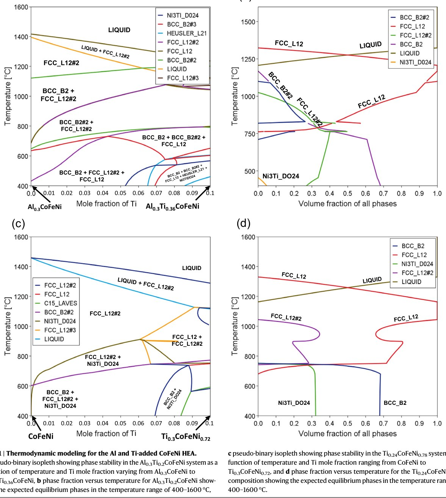
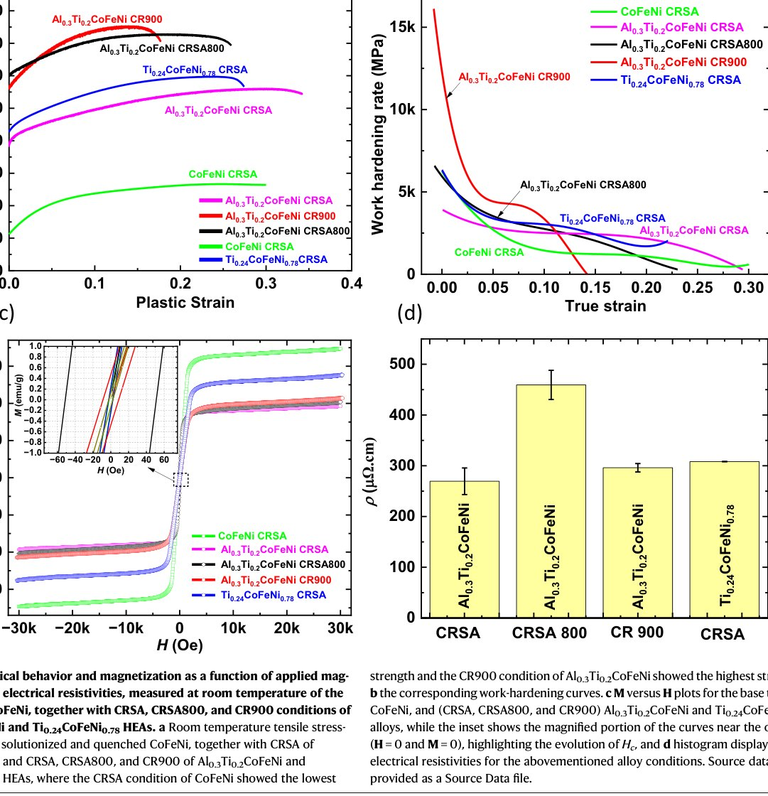
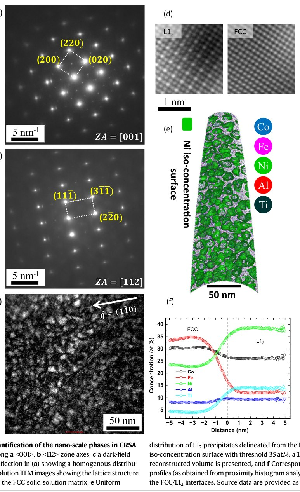
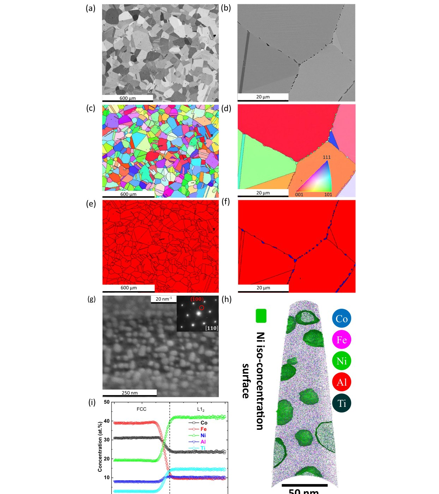
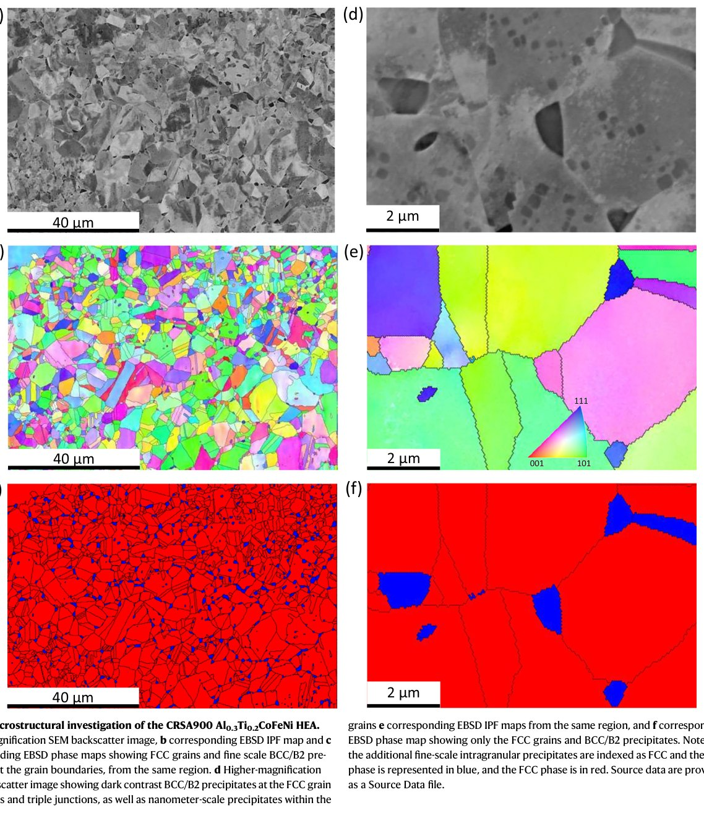
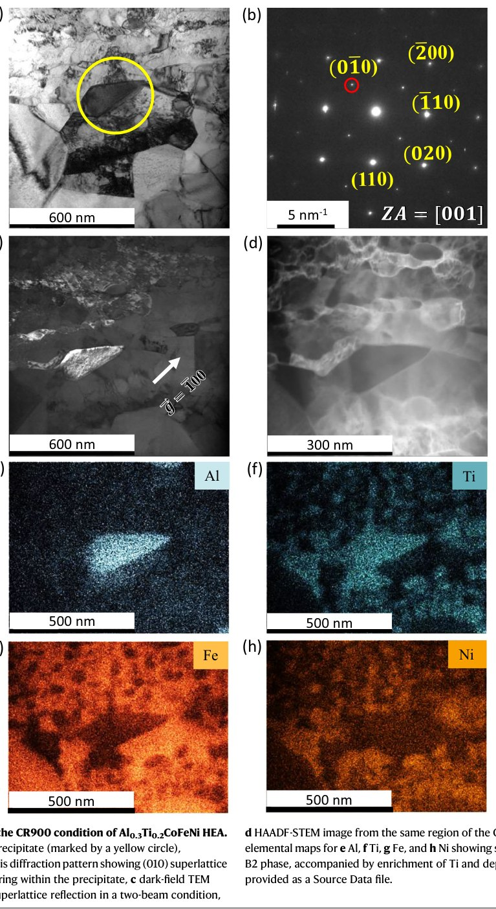
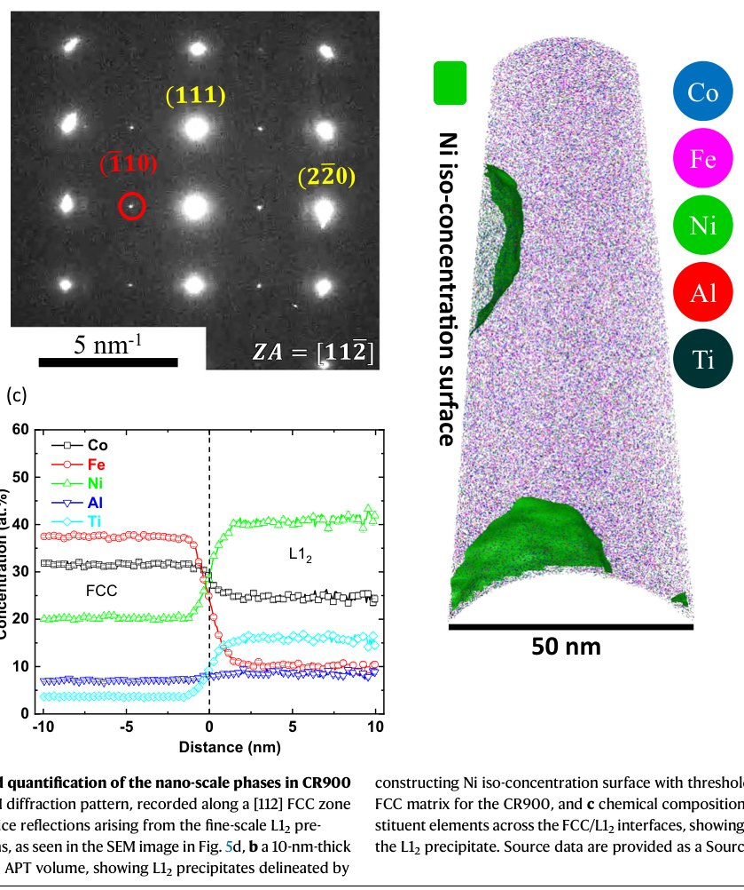
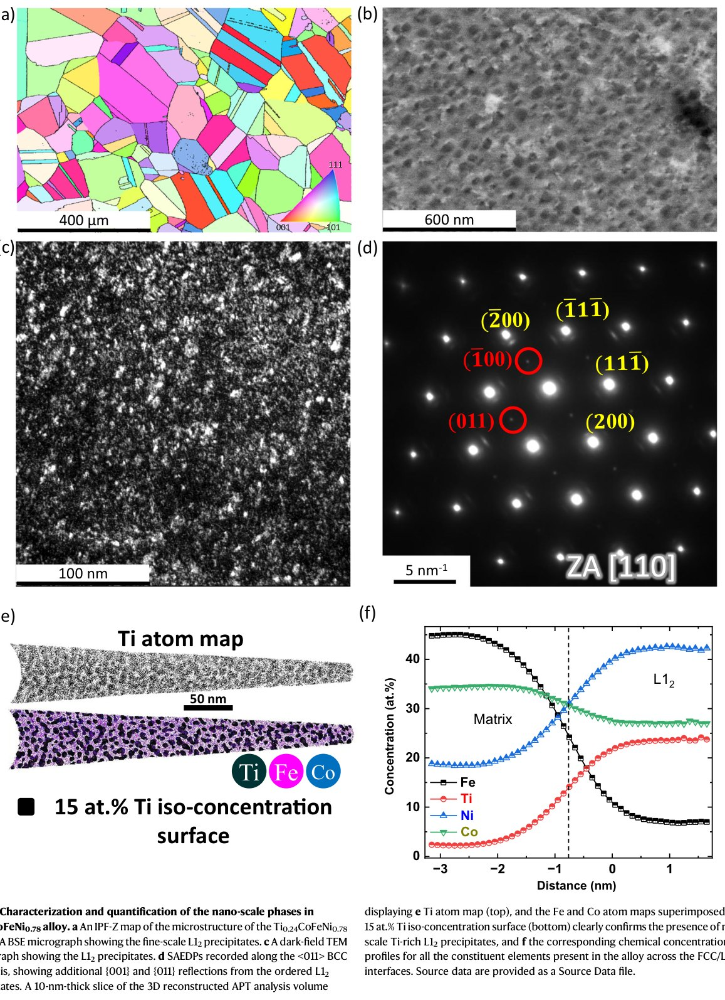
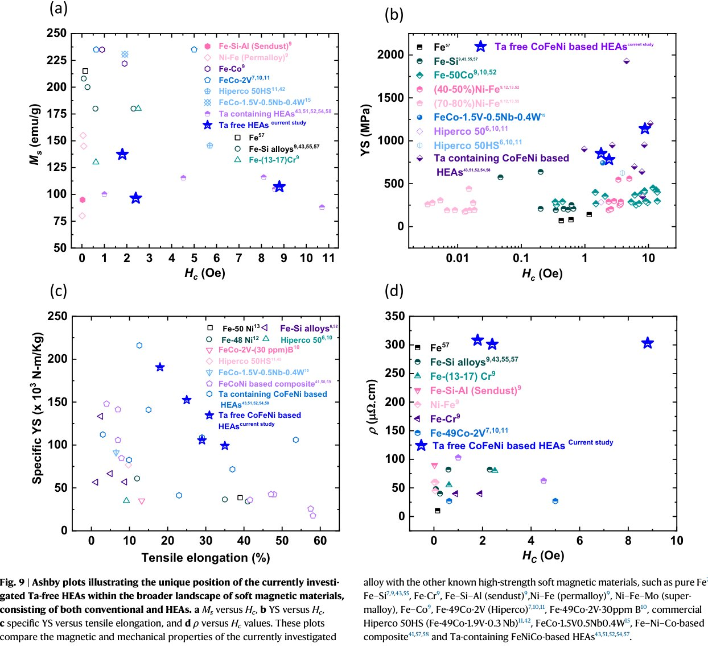
译文仅供学习参考，术语与数据以英文原文为准。已省略参考文献、方法。
Acta Materialia · 2023
异相界面对磁性 Al0.3CoFeNi 复杂浓缩合金局部矫顽力机制的作用Role of heterophase interfaces on local coercivity mechanisms in the magnetic Al0.3CoFeNi complex concentrated alloy
本页为「摘要 + 正文」中文翻译（含引言、实验、结果、讨论、结论各节）；已省略参考文献与致谢。默认显示中文，可用右上角按钮切换「对照 / EN」。
摘要 / Abstract
Microstructural features across different length scales have a profound influence on the coercivity of magnetic alloys. Whereas the role of homophase boundaries on the pinning of magnetic domain walls is well established, the influence of heterophase interfaces on domain wall motion is complex and poorly understood. Here, we use state-of-the-art electron microscopy techniques to show that the magnetization reversal process in an Al0.3CoFeNi magnetic complex concentrated alloy (CCA), which is responsible for its coercivity, changes dramatically from a nucleation-type mechanism in the FCC+L12 state of the CCA, with a domain wall width of 171 nm, to a pinning type mechanism in the microstructure with colonies of FCC/L12 nanorods embedded in a BCC/B2 matrix, with a domain wall width of 35 nm. Our work reveals that heterophase FCC/BCC interfaces have a much stronger effect on coercivity than isostructural chemically ordered/disordered interfaces and provides a powerful guide to the rational design of microstructure to tune magnetic properties in both complex concentrated alloys and conventional magnetic alloys.
跨越不同尺度的组织特征对磁性合金的矫顽力有深刻影响。同相界（homophase boundary）对磁畴壁钉扎的作用已被充分认识，但异相界面（heterophase interface）对畴壁运动的影响却复杂而认识不足。本文采用最先进的电子显微技术表明：决定矫顽力的磁化反转过程在 Al0.3CoFeNi 磁性复杂浓缩合金（CCA）中发生了显著转变——从该 CCA 的 FCC+L12 状态下的形核型（nucleation-type）机制（畴壁宽度 171 nm），转变为 FCC/L12 纳米棒集束嵌于 BCC/B2 基体的组织中的钉扎型（pinning-type）机制（畴壁宽度 35 nm）。我们的工作揭示，异相 FCC/BCC 界面对矫顽力的作用远强于同结构的化学有序/无序界面，为通过合理设计组织来调控复杂浓缩合金与传统磁性合金的磁性能提供了有力指导。
1. 引言1. Introduction
Complex concentrated alloys (CCAs) or multi-principal-element alloys (MPEAs) or high entropy alloys (HEAs) are a novel class of materials that offer superior functional and structural performance in many applications. Their properties can be tuned over a very wide range as a result of the vast number of possible combinations of elements and processing strategies. Whereas most previous studies of CCAs have focused on their structural properties, much less effort has been paid to understanding their local functional properties.
复杂浓缩合金（CCA）、多主元合金（MPEA）或高熵合金（HEA）是一类新型材料，在许多应用中提供优异的功能与结构性能。由于元素组合与工艺策略数量极为庞大，其性能可在很宽范围内调控。此前对 CCA 的研究大多聚焦于结构性能，而对其局部功能性能的理解则投入不足。
Soft magnetic materials are key components in industrial applications that include electrical power generation, electrical machines, magnetic shielding and electromagnets. High frequency electrical motors require materials with high mechanical strength and superior magnetic properties. However, the low strength of conventional soft magnetic materials limits their use in such applications, particularly in high rotational frequency devices.
软磁材料是发电、电机、磁屏蔽和电磁铁等工业应用中的关键部件。高频电机需要兼具高力学强度和优异磁性能的材料。然而，传统软磁材料强度较低，限制了它们在此类应用中的使用，尤其是在高转速器件中。
Recent research has focused on identifying novel high-strength soft magnets in the HEA domain. Most magnetic CCAs contain Fe, Co and Ni, in combination with other alloying elements. Although some FeCoNi-X (X = Al, Si, Cu, AlSi, AlCu, AlMn, etc.) CCAs have promising combinations of magnetic and mechanical properties, their magnetic softness generally decreases with increasing mechanical strength, with their coercivity Hc depending sensitively on their composition and microstructure over various length scales. For example, the strength of the FeCoNi(CuAl)0.8Gax (0 < x < 0.08) HEA improved from 601 MPa for x = 0 to 1176 MPa for x = 0.08. However, its coercivity increased from 362 to 685.8 A/m. Another important property is saturation magnetization Ms, which increases with diamagnetic Ga content in FeCoNi(CuAl)0.8Gax HEAs. Such changes in magnetic and mechanical properties result from the heterogeneous microstructure of these alloys and are not yet understood experimentally.
近期研究着眼于在高熵合金领域寻找新型高强度软磁体。大多数磁性 CCA 含 Fe、Co、Ni，并配以其他合金元素。尽管一些 FeCoNi-X（X = Al、Si、Cu、AlSi、AlCu、AlMn 等）CCA 具有颇具前景的磁-力学性能组合，但它们的磁软性通常随力学强度提高而下降，其矫顽力 Hc 对成分及跨多个尺度的组织高度敏感。例如，FeCoNi(CuAl)0.8Gax（0 < x < 0.08）高熵合金的强度从 x = 0 时的 601 MPa 提高到 x = 0.08 时的 1176 MPa，但其矫顽力也从 362 增大到 685.8 A/m。另一重要性能是饱和磁化强度 Ms，它在 FeCoNi(CuAl)0.8Gax 高熵合金中随抗磁性 Ga 含量增加而升高。这些磁性与力学性能的变化源自这些合金的非均匀组织，实验上尚未得到理解。
Here, we study a model Al0.3CoFeNi CCA, whose magnetic and mechanical properties can be tuned by varying the processing conditions. The first sample was obtained by solutionizing the alloy at 1250 °C (cold rolling solution annealing or CRSA) to form an FCC+L12 microstructure. The second sample was obtained by annealing the solutionized alloy at 600 °C for 50 h to form a hierarchical microstructure (CRSA600). The magnetic and mechanical properties of the two alloys are given in Table 1. The large difference in properties (increase in Hc by a factor of >60 and increase in yield strength and hardness by a factor of >2) obtained by changing the heat treatment makes this alloy a model material to understand the influence of local variations in composition and microstructure on coercivity using quantitative in situ magnetic imaging techniques in the transmission electron microscope (TEM).
本文研究一种模型 Al0.3CoFeNi 复杂浓缩合金，其磁性与力学性能可通过改变工艺条件来调控。第一个样品通过在 1250 °C 固溶（冷轧固溶退火，CRSA）获得，形成 FCC+L12 组织；第二个样品通过将固溶态合金在 600 °C 退火 50 h 获得，形成分级组织（CRSA600）。两种合金的磁性与力学性能列于表 1。改变热处理所带来的性能巨大差异（Hc 增大 >60 倍，屈服强度和硬度提高 >2 倍），使该合金成为一种理想的模型材料，可借助透射电子显微镜（TEM）中的定量原位磁成像技术，理解成分与组织的局部变化对矫顽力的影响。
2. 实验方法2. Experimental
A plate-shaped arc-melted Al0.3CoFeNi ingot was procured from ACI Alloys Inc., CA, USA. The composition of the cast ingot was measured to be 9.4Al-30.1Co-31.8Fe-28.6Ni (at.%) using energy dispersive X-ray spectroscopy (EDXS) in a scanning electron microscope. The cast alloy was initially homogenized at 1250 °C for 1 h. Subsequently, all samples were cold rolled to 90%, encapsulated in quartz tubes backfilled with Ar and either solutionized at 1250 °C for 5 min (CRSA) or solutionized and annealed at 600 °C for 50 h (CRSA600), followed by water quenching. Magnetization (M) vs magnetic field (H) measurements obtained from the CRSA and CRSA600 samples are shown in Fig. S1 in the Supplementary Materials.
一块板状的电弧熔炼 Al0.3CoFeNi 铸锭购自美国加州 ACI Alloys 公司。经扫描电镜中的能谱（EDXS）测定，铸锭成分为 9.4Al-30.1Co-31.8Fe-28.6Ni（原子分数）。铸态合金先在 1250 °C 均匀化 1 h。随后，所有样品冷轧至 90%，封入充 Ar 的石英管中，或在 1250 °C 固溶 5 min（CRSA），或固溶后在 600 °C 退火 50 h（CRSA600），再水淬。CRSA 与 CRSA600 样品的磁化强度（M）随磁场（H）的测量结果见补充材料图 S1。
Electron-transparent (<200 nm thick) specimens for TEM investigations were prepared using focused ion beam (FIB) sputtering with Ga in a dual beam scanning electron microscope (FEI Helios 400). A protective C layer was deposited on the surface of the alloys, followed by a conventional lift-off preparation process. The specimens were transferred to Cu Omniprobe grids. Ga-ion-beam-induced surface damage was reduced by subsequently using low energy (<1 keV) Ar ion beam milling (Fischione 1040 Nanomill).
用于 TEM 研究的电子透明（厚度 <200 nm）样品，在双束扫描电镜（FEI Helios 400）中采用 Ga 聚焦离子束（FIB）溅射制备。先在合金表面沉积保护性 C 层，再进行常规的剥离（lift-off）制样。样品转移到 Cu Omniprobe 载网上。随后用低能（<1 keV）Ar 离子束减薄（Fischione 1040 Nanomill）以减轻 Ga 离子束引起的表面损伤。
Microstructural and chemical composition analyses were carried out using a probe-aberration-corrected scanning transmission electron microscope (FEI Titan 300-200) equipped with an in-column EDXS system (Super-X technology). High-angle annular dark-field (HAADF) scanning TEM (STEM) and EDXS spectrum images were recorded and processed using ThermoFisher Velox software. The inner semi-angle of the annular dark-field detector was 69.1 mrad for HAADF STEM imaging. Magnetic imaging of domain structures was carried out in magnetic-field-free conditions (Lorentz mode) by switching off the conventional objective lens in an image aberration-corrected TEM (FEI Titan 60-300). Images were recorded using a 4k direct electron counting detector (Gatan K2 IS) in counting mode. Off-axis electron holography was carried out using a single electron biprism, with a positive voltage of up to 120 V applied to the biprism wire, giving a 3.2 nm interference fringe spacing and ~40% fringe contrast. Holograms were analyzed using a standard fast Fourier transform algorithm in custom software written in the Semper image processing language.
组织与化学成分分析使用探针球差校正的扫描透射电镜（FEI Titan 300-200）进行，该机配备柱内 EDXS 系统（Super-X 技术）。高角环形暗场（HAADF）扫描 TEM（STEM）与 EDXS 谱图用 ThermoFisher Velox 软件采集与处理。HAADF STEM 成像时环形暗场探测器的内半角为 69.1 mrad。磁畴结构的磁成像在无磁场条件（洛伦兹模式）下进行——在像差校正 TEM（FEI Titan 60-300）中关闭常规物镜，用 4k 直接电子计数探测器（Gatan K2 IS）以计数模式采集图像。离轴电子全息采用单电子双棱镜，对双棱镜丝施加最高 120 V 的正电压，得到 3.2 nm 的干涉条纹间距和约 40% 的条纹衬度。全息图用以 Semper 图像处理语言编写的自定义软件、采用标准快速傅里叶变换算法分析。
3.1 CRSA 样品的组织3.1 Microstructure of the CRSA sample
Previous atom probe tomography and TEM studies of the CRSA sample revealed the presence of Al+Ni rich L12 (ordered FCC) precipitates of average size ~1.95 nm dispersed in an FCC matrix. Fig. 1(a) shows a composition-sensitive HAADF STEM image (Image intensity ~Z², where Z is atomic number) and a corresponding bright-field (BF) STEM image recorded from the same region. The HAADF STEM image confirms the presence of local fluctuations in chemical composition, while the BF STEM image, which is sensitive to diffraction conditions, reveals dense contrast variations that are attributed to the presence of the L12 precipitates. As this specimen was prepared for magnetic imaging with a large lateral size and a uniform thickness of ~100 nm, many particles contribute to the contrast. The fact that the precipitates are coherent with the matrix is evidenced by the absence of misfit dislocations in the high-resolution HAADF STEM image shown in Fig. 1(b).
此前对 CRSA 样品的原子探针层析和 TEM 研究表明，FCC 基体中弥散着平均尺寸约 1.95 nm、富 Al+Ni 的 L12（有序 FCC）析出相。图 1(a) 给出了对成分敏感的 HAADF STEM 像（像强度 ~Z²，Z 为原子序数）以及在同一区域记录的相应明场（BF）STEM 像。HAADF STEM 像证实存在化学成分的局部起伏，而对衍射条件敏感的 BF STEM 像则显示出密集的衬度变化，归因于 L12 析出相的存在。由于该样品为磁成像制备、横向尺寸大且厚度均匀（约 100 nm），大量颗粒都对衬度有贡献。图 1(b) 的高分辨 HAADF STEM 像中不存在错配位错，证明析出相与基体共格。
3.2 CRSA 样品的磁成像3.2 Magnetic imaging of the CRSA sample
The magnetic domain structure was first studied qualitatively using Fresnel imaging at a defocus of 1 mm in magnetic-field-free conditions. Magnetic domain walls are visible as black and white contrast lines (Fig. 1(c)). Splitting of vertical domain walls into pairs close to the specimen edge is associated with the formation of closure domains to reduce energetically-costly stray fields. As it is difficult to extract quantitative information from Fresnel defocus images, off-axis electron holography was used to further study the magnetic properties, recovering the phase shift φ of the electron wave induced by the projected in-plane component of the magnetic field. Fig. 1(d) shows a magnetic induction map of closure domains in the lower left corner of Fig. 1(c), confirming one 180° and two 90° magnetic domain walls. The width of the 180° domain wall was determined from the differential (∂φ/∂x) of the recorded phase shift using a fitting function y = y0 ± a·tanh((x − x0)/w). The domain wall width δw = πw is measured to be 171 ± 5 nm in the CRSA sample, larger than typical domain wall widths in Co (24 nm), Fe (64 nm) and Ni (82 nm). The electron beam direction is close to perpendicular to the field direction in the magnetic domains, providing a reliable way to determine the domain wall width in thin TEM specimens.
首先在无磁场条件下、以 1 mm 离焦量的菲涅耳（Fresnel）成像定性研究磁畴结构。磁畴壁表现为黑白衬度线（图 1(c)）。靠近样品边缘处竖直畴壁劈裂成对，与形成闭合畴以减少能量代价高的杂散场有关。由于难以从菲涅耳离焦像中提取定量信息，遂用离轴电子全息进一步研究磁性能，重建由磁场投影面内分量所诱导的电子波相移 φ。图 1(d) 给出图 1(c) 左下角闭合畴的磁感应图，证实存在一条 180° 畴壁和两条 90° 畴壁。180° 畴壁宽度由所记录相移的微分（∂φ/∂x）确定，采用拟合函数 y = y0 ± a·tanh((x − x0)/w)。CRSA 样品中畴壁宽度 δw = πw 测得为 171 ± 5 nm，大于 Co（24 nm）、Fe（64 nm）和 Ni（82 nm）的典型畴壁宽度。电子束方向接近垂直于磁畴中的磁场方向，为在薄 TEM 样品中确定畴壁宽度提供了可靠途径。
3.3 CRSA600 样品的组织与磁成像3.3 Microstructure & magnetic imaging of the CRSA600 sample
Heat treatment of the CRSA600 sample resulted in the formation of a striking nanorod structure comprising FCC+L12 and BCC+B2 regions, as reported previously. For magnetic imaging, a TEM specimen containing more than one grain was prepared so that magnetic domains oriented both parallel and perpendicular to the nanorods could be studied. Fig. 2(a) shows a low magnification BF TEM image. Region I contains multiple long nanorods of FCC(+B2)/L12 colonies in a BCC(+B2) matrix, whose width varies between 50 and 200 nm. Region II appears to contain equidimensional grains, which correspond to the nanorods viewed along their long axes. SAED patterns (Fig. 2(b, c)) show region I oriented along [110]FCC/[111]BCC and region II along [001]FCC/[001]BCC. The diffraction spots from the FCC and BCC phases overlap, indicating a close epitaxial relationship; a mistilt of ~3° was measured between the FCC and BCC columns. Red triangles mark weak superlattice reflections associated with L12 and B2 ordering.
如此前报道，CRSA600 样品的热处理形成了引人注目的纳米棒结构，包含 FCC+L12 与 BCC+B2 区域。为进行磁成像，制备了含多个晶粒的 TEM 样品，以便研究取向既平行又垂直于纳米棒的磁畴。图 2(a) 为低倍 BF TEM 像。区域 I 含有多根长纳米棒——BCC(+B2) 基体中的 FCC(+B2)/L12 集束，宽度在 50–200 nm 之间。区域 II 看似含等轴晶粒，实为沿长轴方向观察的纳米棒。SAED 花样（图 2(b、c)）显示区域 I 沿 [110]FCC/[111]BCC 取向、区域 II 沿 [001]FCC/[001]BCC 取向。FCC 与 BCC 相的衍射斑相互重叠，表明二者存在紧密的外延关系；测得 FCC 与 BCC 柱之间约 3° 的偏转（mistilt）。红色三角标记了与 L12、B2 有序相关的弱超晶格衍射斑。
Fig. 2(d, e) shows Fresnel defocus images of representative magnetic domain structures in the two regions in magnetic-field-free conditions. Strikingly, the magnetic domain walls in region I are regular and follow the straight heterophase interfaces closely, with fine black and white streaks visible inside the columns. In contrast, region II contains a highly dense random network of magnetic domain walls. Fig. S4 shows a large-field-of-view image of the projected in-plane magnetic induction in region I determined from a pair of Fresnel defocus images using the transport-of-intensity equation.
图 2(d、e) 给出无磁场条件下两区域中代表性磁畴结构的菲涅耳离焦像。引人注目的是，区域 I 中的磁畴壁规整，紧贴平直的异相界面走向，柱体内部可见细小的黑白条纹。相比之下，区域 II 含有极为密集的随机磁畴壁网络。图 S4 给出由一对菲涅耳离焦像经强度传输方程（TIE）确定的区域 I 投影面内磁感应的大视场图像。
3.4 磁畴与组织的关联3.4 Correlation between magnetic domains and microstructure
STEM EDXS spectrum imaging correlated the compositional variations of the FCC and BCC phases with the positions of magnetic domains in the CRSA600 sample. Fig. 3(a) shows a BF STEM image and corresponding Co, Fe, Ni and Al maps from region II, showing that the Co–Fe-rich BCC phase is the matrix, in which Ni–Al-rich FCC columns are distributed. The EDXS maps reveal compositional fluctuations in the Ni–Al-rich FCC columns and additional Ni enrichment parallel to the FCC/BCC interphase boundaries. Fig. 3(d) shows EDXS line scans across the interface; within the FCC column, an approximately 7-nm-wide Ni–Al-rich and Co–Fe-poor region runs parallel to the FCC/BCC interface. Based on these results and APT reconstructions (Fig. S2), the morphology of the FCC and BCC regions can be described as colonies of FCC/L12 nanorods embedded in a BCC/B2 matrix. Within both the FCC/L12 nanorods and the BCC/B2 matrix, there is a finer-scale decomposition into ordered and disordered lamellar regions. A high-resolution HAADF STEM image (Fig. 3(e)) shows a uniform lattice in both grains.
STEM EDXS 谱图成像将 FCC 与 BCC 相的成分变化与 CRSA600 样品中磁畴的位置关联起来。图 3(a) 给出区域 II 的 BF STEM 像及相应的 Co、Fe、Ni、Al 元素图，显示富 Co–Fe 的 BCC 相为基体，其中分布着富 Ni–Al 的 FCC 柱。EDXS 图揭示了富 Ni–Al 的 FCC 柱内的成分起伏，以及沿 FCC/BCC 相界平行方向的额外 Ni 富集。图 3(d) 给出跨界面的 EDXS 线扫描；在 FCC 柱内，一条约 7 nm 宽、富 Ni–Al 而贫 Co–Fe 的区域平行于 FCC/BCC 界面延伸。基于这些结果及 APT 重构（图 S2），FCC 与 BCC 区域的形貌可描述为嵌于 BCC/B2 基体中的 FCC/L12 纳米棒集束。在 FCC/L12 纳米棒和 BCC/B2 基体内部，还存在更细尺度的、分解为有序与无序片层区域的结构。高分辨 HAADF STEM 像（图 3(e)）显示两晶粒中晶格均匀。
The magnetic domains in the CRSA600 sample were further analyzed using off-axis electron holography. To separate the electrostatic and magnetic contributions to the phase shift, pairs of electron holograms were recorded before and after turning the specimen over, using a cartridge-based holder; half of the sum and half of the difference give the electrostatic and magnetic contributions, respectively. The downward-oriented magnetic domains in the FCC+L12 columns contain straight magnetic contour lines, with small variations that may be associated with ordered L12 regions. In contrast, well-defined regions with no magnetic field lines in the BCC+B2 columns indicate weakly magnetic or non-magnetic inclusions; EDXS confirms these correspond to Ni–Al-rich inclusions. The width of the domain walls pinned at grain boundaries was determined to be δw = 35 ± 3 nm (Fig. 4(c)), almost 5 times smaller than in the CRSA sample. The domain wall width scales as δw ~ √(A/Keff), where A is the exchange stiffness and Keff the effective magnetic anisotropy; however, the CRSA600 sample contains several phases with different magnetic properties, and the magnetic domain walls overlap with the Al–Ni-rich enrichment between the FCC and BCC columns.
进一步用离轴电子全息分析 CRSA600 样品中的磁畴。为分离相移中的静电与磁贡献，使用可翻转样品盒在翻转样品前后各记录一对电子全息图；二者之和的一半与之差的一半分别给出静电与磁贡献。FCC+L12 柱中向下取向的磁畴含有平直的磁等值线，其中的小幅变化可能与有序 L12 区域相关。相反，BCC+B2 柱中界限清晰、无磁力线的区域指示弱磁或非磁夹杂；EDXS 证实这些区域对应富 Ni–Al 夹杂。钉扎于晶界处的畴壁宽度测得为 δw = 35 ± 3 nm（图 4(c)），几乎比 CRSA 样品小 5 倍。畴壁宽度满足 δw ~ √(A/Keff)，其中 A 为交换刚度、Keff 为有效磁各向异性；但 CRSA600 样品含有多个磁性不同的相，且磁畴壁与 FCC、BCC 柱之间富 Al–Ni 的富集区相重叠。
4. 讨论4. Discussion
Magnetism in HEAs can be a complex phenomenon, especially in the presence of hierarchical multi-phase microstructures over multiple length scales, which in turn result from competing phase stabilities between solid solution and ordered phases. The possibility to combine transition metals with other elements and different processing parameters provides a wide range of opportunities to tailor the magnetic and functional properties of HEAs. In the present non-equimolar Al0.3CoFeNi CCA, solid-state decomposition induced by thermomechanical treatment results in a eutectoid-like microstructure of FCC+L12 nanorods in a BCC+B2 matrix. Thermomechanical treatment of the CRSA600 sample increases the coercivity by a factor of 64. High spatial resolution magnetic characterization reveals that the average magnetic domain size (Dc) is reduced by an order of magnitude in the CRSA600 sample, as a result of magnetic domain walls at heterophase boundaries separating the FCC and BCC phases. Furthermore, the domain wall width is reduced significantly from 171 ± 5 to 35 ± 3 nm, suggesting that homophase interfaces in the FCC alloy are ineffective at pinning domain walls, leading to low coercivity.
高熵合金中的磁性可能是一种复杂现象，尤其是在存在跨多个尺度的分级多相组织时，而这种组织又源自固溶体相与有序相之间相互竞争的相稳定性。将过渡金属与其他元素组合、并配以不同工艺参数，为调控高熵合金的磁性与功能性能提供了广阔空间。在本文非等摩尔的 Al0.3CoFeNi CCA 中，热机械处理诱导的固态分解形成了类共析组织——BCC+B2 基体中的 FCC+L12 纳米棒。CRSA600 样品的热机械处理使矫顽力增大 64 倍。高空间分辨磁表征揭示，由于磁畴壁位于分隔 FCC、BCC 相的异相界面处，CRSA600 样品的平均磁畴尺寸（Dc）减小了一个数量级。此外，畴壁宽度从 171 ± 5 nm 显著减小到 35 ± 3 nm，说明 FCC 合金中的同相界面对钉扎畴壁无效，导致低矫顽力。
In contrast, in the CRSA600 sample the presence of FCC and BCC phases with different compositions results in different local magnetic properties. In the FCC nanorods, the Ni–Al-rich ordered L12 phase displays straight magnetic field lines with only slight angular variations. In contrast, the Ni–Al-rich ordered B2 regions in the BCC phase strongly affect the magnetic induction, as the density of field lines is reduced at their locations. The saturation magnetization of the two samples is similar, with a slight increase in CRSA600 attributable to the BCC phase. The pinning of domain walls at heterophase FCC/BCC boundaries is influenced by crystallographic and compositional transitions across these boundaries, as well as by Ni and Al enrichment in the FCC phase along them, resulting in the relatively narrow domain wall width of 35 nm.
相比之下，在 CRSA600 样品中，成分不同的 FCC 与 BCC 相带来了不同的局部磁性能。在 FCC 纳米棒中，富 Ni–Al 的有序 L12 相表现出平直、仅有轻微角度变化的磁力线；而 BCC 相中富 Ni–Al 的有序 B2 区域则强烈影响磁感应——其所在位置磁力线密度降低。两样品的饱和磁化强度相近，CRSA600 略有升高，可归因于 BCC 相。异相 FCC/BCC 界面对畴壁的钉扎，受这些界面两侧的晶体学与成分过渡、以及沿界面 FCC 相中 Ni、Al 富集的影响，导致 CRSA600 样品相对较窄的 35 nm 畴壁宽度。
Our observations suggest that the magnetization reversal mechanism responsible for coercivity changes from nucleation-type in the CRSA sample to pinning-type in the CRSA600 sample. To validate this, in situ magnetization reversal experiments were carried out inside the TEM by exciting the objective lens to a pre-calibrated value and tilting the sample between −30° and +30° to apply an effective in-plane field. In the CRSA sample, domain walls nucleate at the specimen edge and move across the field of view without interruption, showing a lack of pinning. In the CRSA600 sample, even at the maximum in-plane field (~600 mT) a saturated state could not be reached; switching events occurred at discrete domain walls as the field increased from 0 to +81 and +133 mT, with the domain wall contrast reversing sign locally. Magnetization switching forms domain walls containing both black and white contrast—so-called Bloch caps in 180° domain walls. These experiments confirm that the reversal process changes from nucleation-type (CRSA) to pinning-type (CRSA600) as a result of phase decomposition after prolonged annealing at 600 °C for 50 h, producing a nanorod microstructure with heterophase FCC/BCC interfaces.
我们的观察表明，决定矫顽力的磁化反转机制从 CRSA 样品的形核型转变为 CRSA600 样品的钉扎型。为验证这一点，在 TEM 内进行了原位磁化反转实验——将物镜励磁到预校准值，并将样品在 −30° 到 +30° 之间倾转以施加有效面内磁场。在 CRSA 样品中，畴壁在样品边缘形核并不受阻地扫过视场，表明缺乏钉扎。在 CRSA600 样品中，即使在最大面内磁场（约 600 mT）下也无法达到饱和态；随磁场从 0 增大到 +81、+133 mT，在离散的畴壁处发生翻转事件，畴壁衬度局部反号。磁化翻转形成了同时含黑白衬度的畴壁——即 180° 畴壁中的所谓布洛赫帽（Bloch cap）。这些实验证实，经 600 °C 长时间退火 50 h 的相分解，形成了带异相 FCC/BCC 界面的纳米棒组织，使反转过程从（CRSA 的）形核型转变为（CRSA600 的）钉扎型。
The present study provides fundamental insight into the role of interphase interfaces on magnetization reversal through domain wall pinning. Heterophase interfaces between phases with different crystal structures (e.g., FCC/BCC) are effective at pinning magnetic domain walls and consequently increase coercivity, particularly when they occur at near-periodic intervals on deep-sub-μm length scales, as in the present nanorod microstructure. In contrast, homophase interfaces of order/disorder type (FCC+L12 or BCC+B2) do not significantly hinder domain wall motion. This insight can guide the design of both high entropy and conventional alloys with desired combinations of magnetic and mechanical properties: for high strength with low coercivity, introducing a large volume fraction of ordered precipitates within a parent solid solution is effective, especially if misfit strain is minimized; conversely, higher coercivity can be produced by a nanorod structure with heterophase boundaries, and uniaxial anisotropy can be tailored via strain- or magnetic-field-induced anisotropy during annealing—analogous to strategies used for Alnico-type and Sm–Co hard magnets.
本研究为界面（相间界面）通过畴壁钉扎对磁化反转的作用提供了基础性认识。晶体结构不同的相之间的异相界面（如 FCC/BCC）能有效钉扎磁畴壁，从而增大矫顽力，尤其是当它们在深亚微米尺度上近乎周期性出现时（如本文的纳米棒组织）。相反，有序/无序型的同相界面（FCC+L12 或 BCC+B2）不会显著阻碍畴壁运动。这一认识可指导设计具有所需磁-力学性能组合的高熵合金与传统合金：若要在低矫顽力下获得高强度，在母相固溶体中引入大体积分数的有序析出相是有效的，尤其是在错配应变最小化时；反之，带异相界面的纳米棒结构可产生更高矫顽力，而单轴各向异性可通过退火过程中应变或磁场诱导的各向异性来定制——这与 Alnico 型和 Sm–Co 硬磁体所用的策略类似。
5. 结论5. Conclusions
Our high spatial resolution investigation of the microstructural and magnetic behavior of an Al0.3CoFeNi complex concentrated alloy has revealed an intricate coupling between the presence of a hierarchical multi-length-scale multi-phase microstructure and the motion of magnetic domain walls. High-resolution in situ techniques show that the magnetization reversal process, which is responsible for coercivity, changes from a nucleation-type mechanism in the FCC+L12 microstructure of this alloy, with a domain wall width of 171 nm, to a pinning-type mechanism in the nanorod microstructure of the same alloy, with a domain wall width of 35 nm. Significantly, heterophase FCC/BCC nanoscale interfaces strongly pin magnetic domain walls, increasing coercivity when compared to homophase chemically ordered/disordered interfaces. These results provide a powerful guide for the rational design of microstructure to tune the magnetic and mechanical properties of both high entropy alloys and more conventional magnetic alloys.
我们对 Al0.3CoFeNi 复杂浓缩合金组织与磁行为的高空间分辨研究，揭示了分级、多尺度、多相组织的存在与磁畴壁运动之间的复杂耦合。高分辨原位技术表明，决定矫顽力的磁化反转过程，从该合金 FCC+L12 组织中的形核型机制（畴壁宽度 171 nm），转变为同一合金纳米棒组织中的钉扎型机制（畴壁宽度 35 nm）。尤为重要的是，异相 FCC/BCC 纳米尺度界面强烈钉扎磁畴壁，相较同相化学有序/无序界面显著增大矫顽力。这些结果为通过合理设计组织来调控高熵合金及更传统磁性合金的磁性与力学性能提供了有力指导。
图表（来自原文）Figures from the original paper
下列为原文插图（含英文图注），供对照阅读。


译文仅供学习参考，术语与数据以英文原文为准。已省略参考文献与致谢。
Nature Communications · 2024
两吉帕高强度、可塑性变形的软磁体Two-gigapascal-strong ductile soft magnets
本页为「摘要 + 正文（Results and discussion）」中文翻译；已省略 Methods（方法）、补充材料与参考文献。默认显示中文，可用右上角按钮切换「对照 / EN」。
摘要 / Abstract
Soft magnetic materials (SMMs) are indispensable for electromechanical energy conversion in high-efficiency applications, but they are exposed to increasing mechanical loading conditions in electric motors due to higher rotational speeds. Enhancing the yield strength of SMMs is essential to prevent the degradation in magnetic performance and failure from plastic deformation, yet most SMMs have yield strengths far below one gigapascal. Here, we present a multicomponent nanostructuring strategy that doubles the yield strength of SMMs while maintaining ductility. We introduce morphologically anisotropic nanoprecipitates through dislocation-driven precipitation induced by preceding deformation during heat treatment in an iron–nickel–cobalt–tantalum material. With all dimensions of the precipitates below the magnetic domain wall width, we achieve a high precipitate number density with a large specific surface area, small interprecipitate spacing, and high lattice mismatch, which impede dislocation glide and strengthen the material. Both the matrix and precipitates are ferromagnetic, yielding a high magnetic moment. This nanostructuring approach offers a pathway to two-gigapascal-strong ductile SMMs with moderately increased coercivity that can be tolerated in exchange for significantly improved mechanical performance for sustainable electrification.
软磁材料（SMM）对高效应用中的机电能量转换不可或缺，但随着转速提高，它们在电机中承受的机械载荷日益增大。提升软磁材料的屈服强度对于防止磁性能退化和塑性变形失效至关重要，然而大多数软磁材料的屈服强度远低于 1 GPa。本文提出一种多组元纳米结构化策略，在保持塑性的同时使软磁材料的屈服强度翻倍。我们在一种铁–镍–钴–钽材料中，利用预先变形引入的位错，在热处理时驱动位错主导的析出，形成"形貌各向异性"的纳米析出相。由于析出相的各个维度都小于磁畴壁宽度，我们获得了高的析出相数量密度，兼具大的比表面积、小的析出相间距和高的晶格错配，从而阻碍位错滑移、强化材料。基体和析出相均为铁磁性，带来高磁矩。这种纳米结构化方法为实现两吉帕强度、可塑性变形的软磁体提供了途径——其矫顽力有适度升高，但为换取显著提升的力学性能，这一代价在可持续电气化中是可以接受的。
Soft magnetic materials (SMMs) exhibit rapid magnetic flux variations in response to changes in external magnetic fields. Electrification using SMMs in energy conversion applications is the fastest and most sustainable approach for counteracting climate change and solving the global energy crisis. Minimization of coercivity is crucial for reducing magnetic hysteresis losses in the form of dissipative heat during high-frequency magnetization and demagnetization. At the same time, increasing demand is required for SMMs with high yield strength and good ductility that can withstand harsh and dynamic mechanical loads in electrical motors and high-speed flywheel energy storage systems. The yield strength is the stress at which irreversible plastic deformation starts; thus, loading stresses must remain below this value for safe and efficient operation, otherwise high-speed electrical machines and their rotating parts undergo irreversible dimensional changes. SMMs with good ductility are also needed for manufacturing flexibility and damage tolerance. If the yield strength is too low, a build-up of inelastic deformation carriers will impede the free motion of magnetic domain walls, deteriorating the soft magnetic properties. Realizing a high yield strength requires preventing dislocation nucleation and motion through microscopic backstresses exerted by atomic-scale lattice distortion and lattice defects. This effect, termed mechanical strengthening, results in a fundamental design challenge because the internal stress fields of lattice defects can pin magnetic domain wall motion, thereby destroying the soft magnetic properties. Conventional microstructural strengthening measures often result in embrittlement and undesired domain wall interactions; coercivity and hysteresis-related energy losses may increase, and soft magnetic performance is lost.
软磁材料（SMM）能随外磁场的变化产生快速的磁通变化。在能量转换应用中使用软磁材料进行电气化，是应对气候变化、解决全球能源危机最快、最可持续的途径。尽量降低矫顽力对减少高频磁化–退磁过程中以耗散热形式出现的磁滞损耗至关重要。与此同时，人们对兼具高屈服强度和良好塑性、能承受电机和高速飞轮储能系统中严酷动态机械载荷的软磁材料需求日益增长。屈服强度是不可逆塑性变形开始时的应力；因此，载荷应力必须低于该值才能安全高效运行，否则高速电机及其旋转部件会发生不可逆的尺寸变化。塑性良好的软磁材料还能提供加工灵活性和损伤容限。若屈服强度过低，非弹性变形载体的积累会阻碍磁畴壁的自由运动，恶化软磁性能。要实现高屈服强度，就需要通过原子尺度晶格畸变和晶格缺陷施加的微观背应力来阻止位错的形核与运动。这一效应称为力学强化，它带来一个根本性的设计难题：晶格缺陷的内应力场会钉扎磁畴壁运动，从而破坏软磁性能。传统的组织强化手段常导致脆化和不利的畴壁相互作用；矫顽力和磁滞相关的能量损耗可能增大，软磁性能随之丧失。
Attempts have been made to address this challenge by introducing and tuning various types, sizes, and coherency states of second-phase precipitates into conventional SMMs and multicomponent-based magnets. Coherent cuboidal precipitates of well-tuned size can result in low magnetic domain wall pinning. However, the increase in attainable strength has proven to be limited to values far below one gigapascal. This is because the strengthening effect of coherent precipitates by dislocation shearing increases with size but cannot exceed the Orowan stress, at which dislocations circumvent precipitates. In contrast, incoherent precipitates are nonshearable obstacles for dislocations. Yet their large interfacial energy usually leads to coarse micron-sized precipitates that can strongly pin the motion of magnetic domain walls, thus losing soft magnetic features.
人们曾尝试通过在传统软磁材料和多组元磁体中引入并调控不同类型、尺寸和共格状态的第二相析出相来应对这一挑战。尺寸调控得当的共格立方（cuboidal）析出相可实现较低的磁畴壁钉扎。然而，可达到的强度提升被证明仅限于远低于 1 GPa 的水平。这是因为共格析出相通过位错剪切的强化效应虽随尺寸增大而增强，但不能超过 Orowan 应力——达到该应力时位错会绕过析出相。相反，非共格析出相是位错无法剪切的障碍，但其较大的界面能通常导致粗大的微米级析出相，会强烈钉扎磁畴壁运动，从而丧失软磁特性。
We propose a strategy to resolve this dilemma through a nanostructuring approach involving morphologically anisotropic nanoprecipitates. The synergistic effects of the morphology, distribution, size, and composition of the precipitates are achieved by: (a) The anisotropic morphology increases the surface area-to-volume ratio and lattice mismatch, strengthening the material via mechanical interactions with dislocations. (b) A finer size distribution reduces the interprecipitate spacing, enhancing strength. (c) The micromagnetically relevant length scales of the precipitates are kept below the magnetic domain wall width, minimizing interference with domain wall motion and thus reducing magnetic losses. (d) High concentrations of ferromagnetic elements with the highest possible magnetization are used. (e) We address the design challenge of triggering coherent, ferromagnetic, and anisotropic nanoprecipitates under thermodynamically nonequilibrium conditions while suppressing capillary-driven coarsening and avoiding the transition to incoherency.
我们提出一种策略，借助引入"形貌各向异性"纳米析出相的纳米结构化方法来化解这一两难。析出相在形貌、分布、尺寸和成分上的协同效应通过以下途径实现：(a) 各向异性形貌增大表面积/体积比和晶格错配，从而通过与位错的力学相互作用强化材料；(b) 更细的尺寸分布减小析出相间距，提高强度；(c) 析出相在微磁学上相关的尺度始终小于磁畴壁宽度，最大限度减少对畴壁运动的干扰，从而降低磁损耗；(d) 采用高浓度、尽可能高磁化强度的铁磁性元素；(e) 我们解决了在热力学非平衡条件下触发共格、铁磁、各向异性纳米析出相，同时抑制毛细驱动粗化、避免向非共格转变这一设计挑战。
These considerations have led us to a class of non-equiatomic iron–nickel–cobalt–tantalum multicomponent alloys (MCAs). The first three elements form a ferromagnetic matrix providing high magnetization, while the fourth triggers ordered precipitates. To achieve morphologically anisotropic and coherent nanoprecipitates with a fine distribution, we introduce microbands via plastic deformation along {111} planes to control the dislocation density and precipitate morphology. The microbands contain a high line density of planar dislocations, promoting rapid nucleation. Short-term isothermal annealing (1073 K, 10 min) triggers precipitates whose longitudinal edges lie along the fcc slip planes—a behaviour resulting from dislocation-assisted nucleation that promotes coherent-interface precipitates in a thermodynamic nonequilibrium state, enabling rapid nucleation, high number density, and small interprecipitate spacing. A minor fraction of partially coherent precipitates with similar chemistry/morphology but different structure coexists, formed during the evolution toward a more stable state. Extended treatment (1073 K, 60–300 min) tends to form incoherent precipitates until equilibrium; incoherent phase boundaries and coarsening cause an undesired decrease in strength and increase in coercivity.
基于这些考量，我们确定了一类非等原子比的铁–镍–钴–钽多组元合金（MCA）。前三种元素构成提供高磁化强度的铁磁性基体，第四种元素则触发有序析出相。为获得形貌各向异性、共格且细弥散的纳米析出相，我们通过沿 {111} 面的塑性变形引入微带（microband），以控制位错密度和析出相形貌。微带含有高线密度的平面位错，促进快速形核。短时等温退火（1073 K，10 min）触发析出相，其纵向棱边沿 fcc 滑移面分布——这一行为源于位错辅助形核，能在热力学非平衡态下促进形成具有共格界面的析出相，实现快速形核、高数量密度和小析出相间距。少量成分/形貌相近但结构不同的部分共格析出相与之共存，它们在向更稳定态演化的过程中相继形成。延长处理（1073 K，60–300 min）则倾向于形成非共格析出相直至达到平衡；非共格相界和粗化会带来不利的强度下降和矫顽力上升。
组织分析Microstructural analysis
To enhance the mechanical interaction between precipitates and dislocations, we designed an Fe35Co30Ni30Ta5 (at.%) alloy system using Thermo-Calc with the High Entropy Alloy database. This system aims for a supersaturated solid solution single-phase structure by solution treatment (1473 K) and a second phase with a different crystal structure by annealing (773–1173 K), to obtain a strong ferromagnetic solid solution matrix and an intermetallic phase with different crystal symmetry or anisotropic interfacial energies that can assume an anisotropic morphology. The base material "B-MCA" with a single-phase fcc structure was made by conventional casting, hot rolling, and homogenization at 1473 K (confirmed by XRD). B-MCA was cold rolled for 60% thickness reduction to introduce a high line density (3.2 × 10¹⁵ m⁻²) of planar dislocations on {111}fcc planes as nucleation sites (Fig. 1a, recorded by ECC imaging). The resulting single-fcc alloy with elongated grains along the cold-rolling direction is termed D-MCA ("D" = deformed). No obvious elemental segregation was observed from the microscale to the near-atomic scale, indicating chemical homogeneity.
为增强析出相与位错之间的力学相互作用，我们用 Thermo-Calc 配合高熵合金数据库设计了 Fe35Co30Ni30Ta5（原子分数）合金体系。该体系旨在通过固溶处理（1473 K）获得过饱和固溶体单相结构，并通过退火（773–1173 K）获得晶体结构不同的第二相，从而得到强铁磁性固溶体基体和一种具有不同晶体对称性或各向异性界面能、可呈现各向异性形貌的金属间化合物相。基础材料"B-MCA"（单相 fcc 结构）通过常规铸造、热轧和 1473 K 均匀化制得（经 XRD 证实）。将 B-MCA 冷轧减薄 60%，在 {111}fcc 面上引入高线密度（3.2 × 10¹⁵ m⁻²）的平面位错作为形核位点（图 1a，用 ECC 成像记录）。所得沿冷轧方向具有拉长晶粒的单相 fcc 合金记为 D-MCA（"D"代表变形 deformed）。从微观尺度到近原子尺度均未观察到明显的元素偏析，表明其化学均匀。
Nanoprecipitation was initiated by annealing D-MCA at 1073 K for 10 min. The resulting alloy contains a high number density (~(2.32 ± 0.34) × 10²² m⁻³) and volume fraction (~38%) of morphologically anisotropic nanoprecipitates (53 nm long, 8 nm wide) and is termed A-MCA ("A" = anisotropic; Fig. 1b). This gives a small effective planar inter-precipitate spacing (26.1 ± 6.1 nm) and a large specific surface area (3.3 × 10⁸ m⁻¹). The precipitates are distributed homogeneously in the fcc matrix (average grain size 101 ± 49 μm) with an {001}<211> texture and deformation-induced twins; their longitudinal edges are parallel to <111>fcc. STEM-HAADF imaging shows some precipitates in hcp arrangements (partially coherent), while others are L12 (ordered fcc) fully coherent with the matrix. The L12 nanoprecipitates constitute the major fraction, since no hcp diffraction peaks/superlattice spots appeared in XRD and SAED. The anisotropic morphology is attributed to anisotropic interfacial energies—0.11 and 0.64 J·m⁻² for the (111) and (100) planes, respectively (DFT). APT (Fig. 1d, 7 at.% Ta interface threshold) gives matrix Fe39.2Co30.5Ni27.6Ta2.7 and precipitate Ni37.7Co31.1Ta20.2Fe11.0 (at.%); Fe is depleted and Ta partitions strongly into the precipitates.
通过将 D-MCA 在 1073 K 退火 10 min 引发纳米析出。所得合金含有高数量密度（约 (2.32 ± 0.34) × 10²² m⁻³）和高体积分数（约 38%）的形貌各向异性纳米析出相（长 53 nm、宽 8 nm），记为 A-MCA（"A"代表各向异性 anisotropic；图 1b）。由此得到小的有效面内析出相间距（26.1 ± 6.1 nm）和大的比表面积（3.3 × 10⁸ m⁻¹）。析出相均匀分布于 fcc 基体（平均晶粒尺寸 101 ± 49 μm）中，基体具有 {001}<211> 织构和变形诱导孪晶；析出相的纵向棱边平行于 <111>fcc。STEM-HAADF 成像显示部分析出相为 hcp 排列（部分共格），另一些为与基体完全共格的 L12（有序 fcc）。L12 纳米析出相占主要比例，因为 XRD 和 SAED 中未出现 hcp 衍射峰/超晶格斑。各向异性形貌归因于各向异性的界面能——据 DFT，(111) 面和 (100) 面的界面能分别为 0.11 和 0.64 J·m⁻²。APT（图 1d，以 7 at.% Ta 作为界面阈值）给出基体成分 Fe39.2Co30.5Ni27.6Ta2.7、析出相成分 Ni37.7Co31.1Ta20.2Fe11.0（原子分数）；Fe 贫化，Ta 强烈分配进入析出相。
An intermediate treatment (973 K, 10 min) produced "I-MCA", expected to share A-MCA's precipitation mechanism at a lower kinetic factor. Its dislocation arrangement resembles D-MCA (lower line density 2.8 × 10¹⁵ m⁻²). Correlative TEM-APT (Fig. 1f) identified two dislocation lines as Ta-enriched regions (7 at.% Ta iso-surface), confirming preferential Ta segregation to dislocations that creates highly distorted regions initiating dislocation-assisted preferred precipitation. Pronounced superlattice diffraction from the ordered fcc lattice confirms the phase transformation of I-MCA is fundamentally the same as A-MCA. Notably, recrystallization was not observed even at 1173 K (0.7 Tm) and 300 min, because static recrystallization is suppressed by (1) precipitates pinning grain boundaries and (2) the high stacking fault energy (73.9 mJ·m⁻²) enabling dislocation double cross slip and screw annihilation. Prolonging the dwell or raising the temperature promotes transformation to more stable incoherent hcp precipitates. To confirm the role of preceding planar dislocations, B-MCA subjected to the same 1073 K/10 min treatment gave "S-MCA" ("S" = spherical) with coherent spherical precipitates (~11.1 ± 4.8 nm, volume fraction ~44.3 ± 3.6%).
中间处理（973 K，10 min）得到"I-MCA"，预期在较低动力学因子下与 A-MCA 共享析出机制。其位错排布与 D-MCA 相似（线密度较低，2.8 × 10¹⁵ m⁻²）。相关性 TEM-APT（图 1f）将两条位错线识别为富 Ta 区域（7 at.% Ta 等浓度面），证实 Ta 优先偏聚于位错、形成高度畸变区并引发位错辅助的择优析出。来自有序 fcc 晶格的明显超晶格衍射证实 I-MCA 的相变与 A-MCA 本质相同。值得注意的是，即使在 1173 K（0.7 倍熔点）和 300 min 下也未观察到再结晶，因为静态再结晶被以下因素抑制：(1) 析出相钉扎晶界；(2) 高层错能（73.9 mJ·m⁻²）使位错发生双交滑移并湮灭螺型分量。延长保温或提高温度会促进向更稳定的非共格 hcp 析出相转变。为确认预置平面位错的作用，对 B-MCA 施加相同的 1073 K/10 min 处理得到"S-MCA"（"S"代表球形 spherical），其含有共格球形析出相（约 11.1 ± 4.8 nm，体积分数约 44.3 ± 3.6%）。
力学与磁性能Mechanical and magnetic properties
The introduction of morphologically anisotropic precipitates yields a two-gigapascal-strong ductile soft magnet. Figure 2a shows the tensile stress–strain curves of A-MCA: yield strength (σy) 1.93 ± 0.02 GPa, total elongation 12.6 ± 0.9%. This high yield strength keeps the material elastic even under severe stresses without generating dislocations, preventing irreversible shape changes and undesired dislocation–domain-wall interactions during service, while its good ductility allows manufacturing flexibility and damage tolerance. Compared with variants of the same chemistry—B-MCA (homogenized, no precipitates), D-MCA (cold-rolled, no precipitates), and S-MCA (spherical precipitates)—A-MCA shows a nearly fourfold (~385%) increase in yield strength over precipitate-free B-MCA. D-MCA shows no strain hardening (necks immediately after yield) because dislocation motion/multiplication is impeded by the dense dislocation network (~3.2 × 10¹⁵ m⁻²). S-MCA has a yield strength below one gigapascal. A-MCA maintains a high dislocation density (2.5 × 10¹⁵ m⁻²) plus a high number density (2.3 × 10²² m⁻³) of anisotropic nanoprecipitates, giving 1.9 GPa yield strength while remaining ductile—resolving a long-standing dilemma—with a multi-stage work-hardening capability.
引入形貌各向异性析出相得到了两吉帕强度、可塑性变形的软磁体。图 2a 给出 A-MCA 的拉伸应力–应变曲线：屈服强度（σy）1.93 ± 0.02 GPa，总延伸率 12.6 ± 0.9%。如此高的屈服强度使材料即使在严酷应力下也保持弹性、不产生位错，从而防止服役中不可逆的形状变化以及不利的位错–畴壁相互作用；而良好塑性则提供加工灵活性和损伤容限。与成分相同的各变体——B-MCA（均匀化、无析出相）、D-MCA（冷轧、无析出相）和 S-MCA（球形析出相）——相比，A-MCA 的屈服强度较无析出相的 B-MCA 提高近四倍（约 385%）。D-MCA 无应变硬化（屈服后立即颈缩），因为位错运动/增殖被密集的位错网络（约 3.2 × 10¹⁵ m⁻²）阻碍。S-MCA 的屈服强度低于 1 GPa。A-MCA 既保持高位错密度（2.5 × 10¹⁵ m⁻²），又具有高数量密度（2.3 × 10²² m⁻³）的各向异性纳米析出相，屈服强度达 1.9 GPa 且仍保持塑性——化解了长期存在的两难——并表现出多阶段加工硬化能力。
Figure 2b shows the magnetic performance. A-MCA exhibits typical soft ferromagnetic behaviour with a saturation magnetization (Ms) of 115.4 ± 0.2 Am²·kg⁻¹ and coercivity (Hc) of 0.36 ± 0.03 kA·m⁻¹. Compared with our previously designed strong ductile soft magnet Fe32Co28Ni28Ta8Al7 (Ms 100.2 Am²·kg⁻¹), A-MCA shows a ~15% higher Ms. DFT (exact muffin-tin orbital method) gives a total magnetic moment of 1.50 μB/f.u. for Fe35Co30Ni30Ta5, ~15% higher than 1.32 μB/f.u. for Fe32Co28Ni28Ta8Al7, consistent with experiment. Since the local moments of Fe, Co, Ni are only slightly higher, the overall increase is attributed mainly to the higher concentration of ferromagnetic elements (95 at.% in A-MCA vs 88 at.%). Importantly, A-MCA has the lowest Hc among the variants of identical chemistry, achieved by controlling the micromagnetically relevant length scales—coherency, type, density, and morphology of defects—to reduce pinning from lattice distortion and internal stress. Ashby maps (Fig. 2c, d) show A-MCA combines high σy with moderate Hc, outperforming conventional SMMs and established MCAs; its yield strength exceeds all other MCAs (Supplementary Fig. 13). Its electrical resistivity is higher than pure metals, Fe-Si (<6.5 wt.% Si) and Fe-Co, and comparable to Fe-Ni and established MCAs—favorable for reducing eddy currents in high-frequency applications.
图 2b 给出磁性能。A-MCA 表现出典型的软铁磁行为，饱和磁化强度（Ms）115.4 ± 0.2 Am²·kg⁻¹，矫顽力（Hc）0.36 ± 0.03 kA·m⁻¹。与我们此前设计的强韧软磁体 Fe32Co28Ni28Ta8Al7（Ms 100.2 Am²·kg⁻¹）相比，A-MCA 的 Ms 高约 15%。DFT（精确 muffin-tin 轨道法）给出 Fe35Co30Ni30Ta5 的总磁矩为 1.50 μB/f.u.，比 Fe32Co28Ni28Ta8Al7 的 1.32 μB/f.u. 高约 15%，与实验一致。由于 Fe、Co、Ni 的局部磁矩仅略高，磁化强度的整体提升主要归因于更高的铁磁性元素浓度（A-MCA 中为 95 at.%，对比 88 at.%）。重要的是，在成分相同的各变体中 A-MCA 矫顽力最低，这是通过控制微磁学相关尺度——缺陷的共格性、类型、密度和形貌——以减少晶格畸变和内应力钉扎而实现的。Ashby 图（图 2c、d）显示 A-MCA 兼具高 σy 与中等 Hc，优于传统软磁材料和已有 MCA；其屈服强度超过所有其他 MCA（补充图 13）。其电阻率高于纯金属、Fe-Si（<6.5 wt.% Si）和 Fe-Co，与 Fe-Ni 及已有 MCA 相当——有利于在高频应用中降低涡流。
强化与增韧机制Strengthening and toughening mechanisms
To understand the combination of high strength and good ductility, we studied the deformation substructure using EBSD, ECCI and TEM at different straining stages (Fig. 3). Pile-up of geometrically necessary dislocations at grain boundaries is reflected by the kernel average misorientation (KAM), a local measure of inelastic lattice curvature (Fig. 3a). Microbands aligned along {111}fcc show pronounced dynamic refinement (Fig. 3b), inducing high dislocation passing stresses and continuous strain hardening that prevents damage initiation. Two types of discontinuous, incoherent, Ta-enriched grain-boundary precipitates form (promoted by Ta's high diffusion coefficient, 4.7 × 10⁻¹⁸ m²·s⁻¹ vs ~10⁻¹⁸–10⁻¹⁹ for Ni, Fe, Co at 1073 K). Although strain localization near these precipitates causes weakness and detachment at a later stage (Fig. 3c), A-MCA shows typical ductile fracture because the incoherent precipitates' small volume fraction (0.3%) keeps their influence on damage initiation small.
为理解高强度与良好塑性的组合，我们用 EBSD、ECCI 和 TEM 研究了不同应变阶段的变形亚结构（图 3）。晶界处几何必需位错的塞积由核平均取向差（KAM）反映，KAM 是对非弹性晶格曲率的局部度量（图 3a）。沿 {111}fcc 排列的微带表现出明显的动态细化（图 3b），产生高的位错通过应力和持续的应变硬化，从而防止损伤萌生。形成了两类不连续、非共格、富 Ta 的晶界析出相（由 Ta 的高扩散系数促成——1073 K 时 Ta 为 4.7 × 10⁻¹⁸ m²·s⁻¹，而 Ni、Fe、Co 约为 10⁻¹⁸–10⁻¹⁹）。尽管这些析出相附近的应变局部化在后期造成弱化和脱粘（图 3c），但由于非共格析出相体积分数很小（0.3%），其对损伤萌生的影响很小，A-MCA 仍表现出典型的韧性断裂。
TEM near the fracture surface revealed multiple parallel mechanical twins (number density (4.2 ± 0.7) × 10¹² m⁻², average width 14.7 ± 4.7 nm). Atomic-resolution STEM (Fig. 3d) shows twinning in the fcc matrix and at the matrix–precipitate interface, with FFT consistent with a <110>twin//<011>fcc system. Twinning is initiated by the high tensile stress (~2.0 GPa) reaching the critical value (~1.5 GPa) for activating twinning—generally difficult in bulk fcc materials whose SFE (73.9 mJ·m⁻²) far exceeds the typical regime (<~50 mJ·m⁻²), especially under quasistatic loading. This is enabled by the high strength from interactions between anisotropic precipitates and the dense dislocation network, providing an additional plastic mechanism at later strain that further ductilizes and toughens the material. The high strength of A-MCA arises from: (1) anisotropic nanoprecipitates with small inter-precipitate spacing (26.1 nm), high volume fraction (38%), specific surface area (3.3 × 10⁸ m⁻¹) and lattice mismatch (1.3%)—their anisotropic morphology giving a larger specific surface area than spherical precipitates (1.9 × 10⁸ m⁻¹) at the same number density/volume fraction (cf. cuboidal-precipitate Fe32Co28Ni28Ta8Al7 at 6.6 × 10⁷ m⁻¹); and (2) the high dislocation density (2.5 × 10¹⁵ m⁻²). Together these add ~1.2 GPa of strength.
断口附近的 TEM 揭示了多条平行的形变孪晶（数量密度 (4.2 ± 0.7) × 10¹² m⁻²，平均宽度 14.7 ± 4.7 nm）。原子分辨 STEM（图 3d）显示 fcc 基体内及基体–析出相界面处的孪生，FFT 与 <110>孪晶//<011>fcc 体系一致。孪生由约 2.0 GPa 的高拉应力达到激活孪生的临界值（约 1.5 GPa）而引发——这在层错能（73.9 mJ·m⁻²）远高于典型激活范围（< 约 50 mJ·m⁻²）的块体 fcc 材料中通常很难实现，尤其是在准静态加载下。之所以能实现，是因为各向异性析出相与密集位错网络的相互作用带来了高强度，使孪生应力得以达到，从而在后期应变提供了额外的塑性机制，进一步增塑增韧材料。A-MCA 的高强度来自：(1) 各向异性纳米析出相——小析出相间距（26.1 nm）、高体积分数（38%）、大比表面积（3.3 × 10⁸ m⁻¹）和晶格错配（1.3%）；在相同数量密度/体积分数下，其各向异性形貌带来的比表面积大于球形析出相（1.9 × 10⁸ m⁻¹）（对比立方析出相的 Fe32Co28Ni28Ta8Al7 为 6.6 × 10⁷ m⁻¹）；以及 (2) 高位错密度（2.5 × 10¹⁵ m⁻²）。二者共同贡献约 1.2 GPa 的强度增量。
磁性特征表征与模拟Magnetic feature characterization and simulation
We used correlative MOKE microscopy with EBSD (Fig. 4a, b) to characterize magnetic-domain/defect interactions. As the field varied from −80 to −40 kA·m⁻¹, magnetic domains nucleated preferentially at grain boundaries and deformation twins, which have higher elastic stress fields (~1°) than defect-free interiors (~0.2°). Coarse domains (25.3 ± 8.6 μm) grow unaffected in grain interiors, while significantly refined stripe-like domains (0.7 ± 0.1 μm) appear between deformation twins at 40 kA·m⁻¹. MFM (Fig. 4c) shows domain patterns near twin boundaries down to the nanoscale; AFM confirms the surface is smooth (<10 nm height difference), so the distinctive patterns arise mainly from cold-rolling-induced crystallographic misorientation. Fresnel imaging of a TEM lamella at remanence (Fig. 4d) shows domain walls that reform randomly after 1.5 T saturation, indicating an intrinsically soft matrix, with flux-closure 180° and 90° walls (Fig. 4e). The domain wall width (δw) is 105 ± 5 nm at a 180° wall (off-axis electron holography, Fig. 4f). Since conventional SMM δw ranges from 50 nm to a few μm, the precipitate dimensions (53 × 8 nm) are smaller than δw and do not act as strong pinning sites.
我们用相关性 MOKE 显微术配合 EBSD（图 4a、b）表征磁畴与缺陷的相互作用。当磁场从 −80 变到 −40 kA·m⁻¹ 时，磁畴优先在晶界和形变孪晶处形核——这些缺陷的弹性应力场（约 1°）高于无缺陷晶粒内部（约 0.2°）。粗大磁畴（25.3 ± 8.6 μm）在晶粒内部不受阻碍地长大，而在 40 kA·m⁻¹ 时形变孪晶之间出现显著细化的条带状磁畴（0.7 ± 0.1 μm）。MFM（图 4c）显示孪晶界附近直至纳米尺度的磁畴图案；AFM 证实表面平整（高差 <10 nm），因此这些独特图案主要源自冷轧诱导的晶体学取向差。剩磁态（图 4d）下 TEM 薄片的菲涅耳成像显示，畴壁在 1.5 T 饱和后随机重构，表明基体本征软磁，并呈现闭合磁通的 180° 和 90° 畴壁（图 4e）。180° 畴壁处的畴壁宽度（δw）为 105 ± 5 nm（离轴电子全息，图 4f）。由于传统软磁材料的 δw 在 50 nm 到数微米之间，析出相尺寸（53 × 8 nm）小于 δw，不会成为强钉扎位点。
Since lattice mismatch and interfacial elastic distortion can also locally pin domain walls, we ran 3D micromagnetic simulations combining APT/TEM microstructure with DFT magnetic parameters (Fig. 4f). This highlights the exchange interaction between the stronger ferromagnetic fcc matrix (Ms = 161.6 Am²·kg⁻¹) and weaker ferromagnetic precipitates (Ms = 38.7 Am²·kg⁻¹); the weak precipitate magnetism makes interphase-exchange pinning negligible, which is the determining effect providing high strength without sacrificing coercivity. Simulations show that introducing the weak ferromagnetic anisotropic precipitates decreases coercivity by 18% versus A-MCA, mainly due to the precipitates' decreased exchange stiffness, which lowers the external field needed for spin rotation. Thus size, morphology, structure and composition of the precipitates must be tuned carefully. Although the coercivity is slightly higher than conventional SMMs, the excellent mechanical properties make A-MCA suitable for severe-stress applications where robustness outweighs minimal coercivity—achieved by balancing the micromagnetically relevant length scales of the anisotropic precipitates (high strength) against releasing structural defects (lower coercivity).
由于晶格错配和界面弹性畸变也能局部钉扎畴壁，我们将 APT/TEM 组织数据与 DFT 磁参数结合，进行了三维微磁模拟（图 4f）。该模拟突出了较强铁磁性 fcc 基体（Ms = 161.6 Am²·kg⁻¹）与较弱铁磁性析出相（Ms = 38.7 Am²·kg⁻¹）之间的交换相互作用；析出相磁性较弱，使相间交换钉扎可忽略，这正是在不牺牲矫顽力的前提下提供高强度的决定性因素。模拟表明，引入弱铁磁性的各向异性析出相使矫顽力相比 A-MCA 降低 18%，主要归因于析出相交换刚度降低，从而降低了自旋转动所需的外场。因此，析出相的尺寸、形貌、结构和成分都必须精心调控。尽管矫顽力略高于传统软磁材料，但优异的力学性能使 A-MCA 适用于以稳健性优先于最小矫顽力的严酷应力场合——这通过在各向异性析出相的微磁学相关尺度（保证高强度）与释放结构缺陷（降低矫顽力）之间取得平衡来实现。
小结Summary
In summary, we designed a bulk multicomponent soft magnetic material with two-gigapascal strength, good ductility (12%), high saturation magnetization (115 Am²·kg⁻¹), relatively low coercivity (0.36 kA·m⁻¹) and high electrical resistivity (62.5 μΩ·cm). We realized this by engineering morphologically anisotropic, coherent nanoprecipitates with optimized spatial dimensions and patterns, chemical compositions, and coherency stresses. The magnetic properties and magnetization mechanism were revealed by correlative experimental and computational probes across a wide range of length scales. Multiple strengthening and toughening mechanisms are combined with soft magnetic features, realized so as not to interfere with domain wall motion, thus reconciling otherwise mutually exclusive design targets. The versatile, practically infinite compositional space of such MCAs and non-equilibrium nanostructuring concepts are critical for developing energy-efficient SMMs that endure severe mechanical loading without sacrificing low hysteresis loss. Although a high density and different types of lattice defects give a moderately higher coercivity, this concept enables highly efficient electro-mechanical energy conversion where mechanical robustness is prioritized—particularly for highly stressed magnetic parts under severe centrifugal loads in service or manufacturing, for which conventional SMMs are too brittle or too soft, such as electric-vehicle motors and high-speed flywheel energy storage.
综上所述，我们设计出一种块体多组元软磁材料，具有两吉帕强度、良好塑性（12%）、高饱和磁化强度（115 Am²·kg⁻¹）、相对较低的矫顽力（0.36 kA·m⁻¹）和高电阻率（62.5 μΩ·cm）。我们通过设计具有优化空间尺寸与排布、化学成分和共格应力的形貌各向异性、共格纳米析出相实现了这一概念。材料的磁性能及磁化机制通过跨越广泛尺度的相关性实验与计算探针得以揭示。多种强化和增韧机制与软磁特性相结合，并以不干扰畴壁运动的方式实现，从而调和了原本互相排斥的设计目标。此类 MCA 多变且几乎无限的成分空间，以及非平衡纳米结构化理念，对开发既能承受严酷机械载荷又不牺牲低磁滞损耗的高效软磁材料至关重要。尽管高密度、多种类的晶格缺陷带来了适度升高的矫顽力，但该理念为以机械稳健性优先的高效机电能量转换提供了途径——尤其适用于服役或制造中承受严酷离心载荷、高应力的磁性部件（传统软磁材料对此过脆或过软），如电动汽车电机和高速飞轮储能装置。
图表（来自原文）Figures from the original paper
下列为原文插图（含英文图注），供对照阅读。
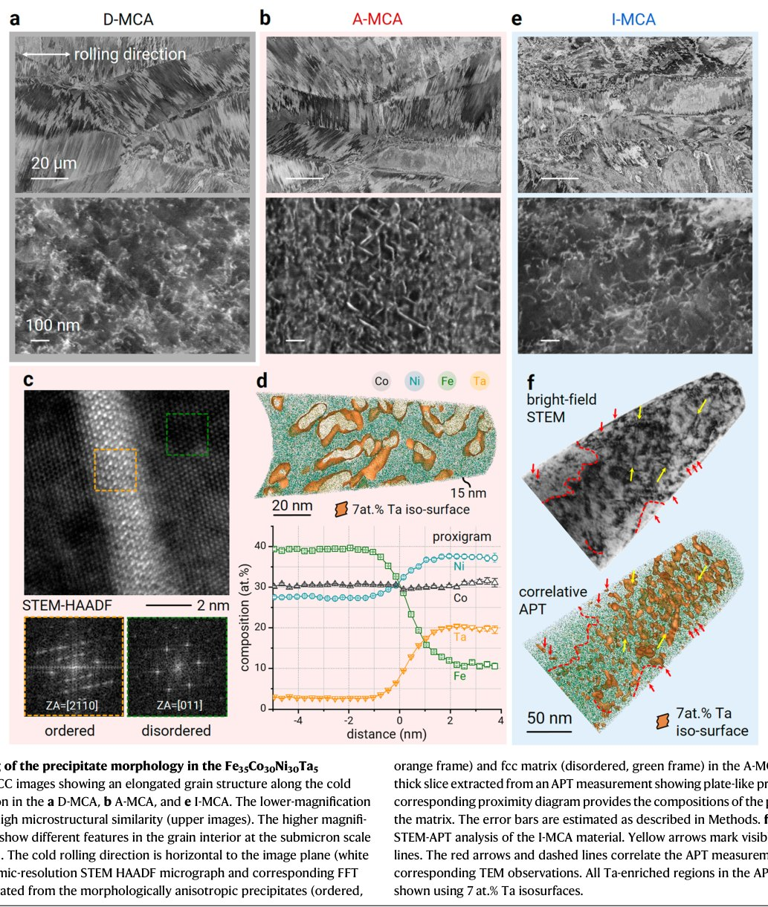
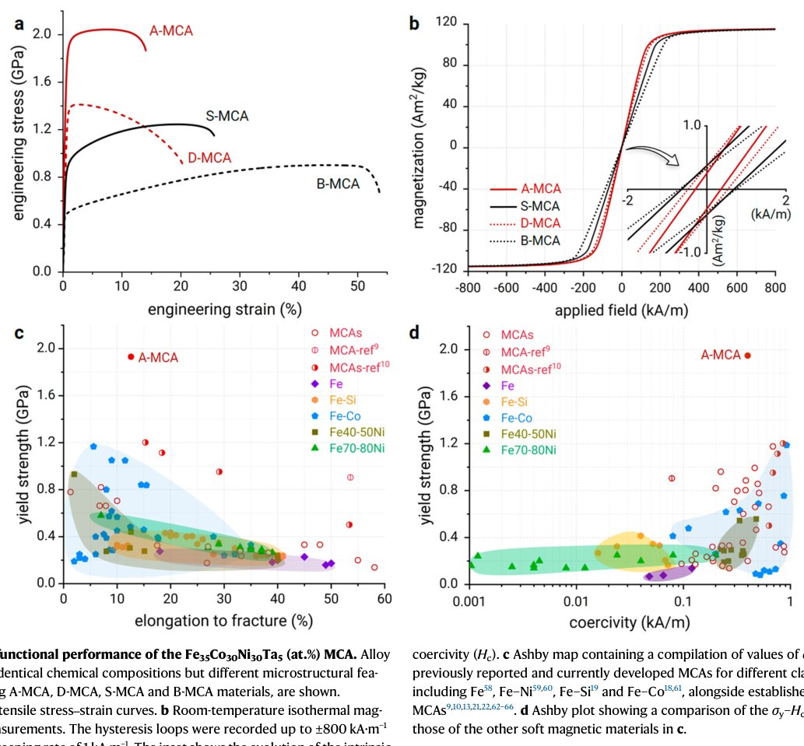
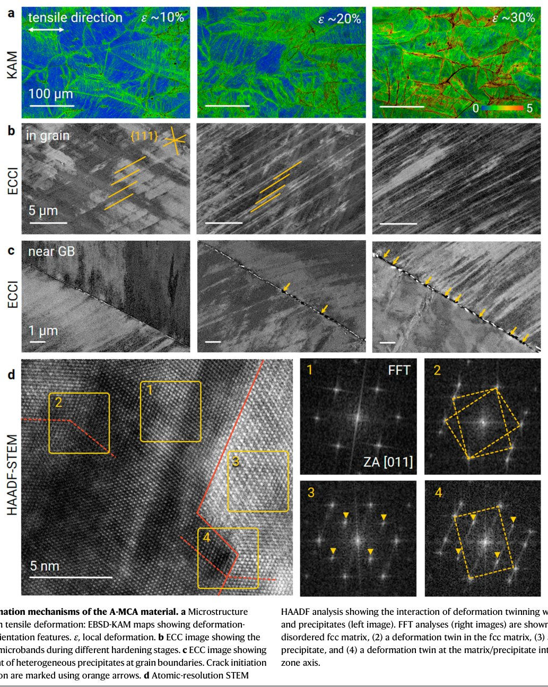
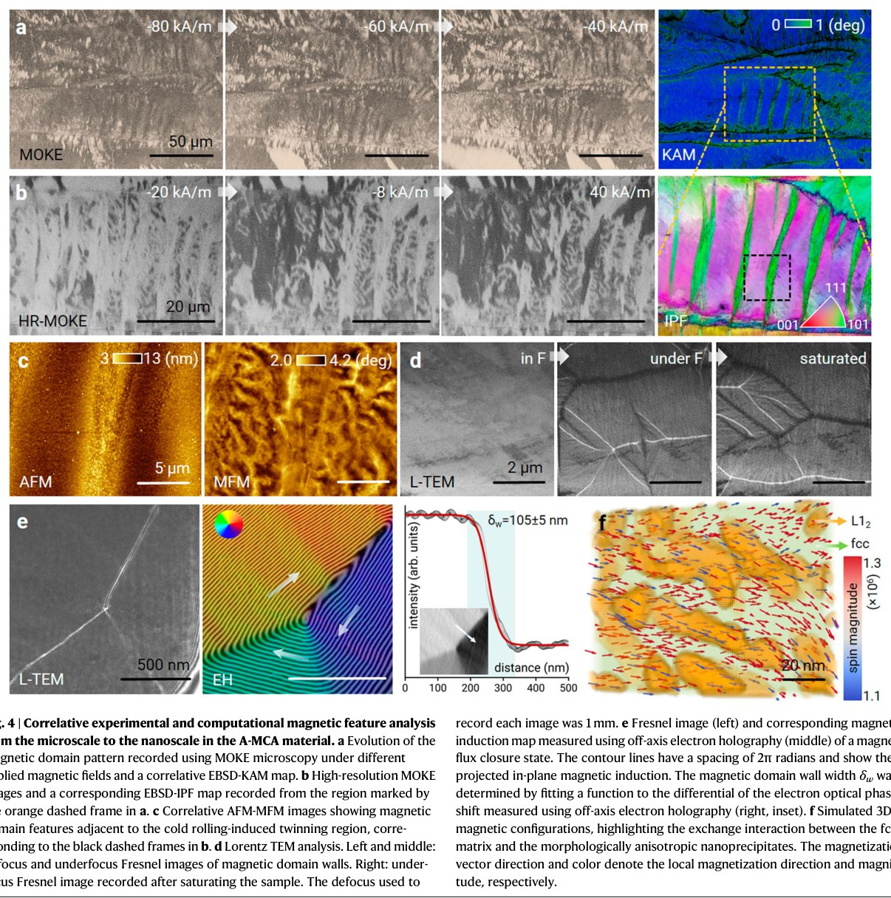
译文仅供学习参考，术语与数据以英文原文为准。已省略参考文献、方法与补充材料。
Nature Communications · 2025
利用热磁场对纳米片层磁体进行磁硬化与力学硬化Magnetic and mechanical hardening of nano-lamellar magnets using thermo-magnetic fields
本页为「摘要 + 正文（Results and discussion）」中文翻译；已省略 Methods（方法）、补充材料与参考文献。默认显示中文，可用右上角按钮切换「对照 / EN」。
摘要 / Abstract
High-performance magnetic materials based on rare-earth intermetallic compounds are critical for energy conversion technologies. However, the high cost and supply risks of rare-earth elements necessitate the development of affordable alternatives. Another challenge lies in the inherent brittleness of current magnets, which limits their applications for high dynamic mechanical loading conditions during service and complex shape design during manufacturing towards high efficiency and sustainability. Here, we propose a strategy to simultaneously enhance the magnetic and mechanical performance of a rare-earth-free multicomponent magnet. We achieve this by introducing nano-lamellar structures with high shape anisotropy into a cobalt–iron–nickel–aluminum material system through eutectoid decomposition under externally applied thermo-magnetic fields. Compared to the conventional thermally activated processing, the thermo-magnetic field accelerates phase decomposition kinetics, producing finer lamellae spacings and smaller eutectoid colonies. The well-tailored size, density, interface, and chemistry of the nano-lamellae enhance their pinning effect against the motion of both magnetic domain walls and dislocations, resulting in concurrent gains in coercivity and mechanical strength. Our work demonstrates a rational pathway to designing multifunctional rare-earth-free magnets for energy conversion devices such as high-speed motors and generators operating under harsh service conditions.
基于稀土金属间化合物的高性能磁性材料对能量转换技术至关重要。然而，稀土元素成本高、供应有风险，亟需开发经济的替代方案。另一个挑战在于现有磁体的固有脆性，这限制了它们在服役中承受高动态机械载荷、以及在制造中实现复杂形状设计以追求高效与可持续方面的应用。本文提出一种同时提升无稀土多组元磁体磁性能与力学性能的策略。我们在钴–铁–镍–铝材料体系中，通过在外加热磁场下进行共析分解，引入高形状各向异性的纳米片层结构。与传统的热激活工艺相比，热磁场加速了相分解动力学，产生更细的片层间距和更小的共析团（colony）。经精心调控的纳米片层——其尺寸、密度、界面和化学成分——增强了对磁畴壁和位错运动的钉扎作用，从而同时提升了矫顽力和力学强度。我们的工作展示了一条设计多功能无稀土磁体的合理路径，可用于在严酷服役条件下运行的高速电机和发电机等能量转换装置。
Magnetic materials are key components for the green energy transition due to their role in sustainable wind energy conversion, electro-mobility, automation, and robotics, and provide stable high torque in motor applications. They can be classified based on their coercivity and energy products into soft, semihard, and hard magnetic materials. The critical rare earth (RE) elements are generally required in magnetically hard materials to provide strong spin-orbit coupling for achieving high magnetocrystalline anisotropy, which is the basis for large magnetic hysteresis. Alternative methods for enhancing anisotropy include introducing microstructural features with high shape anisotropy, stress anisotropy, chemical anisotropy, and other ways to enhance magnetocrystalline anisotropy. In addition, extensive efforts have been made to mitigate the ever-increasing requirement for applications under harsh environments, including high temperature, corrosion, hydrogen embrittlement, and mechanical loading conditions for sustainable electrification.
磁性材料是绿色能源转型的关键部件，因其在可持续风能转换、电动出行、自动化和机器人中的作用，并在电机应用中提供稳定的高扭矩。依据矫顽力和磁能积，磁性材料可分为软磁、半硬磁和硬磁材料。硬磁材料通常需要关键稀土（RE）元素来提供强自旋–轨道耦合，以获得高磁晶各向异性，而后者是大磁滞的基础。增强各向异性的替代方法包括引入具有高形状各向异性、应力各向异性、化学各向异性的组织特征，以及其他增强磁晶各向异性的途径。此外，人们还投入大量努力，以满足在高温、腐蚀、氢脆和机械载荷等严酷环境下、面向可持续电气化不断增长的应用要求。
For example, hard magnets with good mechanical properties are required in advanced flywheel energy storage systems that target an ultra-fast rotating speed of over 50,000 revolutions per minute for high-efficiency and sustainable electrification. This is because the rotation generates high dynamic mechanical and cyclic stress, and almost all conventional hard magnets fail at such speeds, thus limiting the efficiency of the whole system. However, most commercial hard magnetic materials are based on intermetallic compounds and are thus inherently brittle, rendering them incapable of bearing plastic deformation during processing and service. Therefore, the strongest hard magnets—e.g., Nd–Fe–B and Sm–Co alloys—are generally synthesized by powder metallurgy, which consists of a series of energy- and time-consuming and health-risky steps (metal powder production, mixing, compacting and sintering), as compared to conventional casting and forging. Although near-net-shape manufacturing can reduce machining and material loss, high-performance magnetic materials made by adjustable processing that can fill the cost and performance gap of current systems are needed for efficient and sustainable electrification. Current manufacturing methods still face challenges in minimizing material waste and ensuring product quality, because magnet properties are highly dependent on microstructure, which in turn depends on the manufacturing process. The inherent brittleness of intermetallic compounds is prone to forming microcracks during rapid cooling, increasing the risk of fracture during machining—for instance, Sm–Co-based alloys have a machining failure of ~20% because of their low fracture toughness (1.9–2.9 MPa·m^1/2). This design challenge is characterized by the need for a multifunctional profile: high remanence and coercivity; good mechanical performance (high hardness, yield strength, ductility, damage tolerance); and good oxidation/corrosion resistance under harsh chemo-mechanical operating conditions.
例如，先进飞轮储能系统为追求高效与可持续电气化，目标转速超过每分钟 50,000 转，这就需要力学性能良好的硬磁体。因为高速旋转产生高动态机械应力和循环应力，几乎所有传统硬磁体在此转速下都会失效，从而限制整个系统的效率。然而，大多数商用硬磁材料基于金属间化合物，因而固有脆性，无法在加工和服役中承受塑性变形。因此，最强的硬磁体——如 Nd–Fe–B 和 Sm–Co 合金——通常采用粉末冶金制备，相较传统铸造和锻造，它包含一系列耗能、耗时且有健康风险的工序（金属粉末制备、混料、压制和烧结）。尽管近净成形制造能减少机加工和材料损耗，但为实现高效、可持续电气化，仍需要通过可调工艺制造、能填补现有体系成本与性能差距的高性能磁性材料。当前制造方法在最小化材料浪费和保证产品质量方面仍面临挑战，因为磁体性能高度依赖组织，而组织又依赖制造工艺。金属间化合物的固有脆性在快速冷却时易形成微裂纹，增大后续机加工中的断裂风险——例如 Sm–Co 基合金由于断裂韧性低（1.9–2.9 MPa·m^1/2），机加工失效率约达 20%。这一设计挑战的特征是需要多功能组合：高剩磁与高矫顽力；良好的力学性能（高硬度、屈服强度、塑性、损伤容限）；以及在严酷化学–机械工况下良好的抗氧化/耐腐蚀性。
To overcome these challenges, multicomponent alloys (MCAs), which provide a wide range of chemical compositions and microstructures and thus a certain potential for realizing multifunctionality, have been proposed. MCAs can reconcile different magnetic and mechanical features in one material because continuous chemical adjustment allows tuning within a continuous phase space into regimes where magnetic properties (Curie temperature, coercivity, saturation magnetization) and mechanical properties (hardness, yield strength) can be simultaneously enhanced. In addition, the option to chemically decorate and functionalize microstructural defects at different length scales (dislocations, interfaces, precipitates) can be exploited to pin the movement of magnetic domain walls during magnetization and demagnetization, leading to a larger magnetic hysteresis integral. The enhanced internal stress level from introducing defects also increases mechanical strength by impeding dislocation movement. We translated these mutually conflicting properties into a design strategy by triggering ferromagnetic nano-lamellae with high shape anisotropy via thermo-magnetic annealing. We selected a Co28.6Ni28.8Fe30.6Al12.0 (at.%) MCA system: the ferromagnetic 3d elements (Co, Ni, Fe) blended near-equiatomically form a high-symmetry fcc solid-solution matrix (enabling ductile plasticity and high spontaneous magnetization), while Al (large atom size, negative mixing enthalpy with Co/Ni/Fe) triggers precipitates that enhance coercivity and mechanical strength, enabling hierarchical precipitation reactions coupled with tunable magnetic properties.
为克服这些挑战，人们提出了多组元合金（MCA）——它提供宽广的化学成分和组织范围，因而具备实现多功能性的一定潜力。MCA 能在同一材料中调和不同的磁性与力学特征，因为连续的成分调节可在连续相空间内调控到某些区间，使磁性能（居里温度、矫顽力、饱和磁化强度）和力学性能（硬度、屈服强度）同时得到提升。此外，还可利用在不同尺度上对组织缺陷（位错、界面、析出相）进行化学修饰与功能化的可能性，在磁化和退磁过程中钉扎磁畴壁的移动，从而获得更大的磁滞积分。引入缺陷带来的内应力提升，也通过阻碍位错运动提高力学强度。我们将这些互相冲突的性能转化为一种设计策略：通过热磁退火触发高形状各向异性的铁磁性纳米片层。我们选取 Co28.6Ni28.8Fe30.6Al12.0（原子分数）MCA 体系：铁磁性 3d 元素（Co、Ni、Fe）以近等原子比混合，形成高对称的 fcc 固溶体基体（可提供韧性塑性和高自发磁化），而 Al（原子尺寸大、与 Co/Ni/Fe 有负混合焓）触发析出相，增强矫顽力和力学强度，从而实现与可调磁性能相耦合的分级析出反应。
合金设计与组织分析Alloy design and microstructure analysis
First, we performed thermodynamic simulations to identify a phase with high magnetization and high anisotropy in the Co28.6Ni28.8Fe30.6Al12.0 (at.%) system. The results (Supplementary Fig. 1) show a two-phase fcc + bcc regime from 923 to 1623 K; the fcc phase further decomposes via a eutectoid transformation below 923 K, with the potential to form a lamellar structure with high aspect ratio and shape anisotropy. We synthesized the material by vacuum induction melting and conducted a two-stage isothermal heat treatment: homogenization at 1473 K for 2 h to obtain ~85 vol.% fcc, then thermal annealing (TA) at 873 K targeting a eutectoid lamellar microstructure for both mechanical and magnetic hardening (the lamellae and their high interfacial density enhance pinning of both domain walls and dislocations). Considering the external field's effect on decomposition kinetics, variants were processed by thermo-magnetic annealing (TMA) under a 9 T field at 873 K for 1–10 h (Fig. 1a). The external field aligns all magnetic moments in the ferromagnetic phases during annealing, enabling tailoring of crystallinity, texture, and chemistry toward high magnetization, high interface density, small lamellae spacing, and small colony size.
首先，我们进行热力学模拟，以在 Co28.6Ni28.8Fe30.6Al12.0（原子分数）体系中确定一种兼具高磁化强度和高各向异性的相。结果（补充图 1）显示，在 923 至 1623 K 存在 fcc + bcc 两相区；fcc 相在 923 K 以下通过共析转变进一步分解，有望形成高长径比、高形状各向异性的片层结构。我们采用真空感应熔炼制备材料，并进行两阶段等温热处理：先在 1473 K 均匀化 2 h 获得约 85 vol.% 的 fcc，再在 873 K 进行热退火（TA），目标是获得可同时实现力学与磁硬化的共析片层组织（片层及其高界面密度增强对畴壁和位错的钉扎）。考虑外加磁场对分解动力学的影响，各变体在 9 T 磁场、873 K 下进行热磁退火（TMA）1–10 h（图 1a）。退火时外加磁场使铁磁相中所有磁矩取向一致，从而可将结晶度、织构和成分调控到高磁化强度、高界面密度、小片层间距和小团尺寸的方向。
Ex-situ EBSD and ECCI analyses reveal eutectoid decomposition during TMA (Fig. 1b, c). The decomposition area gradually increased with TMA time until the remaining fcc phase was fully consumed after 5 h. The decomposition kinetics under TA are slower than under TMA (6 h to fully consume the fcc phase), also indicated by the slower migration of the decomposition interface. In-situ STEM at 873 K (Fig. 1d) with HAADF imaging revealed the formation and growth of nano-lamellae during TA. Figure 2a shows typical hysteresis loops for different treatments; the evolution of intrinsic coercivity (Hc) and saturation magnetization (Ms) with annealing time is in Fig. 2b. After 5 h of TMA (TMA5), Hc increased nearly 40-fold (~3930%) versus the homogenized H-MCA—from 0.7 to 27.5 kA·m⁻¹—which is twice the highest reported Hc (12.7 kA·m⁻¹) in the Co–Fe–Ni–Al system. Ms increased from 110.5 (H-MCA) to 123.8 Am²·kg⁻¹ (TMA5) then decreased to 118.4 (TMA10). TA-processed magnets follow similar trends but with lower peak Hc/Ms reached later (19.9 kA·m⁻¹ and 120.2 Am²·kg⁻¹ after 6 h).
离位 EBSD 和 ECCI 分析揭示了 TMA 过程中的共析分解（图 1b、c）。分解区域随 TMA 时间逐渐扩大，直至 5 h 后剩余 fcc 相被完全消耗。TA 下的分解动力学比 TMA 慢（需 6 h 才能完全消耗 fcc 相），分解界面迁移较慢也印证了这一点。873 K 下的原位 STEM（图 1d）配合 HAADF 成像，揭示了 TA 过程中纳米片层的形成与长大。图 2a 给出不同处理的典型磁滞回线；本征矫顽力（Hc）和饱和磁化强度（Ms）随退火时间的演化见图 2b。经 5 h TMA（TMA5）后，Hc 相比均匀化态 H-MCA 提高近 40 倍（约 3930%）——从 0.7 升至 27.5 kA·m⁻¹——是 Co–Fe–Ni–Al 体系已报道最高 Hc（12.7 kA·m⁻¹）的两倍。Ms 从 110.5（H-MCA）升至 123.8 Am²·kg⁻¹（TMA5），随后降至 118.4（TMA10）。TA 处理的磁体呈相似趋势，但峰值 Hc/Ms 较低且到达更晚（6 h 后为 19.9 kA·m⁻¹ 和 120.2 Am²·kg⁻¹）。
An Ashby-type plot (Fig. 2c) comparing Ms vs. Hc with commercial magnets shows that introducing and tailoring nano-lamellae by TMA tunes the Co–Fe–Ni–Al MCAs from a soft (H-MCA) to a semihard (TMA5) magnetic state while increasing Ms. The TMA5 magnet's high Hc outperforms all Fe–Co–Ni alloys studied thus far and is comparable to Fe–Co–V–Cr alloys, which have a lower fraction of the critical elements Co and Ni and thus lower cost—yet Fe–Co–V–Cr alloys generally contain 49–54 wt.% Co (Hc ~28 kA/m) whereas TMA5 contains only ~32 wt.% Co with comparable Hc, and TMA5's Ms (123.8 Am²·kg⁻¹) is much higher than that of Fe–Co–V–Cr alloys (<100 Am²·kg⁻¹). To understand the good combination of high Hc and Ms in TMA5, we studied its microstructure and chemistry from the microscale to the near-atomic scale (Fig. 3). High-resolution ECC imaging and transmission Kikuchi diffraction show the decomposition region consists of fine eutectoid colonies with an average size of 4.5 ± 3.4 μm. HAADF-STEM (Fig. 3a) shows alternating dark and bright lamellae with average spacings of 64.7 ± 22.9 nm and 182.2 ± 14.6 nm ("fine" and "coarse" layers); network structures with much finer widths (9.1 ± 2.3 nm) are distributed in the coarse layer.
将 Ms 与 Hc 同商用磁体对比的 Ashby 型图（图 2c）显示，通过 TMA 引入并调控纳米片层，可将 Co–Fe–Ni–Al MCA 从软磁态（H-MCA）调控到半硬磁态（TMA5），同时提升 Ms。TMA5 磁体的高 Hc 超过迄今研究的所有 Fe–Co–Ni 合金，并与 Fe–Co–V–Cr 合金相当——后者关键元素 Co、Ni 含量更低、成本更低；然而 Fe–Co–V–Cr 合金通常含 49–54 wt.% Co（Hc 约 28 kA/m），而 TMA5 仅含约 32 wt.% Co 却有相当的 Hc，且 TMA5 的 Ms（123.8 Am²·kg⁻¹）远高于 Fe–Co–V–Cr 合金（<100 Am²·kg⁻¹）。为理解 TMA5 中高 Hc 与高 Ms 的良好组合，我们从微观尺度到近原子尺度研究了其组织与化学（图 3）。高分辨 ECC 成像和透射菊池衍射显示，分解区由细小的共析团组成，平均尺寸 4.5 ± 3.4 μm。HAADF-STEM（图 3a）显示交替的暗、亮片层，平均间距分别为 64.7 ± 22.9 nm 和 182.2 ± 14.6 nm（即"细"层与"粗"层）；粗层中还分布着宽度更细（9.1 ± 2.3 nm）的网状结构。
Atomically resolved HAADF-STEM and FFT patterns identify both the network structure and the surrounding coarse layer as ordered B2 structures (Fig. 3b); the fine layer is a disordered fcc structure with a uniform distribution of coherently ordered L12 (Fig. 3c). The hierarchical structure from solid-state decomposition results from competition between severe lattice distortion and chemical ordering tendencies. APT (Fig. 3d–g) reveals the near-atomic chemistry: the network/coarse B2 layer is enriched in Ni and Al, while Fe and Co partition into the coarse layer (Co47.2Fe43.6Ni4.6Al4.5, at.%). The fcc and L12 phases were determined to be Ni33.0Co31.9Fe28.8Al6.3 and Ni65.7Al20.0Co7.3Fe7.0 (at.%), respectively.
原子分辨 HAADF-STEM 与 FFT 花样将网状结构及其周围的粗层都判定为有序 B2 结构（图 3b）；细层则为无序 fcc 结构，其中均匀分布着共格有序的 L12（图 3c）。这种由固态分解形成的分级结构，源自严重晶格畸变与化学有序化倾向之间的竞争。APT（图 3d–g）揭示了近原子尺度的化学：网状/粗层 B2 富集 Ni 和 Al，而 Fe、Co 分配进入粗层（Co47.2Fe43.6Ni4.6Al4.5，原子分数）。fcc 相与 L12 相的成分分别确定为 Ni33.0Co31.9Fe28.8Al6.3 和 Ni65.7Al20.0Co7.3Fe7.0（原子分数）。
磁结构表征Magnetic structure characterization
We used MOKE microscopy to characterize the interaction between magnetic domains and nano-lamellae during magnetization/demagnetization (Fig. 4a). Magnetizing from a demagnetized state to 300 mT and then to −200 mT revealed two domain sizes: coarse domains (average width 3.6 ± 1.5 μm) nucleate and grow inside the micron-sized bcc phase (formed during homogenization, ~15 vol.%), while fine domains, uniformly distributed in the eutectoid region, have widths below optical resolution. Domains grow unaffected in the bcc phase but are impeded at phase boundaries. Correlative MFM–AFM (Fig. 4b, c) shows a maze pattern in the bcc phase (anisotropy perpendicular to the surface) and strong magnetic contrast between fine (bright) and coarse (dark) layers; AFM confirms a smooth surface (max height difference 9 nm), so the distinctive domain patterns arise mainly from the difference in magnetization between alternating layers. Lorentz TEM at remanence (Fig. 4d, e) outlines domain walls; extrapolating defocus series gives an average domain wall width in the bcc phase of 43 ± 6 nm (typical for soft magnets), while the enlarged MFM image shows the alternating eutectoid layers act as pinning sites against domain wall motion.
我们用 MOKE 显微术表征磁化/退磁过程中磁畴与纳米片层的相互作用（图 4a）。从退磁态磁化到 300 mT 再到 −200 mT，观察到两种畴尺寸：粗畴（平均宽度 3.6 ± 1.5 μm）在微米级 bcc 相内部形核并长大（该相在均匀化时形成，约 15 vol.%），而在共析区均匀分布的细畴宽度低于光学分辨率。磁畴在 bcc 相内不受阻碍地长大，但在相界处受阻。相关性 MFM–AFM（图 4b、c）显示 bcc 相中呈迷宫状图案（各向异性垂直于样品表面），细层（亮）与粗层（暗）之间磁衬度强烈；AFM 证实表面平整（最大高差 9 nm），因此这些独特的畴图案主要源自交替层之间磁化强度的差异。剩磁态下的洛伦兹 TEM（图 4d、e）勾勒出畴壁；对离焦系列外推得到 bcc 相中平均畴壁宽度为 43 ± 6 nm（软磁材料的典型值），而放大的 MFM 图像显示交替的共析层充当了阻碍畴壁运动的钉扎位点。
Since coercivity is an extrinsic property largely determined by domain-wall/microstructure interactions, it strongly depends on the distribution of lattice defects and their pinning. The significant Hc increase of TMA5 during TMA is mainly attributed to strong pinning by the introduced defects—specifically eutectoid colonies with a small average size (4.5 ± 3.4 μm) and nano-lamellae with a fine spacing (123.5 ± 18.7 nm). The Hc increase until completion of eutectoid decomposition (5 h for TMA) correlates with the gradually increasing volume fraction of nano-lamellae and their interfacial density. Further annealing decreases coercivity due to coarsening of colony size and lamellae spacing (12.9 ± 10.1 μm and 192.6 ± 36.6 nm for TMA10), driven by a decrease in total interface energy. Future work could target variants with enhanced magnetic performance while preserving mechanical performance and lowering cost, by tailoring the chemistry, dimension, interlamellar spacing, and number density of the nano-lamellae—e.g., increasing pre-existing heterogeneous nucleation sites (grain boundaries, dislocations) via additive manufacturing to refine colony size and spacing, or promoting stronger grain texture and well-aligned lamellae via thermo-mechanical treatment (plastic forming, cold drawing, directional solidification) for enhanced remanence.
由于矫顽力是外禀性质，主要由畴壁与组织的相互作用决定，它强烈依赖于晶格缺陷的分布及其钉扎作用。TMA5 在 TMA 过程中 Hc 的显著增大，主要归因于所引入缺陷的强钉扎——具体为平均尺寸小的共析团（4.5 ± 3.4 μm）和片层间距细的纳米片层（123.5 ± 18.7 nm）。直到共析分解完成（TMA 为 5 h）之前 Hc 的增大，与纳米片层体积分数及其界面密度的逐渐增加相关。进一步退火则因团尺寸和片层间距的粗化（TMA10 为 12.9 ± 10.1 μm 和 192.6 ± 36.6 nm）而使矫顽力下降，其驱动力为总界面能的降低。未来工作可致力于在保持力学性能、降低成本的同时提升磁性能的变体——通过调控纳米片层的化学成分、尺寸、层间距和数量密度实现，例如借助增材制造增加预存的非均匀形核位点（晶界、位错）以细化团尺寸和间距，或通过热机械处理（塑性成形、冷拔、定向凝固）促进更强的晶粒织构和取向良好的片层以提升剩磁。
We studied the intrinsic magnetic properties by in-situ magnetization–temperature measurements. On heating from 300 to 1000 K at 20 K/min, the magnetization of H-MCA drops sharply to only 3.5% of its room-temperature value at 750 K, whereas TMA5 retains 37.5% at 1000 K. Slope analysis indicates H-MCA contains a ferromagnetic phase with Tc = 688 K, while TMA5 contains two ferromagnetic phases with higher Curie temperatures (Ni33.0Co31.9Fe28.8Al6.3, Tc ~ 740 K; Co47.2Fe43.6Ni4.6Al4.5, Tc > 1000 K). By casting these phases into individual ingots using APT-derived nominal compositions, we found that the enhanced Ms of TMA5 is mainly due to a ferromagnetic Co–Fe-enriched B2 phase with high magnetization (total magnetic moment 4.06 μB/f.u. by DFT), compared with the fcc phase in H-MCA before annealing (1.40 μB/f.u.).
我们通过原位磁化–温度测量研究本征磁性能。以 20 K/min 从 300 K 升温到 1000 K 时，H-MCA 的磁化强度在 750 K 急剧下降到仅为室温值的 3.5%，而 TMA5 在 1000 K 仍保留 37.5%。斜率分析表明，H-MCA 含有一个 Tc = 688 K 的铁磁相，而 TMA5 含有两个居里温度更高的铁磁相（Ni33.0Co31.9Fe28.8Al6.3，Tc 约 740 K；Co47.2Fe43.6Ni4.6Al4.5，Tc > 1000 K）。通过用 APT 得到的名义成分将这些相铸成单独的铸锭，我们发现 TMA5 增强的 Ms 主要源自一个高磁化的铁磁性、富 Co–Fe 的 B2 相（DFT 计算总磁矩 4.06 μB/f.u.），相比之下退火前 H-MCA 中的 fcc 相仅为 1.40 μB/f.u.。
力学性能Mechanical performance
We applied high-throughput nanoindentation to statistically analyze the hardness of the material after 3 h of TMA (TMA3), whose microstructures comprise micron-sized bcc, non-decomposed coarse-grained fcc, and eutectoid nano-lamellae. An array of 150 × 150 indents over 120 × 120 μm (100 nm depth, 800 nm spacing) was made at room temperature. An EBSD phase map (Fig. 5a) identified fcc and bcc; ECCI (Fig. 5b) contained 22,500 indents, each assigned to its microstructure (nano-lamellae treated as one phase; indents across microstructures termed "overlapping"). The reconstructed array (Fig. 5d) and hardness map (Fig. 5e) match the EBSD/ECCI results. Hardness–modulus analysis (Fig. 5f) revealed four clusters; the nano-lamellae and micron-sized bcc are much harder/stiffer than the undecomposed coarse-grain fcc. Median hardness values are 9.27 (nano-lamellae), 9.52 (micron bcc), and 6.06 GPa (coarse fcc); the overlapping region scatters from ~3 to 12 GPa. The high measured hardness reflects the indentation size effect (depth <100 nm); deeper indents (200 mN) still gave high hardness for the major phases, with dense <110>fcc slip lines forming in the coarse-grained fcc around the indents that stopped at fcc/bcc or fcc/nano-lamellae boundaries. Compressive tests show H-MCA and TA-5h can be plastically compressed up to 50%; the TA-5h alloy with eutectoid lamellae shows enhanced yield strength and strain hardening versus H-MCA, indicating that introducing nano-lamellae via eutectoid decomposition significantly hardens the magnetic material.
我们采用高通量纳米压痕，对经 3 h TMA（TMA3）后材料的硬度进行统计分析，其组织包含微米级 bcc、未分解的粗晶 fcc 以及共析纳米片层。在室温下于 120 × 120 μm 区域内做了 150 × 150 阵列压痕（深 100 nm、间距 800 nm）。EBSD 相图（图 5a）识别出 fcc 和 bcc；ECCI（图 5b）含 22,500 个压痕，每个压痕都归属到相应组织（纳米片层视为一相；跨组织的压痕称为"重叠"区）。重构阵列（图 5d）和硬度图（图 5e）与 EBSD/ECCI 结果吻合。硬度–模量分析（图 5f）揭示出四个聚类；纳米片层和微米级 bcc 远比未分解的粗晶 fcc 更硬、更刚。中位硬度分别为 9.27（纳米片层）、9.52（微米 bcc）和 6.06 GPa（粗晶 fcc）；重叠区在约 3 到 12 GPa 之间散布。所测得的高硬度反映了压痕尺寸效应（深度 <100 nm）；更深的压痕（200 mN）下主要相仍给出高硬度，压痕周围的粗晶 fcc 中形成了密集的 <110>fcc 滑移线，并终止于 fcc/bcc 或 fcc/纳米片层界面处。压缩试验表明 H-MCA 和 TA-5h 均可塑性压缩至 50%；含共析片层的 TA-5h 合金相比 H-MCA 表现出更高的屈服强度和应变硬化，说明通过共析分解引入纳米片层能显著硬化磁性材料。
These results show that introducing high-shape-anisotropy nano-lamellae via eutectoid decomposition also mechanically hardens the material. Nano-lamellae are unusual features of advanced magnets but provide an important additional benefit for mechanically loaded applications. Their size, density, interface, and chemistry—tailored by an external thermo-magnetic field—must be carefully controlled to increase structural defects to a level that enhances pinning of both magnetic domain walls and dislocations, while avoiding mechanical weakness and strain localization that would prevent the material from bearing plastic deformation during processing and use.
这些结果表明，通过共析分解引入高形状各向异性的纳米片层，同时也能对材料进行力学硬化。纳米片层是先进磁体中不常见的特征，但为承受机械载荷的应用提供了重要的额外益处。它们由外加热磁场调控的尺寸、密度、界面和化学成分必须精心控制，把结构缺陷增加到能增强对磁畴壁和位错双重钉扎的水平，同时避免造成力学薄弱和应变局部化，以免材料在加工和使用中无法承受塑性变形。
小结Summary
In summary, we developed a multicomponent magnet with magnetic properties (coercivity ~27.5 kA·m⁻¹, saturation magnetization ~123.8 Am²·kg⁻¹) matching those of commercial rare-earth-free hard magnets (e.g., Fe–Co–V–Cr alloys) and good mechanical performance in terms of high hardness. We realized this in a Co–Fe–Ni–Al system by introducing ferromagnetic nano-lamellae with high shape anisotropy via eutectoid decomposition under an external thermo-magnetic field. The additional field significantly accelerates decomposition kinetics and increases the effective pinning strength by reducing colony size and lamellae spacing. The nano-lamellae, with high average total magnetic moments, enhance saturation magnetization and act as barriers against the motion of both magnetic domain walls and dislocations, thus simultaneously enhancing coercivity and mechanical hardness. This strategy lays the groundwork for mechanically strong, magnetically hard multicomponent magnets for harsh service conditions, and is applicable to other magnetic families where external energy fields or pre-existing defects can modify microstructure for better multifunctionality. Future efforts could target higher coercivity and remanence while preserving mechanical properties and reducing dependence on critical elements for lower cost; secondary synthesis using scraps or waste with higher impurity content but lower cost could also serve as raw materials, with the impurity effects worth further investigation.
综上所述，我们研制出一种多组元磁体，其磁性能（矫顽力约 27.5 kA·m⁻¹，饱和磁化强度约 123.8 Am²·kg⁻¹）可与商用无稀土硬磁体（如 Fe–Co–V–Cr 合金）媲美，并在高硬度方面具有良好力学性能。我们在 Co–Fe–Ni–Al 体系中，通过外加热磁场下的共析分解引入高形状各向异性的铁磁性纳米片层实现了这一目标。附加磁场显著加速分解动力学，并通过减小团尺寸和片层间距提高有效钉扎强度。具有高平均总磁矩的纳米片层既提升饱和磁化强度，又充当阻碍磁畴壁和位错运动的障碍，从而同时增强矫顽力和力学硬度。该策略为开发面向严酷服役条件、力学强且磁性硬的多组元磁体奠定了基础，并可推广到其他磁体族——只要外加能量场或预存缺陷能修饰组织以获得更好的多功能性。未来工作可在保持力学性能、降低对关键元素依赖以降低成本的同时，追求更高的矫顽力和剩磁；采用杂质含量较高但成本更低的废料进行二次合成也可作为原料，其杂质影响值得进一步研究。
图表（来自原文）Figures from the original paper
下列为原文插图（含英文图注），供对照阅读。
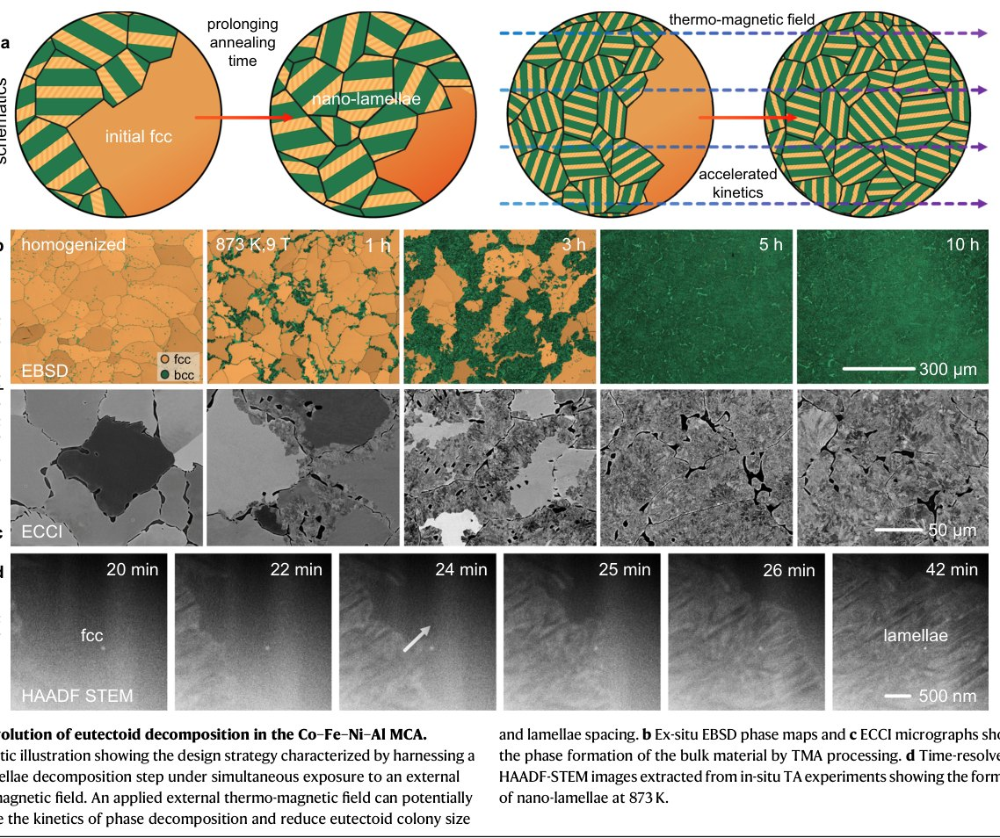
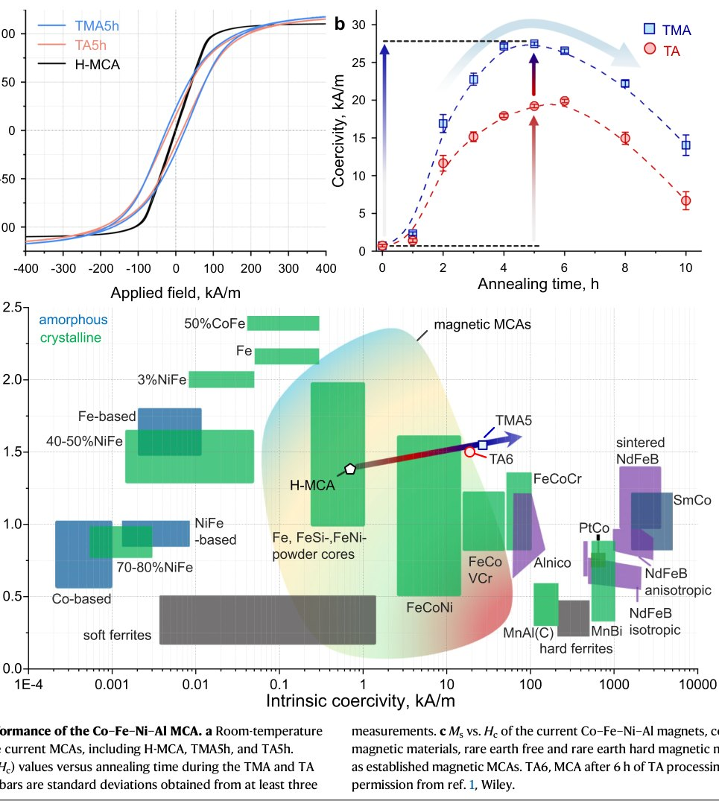
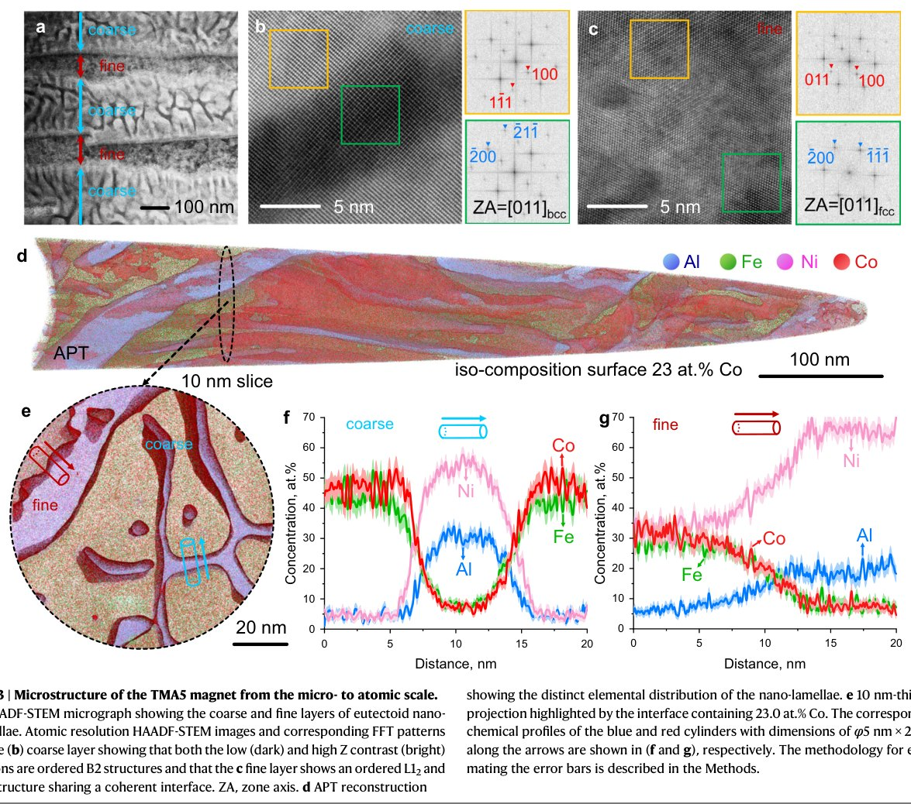
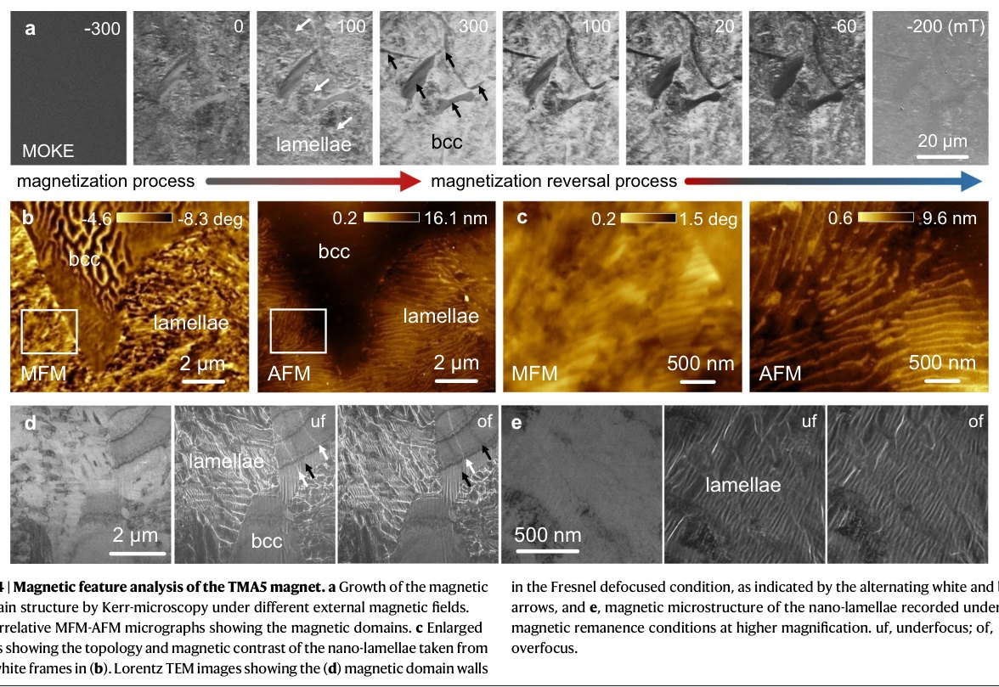
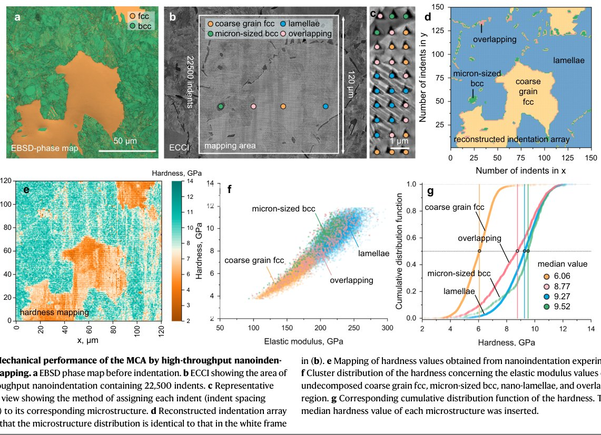
译文仅供学习参考，术语与数据以英文原文为准。已省略参考文献、方法与补充材料。
Acta Materialia · 2024
开发含共格体心立方纳米析出相的新型高温软磁 B2 基多主元合金Developing novel high-temperature soft-magnetic B2-based multi-principal-element alloys with coherent body-centered-cubic nanoprecipitates
本页为「摘要 + 正文」中文翻译（含引言、实验、结果、讨论、结论各节，部分段落合并精炼但保留全部关键数据）；已省略参考文献与致谢。默认显示中文，可用右上角按钮切换「对照 / EN」。
摘要 / Abstract
Multi-principal-element alloys (MPEAs) have attracted considerable attention due to their enhanced possibilities of obtaining superior properties by tailoring chemical compositions in an enormous space. This work developed a series of novel soft-magnetic MPEAs via the cluster formula approach of Al3(Co,Fe,Cr)14. Through deliberately manipulating their microstructures, ultrafine ferromagnetic body-centered-cubic (BCC) nanoparticles (3 ~ 8 nm in diameter) are coherently precipitated in a B2 matrix. These alloys exhibit a high saturation magnetization of 107.4 ~ 167.5 Am²/kg and a low coercivity of 143 ~ 303 A/m in the as-homogenized and aged states. Even after aging for 480 h at 873 ~ 1073 K, the prominent soft-magnetic properties can still be retained, which can be ascribed to the excellent stability of the coherent BCC/B2 microstructure. Importantly, these materials also show excellent soft-magnetic properties at high temperatures. The Al3Co7Fe7 alloy exhibits a saturation magnetization of 134.7 Am²/kg and a coercivity of 167.2 A/m at 973 K. Moreover, they have high Curie temperatures (1254 K for Al3Co7Fe7 and 1052 K for Al3Co6Fe6Cr2) and electrical resistivity (262 ~ 285 μΩ·cm). The outstanding high-temperature magnetic properties of the presently developed alloys is discussed in light of the microstructural stability and evolution with chemical composition and temperature, and the coercivity is found to be closely related to the particle size of BCC nanoprecipitates. With the advantages of the currently developed BCC/B2 MPEAs over conventional soft-magnetic alloys, the coherent precipitation approach opens a new way to design novel high-temperature soft-magnetic materials.
多主元合金（MPEA）因其可在巨大的成分空间中通过调控化学成分来获得优异性能，而受到广泛关注。本工作通过团簇式（cluster formula）方法 Al3(Co,Fe,Cr)14 开发了一系列新型软磁多主元合金。通过有意调控其组织，在 B2 基体中共格析出了超细的铁磁性体心立方（BCC）纳米颗粒（直径 3~8 nm）。在均匀化态和时效态下，这些合金表现出高饱和磁化强度（107.4~167.5 Am²/kg）和低矫顽力（143~303 A/m）。即使在 873~1073 K 时效 480 h 后，仍能保持突出的软磁性能，这归因于共格 BCC/B2 组织的优异稳定性。重要的是，这些材料在高温下也表现出优异的软磁性能。Al3Co7Fe7 合金在 973 K 时饱和磁化强度为 134.7 Am²/kg、矫顽力为 167.2 A/m。此外，它们具有高居里温度（Al3Co7Fe7 为 1254 K，Al3Co6Fe6Cr2 为 1052 K）和高电阻率（262~285 μΩ·cm）。本文结合组织随化学成分和温度的稳定性与演化，讨论了所开发合金优异的高温磁性能，并发现矫顽力与 BCC 纳米析出相的颗粒尺寸密切相关。凭借所开发的 BCC/B2 多主元合金相对传统软磁合金的优势，这种共格析出方法为设计新型高温软磁材料开辟了新途径。
1. 引言1. Introduction
Soft-magnetic materials with high saturation magnetization (or saturation induction intension) and permeability as well as low coercivity have been widely applied in power generation, electronic, and aerospace fields. Commercial soft-magnetic alloys, such as Fe–(3~4.5)Si and Fe–(30~50)Co (wt.%) alloys, are prevalent among industries due to their high saturation magnetization (Bs = 1.9 ~ 2.4 T) and low coercivity (Hc < 150 A/m). Nevertheless, their low electrical resistivity (ρ < 50 μΩ·cm) leads to a high eddy current loss, limiting their applications in high-frequency fields. Fe- and Co-based amorphous/nanocrystalline alloys have high electrical resistivity of 100 ~ 150 μΩ·cm due to their random atomic packing in a long range. Meanwhile, this kind of alloys possess high Bs (1.2 ~ 2.0 T) and low Hc (< 10 A/m), which is ascribed mainly to the uniform distribution of ultrafine ferromagnetic body-centered-cubic (BCC) nanoprecipitates (less than 20 nm) in the amorphous matrix, as exemplified by the Fe-based Finemet Fe73.5Si13.5Nb3B9Cu1 alloy. However, the metastable nature of the amorphous matrix limits their high-temperature applications to below 573 K (Curie temperature Tc ~ 850 K). The partial substitution of Co for Fe can increase the Bs, Hc, and Tc, as evidenced by the Hitperm Fe44Co44Zr7B4Cu1 (Bs = 2.0 T, Hc = 160 A/m, Tc = 1253 K). Moreover, this series of alloys have the largest resistivity (ρ ~ 150 μΩ·cm) among all existing conventional soft-magnetic alloys.
具有高饱和磁化强度（或饱和磁感应强度）和高磁导率、以及低矫顽力的软磁材料，已广泛应用于发电、电子和航空航天领域。商用软磁合金，如 Fe–(3~4.5)Si 和 Fe–(30~50)Co（wt.%）合金，因其高饱和磁化强度（Bs = 1.9~2.4 T）和低矫顽力（Hc < 150 A/m）而在工业界广泛使用。然而，它们较低的电阻率（ρ < 50 μΩ·cm）导致高涡流损耗，限制了在高频领域的应用。Fe 基和 Co 基非晶/纳米晶合金因其长程随机原子堆积而具有 100~150 μΩ·cm 的高电阻率。同时，这类合金还具有高 Bs（1.2~2.0 T）和低 Hc（< 10 A/m），这主要归因于非晶基体中均匀分布的超细铁磁性体心立方（BCC）纳米析出相（小于 20 nm），以 Fe 基 Finemet 合金 Fe73.5Si13.5Nb3B9Cu1 为代表。然而，非晶基体的亚稳性质将其高温应用限制在 573 K 以下（居里温度 Tc ~ 850 K）。以 Co 部分替代 Fe 可提高 Bs、Hc 和 Tc，Hitperm 合金 Fe44Co44Zr7B4Cu1 即为例证（Bs = 2.0 T，Hc = 160 A/m，Tc = 1253 K）。此外，这一系列合金在所有现有传统软磁合金中电阻率最大（ρ ~ 150 μΩ·cm）。
Similarly, multi-principal-element alloys (MPEAs), also known as high- and medium-entropy alloys (H/MEAs), possess high electrical resistivity due to the long-range disordered occupations of atoms on lattice sites. The high-entropy alloying strategy has attracted much attention since it can endow MPEAs with both prominent mechanical and functional properties, including corrosion/oxidation resistance, irradiation resistance, magnetic properties, electromagnetic wave-absorption, and thermoelectric properties. For instance, the Co27.7Fe32.6Ni27.7Ta5.0Al7.0 (at.%) MPEA possesses fascinating mechanical and soft-magnetic properties (a tensile yield strength of 904 MPa, saturation magnetization of 100 Am²/kg, coercivity of 78 A/m, electronic resistivity of 103 μΩ·cm, and Curie temperature of 694 K), which were ascribed to the special microstructure composed of the ferromagnetic face-centered-cubic (FCC) matrix and paramagnetic coherent L12 nanoprecipitates. It is noted that any crystalline defects (grain boundaries, phase boundaries, dislocations, solute elements, etc.) to strengthen alloys would impede the movement of magnetic domains through pinning the domain walls, leading to an increase in coercivity. For instance, the coercivity of the Co27.7Fe32.6Ni27.7Ta5.0Al7.0 alloy is strongly dependent on the particle size of coherent precipitates. As the average particle size increases from 24 to 91 nm, the coercivity decreases from 763 to 78 A/m, because the coherent stress characterized by the specific surface area and lattice misfit between the matrix and nanoprecipitates with a small particle size is higher than that with a medium particle size. If the particle size of nanoprecipitates is comparable to or slightly larger than the magnetic domain width, the coercivity might increase drastically and the soft-magnetic feature would disappear.
类似地，多主元合金（MPEA，也称高熵与中熵合金 H/MEA）因原子在晶格位置上的长程无序占据而具有高电阻率。高熵合金化策略之所以备受关注，是因为它能赋予 MPEA 兼具突出的力学与功能性能，包括耐腐蚀/抗氧化、抗辐照、磁性、电磁波吸收和热电性能。例如，Co27.7Fe32.6Ni27.7Ta5.0Al7.0（原子分数）MPEA 兼具引人瞩目的力学与软磁性能（拉伸屈服强度 904 MPa、饱和磁化强度 100 Am²/kg、矫顽力 78 A/m、电阻率 103 μΩ·cm、居里温度 694 K），这归因于由铁磁性面心立方（FCC）基体和顺磁性共格 L12 纳米析出相组成的特殊组织。值得注意的是，任何用于强化合金的晶体缺陷（晶界、相界、位错、溶质元素等）都会通过钉扎畴壁而阻碍磁畴运动，导致矫顽力增大。例如，Co27.7Fe32.6Ni27.7Ta5.0Al7.0 合金的矫顽力强烈依赖于共格析出相的颗粒尺寸：随平均颗粒尺寸从 24 增大到 91 nm，矫顽力从 763 降至 78 A/m，这是因为小颗粒尺寸时由比表面积和基体/纳米析出相晶格错配表征的共格应力高于中等颗粒尺寸时的情形。若纳米析出相的颗粒尺寸与磁畴宽度相当或略大，矫顽力可能急剧增大，软磁特性随之消失。
Extensive reports have demonstrated that the saturation magnetization is dependent on the concentration of ferromagnetic elements (Fe, Co, and Ni), while the coercivity and electrical resistivity are primarily controlled by the microstructure, including the phase constitution and morphology. In particular, the coercivity, as the fundamental parameter for soft magnetism, is closely related to the size of ferromagnetic precipitates in nanocrystalline alloys or the grain size in conventional polycrystalline alloys. MPEAs open a new avenue to design novel soft-magnetic alloys. For instance, the FCC-FeCoNi alloy exhibits an extremely-high saturation magnetization of 155.7 Am²/kg and low coercivity of 189 A/m, but further alloying with Al and Mn would deteriorate the soft-magnetic properties, as evidenced by the BCC/B2 FeCoNiMnAl alloy (Ms = 132.2 Am²/kg and Hc = 266 A/m) and the dual-phase FeCoNiMn0.5Al0.5 alloy with an FCC + BCC/B2 structure (Ms = 51.9 Am²/kg and Hc = 730 A/m). Recently, we developed a soft-magnetic Al1.5Co4Fe2Cr alloy via the cluster-formula approach with the formula of Al2(Mn14) (M14 = Co8Fe4Cr2), which exhibits a saturation magnetization of 135.3 Am²/kg, coercivity of 244 A/m, Curie temperature of 1061 K, and electrical resistivity of 244 μΩ·cm. The outstanding soft-magnetic properties are ascribed to its unique coherent microstructure with ultrafine, spherical, and ferromagnetic BCC nanoprecipitates with a size of 3 ~ 7 nm uniformly distributed in a B2 matrix. However, when the BCC/B2 coherent microstructure was reversed, i.e., large-sized cuboidal B2 nanoparticles (~100 nm) in the BCC matrix in an Al0.7NiCoFeCr2 alloy designed with the cluster formula of Al2Ni14, the soft-magnetic properties deteriorate seriously (Ms = 28.9 Am²/kg and Hc = 947 A/m). When a weave-like BCC/B2 microstructure appears in an Al0.5NiCoFeCr (Al2M14) alloy, the soft-magnetic feature almost vanishes due to the extremely high coercivity (4035 A/m) and extremely-low saturation magnetization (11.7 Am²/kg). These results demonstrated that the magnetic properties of MPEAs are strongly dependent on the microstructure.
大量研究表明，饱和磁化强度取决于铁磁性元素（Fe、Co、Ni）的浓度，而矫顽力和电阻率主要由组织（包括相组成和形貌）控制。尤其是矫顽力，作为软磁性的基本参数，与纳米晶合金中铁磁性析出相的尺寸、或传统多晶合金中晶粒尺寸密切相关。MPEA 为设计新型软磁合金开辟了新途径。例如，FCC-FeCoNi 合金表现出极高的饱和磁化强度（155.7 Am²/kg）和低矫顽力（189 A/m），但进一步添加 Al 和 Mn 会恶化软磁性能，BCC/B2 的 FeCoNiMnAl 合金（Ms = 132.2 Am²/kg，Hc = 266 A/m）和 FCC + BCC/B2 双相的 FeCoNiMn0.5Al0.5 合金（Ms = 51.9 Am²/kg，Hc = 730 A/m）即为佐证。近期我们通过团簇式方法、以 Al2(M14)（M14 = Co8Fe4Cr2）设计开发了软磁 Al1.5Co4Fe2Cr 合金，其饱和磁化强度 135.3 Am²/kg、矫顽力 244 A/m、居里温度 1061 K、电阻率 244 μΩ·cm。其优异软磁性能归因于独特的共格组织——B2 基体中均匀分布着尺寸 3~7 nm 的超细、球形、铁磁性 BCC 纳米析出相。然而，当 BCC/B2 共格组织反转，即以团簇式 Al2Ni14 设计的 Al0.7NiCoFeCr2 合金中 BCC 基体内出现大尺寸立方 B2 纳米颗粒（约 100 nm）时，软磁性能严重恶化（Ms = 28.9 Am²/kg，Hc = 947 A/m）。而当 Al0.5NiCoFeCr（Al2M14）合金中出现编织状（weave-like）BCC/B2 组织时，由于矫顽力极高（4035 A/m）、饱和磁化强度极低（11.7 Am²/kg），软磁特性几乎消失。这些结果表明，MPEA 的磁性能强烈依赖于组织。
In the present work, we applied the cluster formula of Al3M14 to design a new series of MPEAs in the Al–Co–Cr–Fe system, where M can be tailored and represents different combinations of Co, Cr, and Fe. The cluster formula approach has been successfully applied to design alloy compositions in multi-component systems, in which the alloying elements could be rationally matched and thus the amount of each element could be optimized. More significantly, the BCC/B2 coherent microstructure with spherical or cuboidal precipitates could be well controlled via the cluster formula in Al-TMs (transition metals) alloys to achieve prominent mechanical and functional properties simultaneously. Ni is removed in order to form Fe/Co-rich BCC nanoparticles to maximize the saturation magnetization since the magnetic moment (μH,i) of Ni is smaller than that of Fe and Co (μH,Fe = 2.2 μB, μH,Co = 1.7 μB, and μH,Ni = 0.6 μB; μB is the Bohr magneton). Meanwhile, a proper addition of Al via the cluster formula can avoid the formation of weave-like BCC/B2 microstructure. Cr is introduced because it has the potential to tailor the lattice misfit between the BCC and B2 phases for the formation of ultrafine spherical nanoprecipitates. Under the above considerations, five MPEAs were designed, i.e., S1-Al3Co7Fe7, S2-Al3Co6Fe7Cr1, S3-Al3Co6Fe6Cr2, S4-Al3Co7Fe4Cr3, and S5-Al3Co4Fe7Cr3. The microstructures and magnetic properties of these alloys in different states were systematically characterized.
本工作应用团簇式 Al3M14 在 Al–Co–Cr–Fe 体系中设计了一系列新型 MPEA，其中 M 可调，代表 Co、Cr、Fe 的不同组合。团簇式方法已成功用于多组元体系的合金成分设计，能合理匹配合金元素、优化各元素含量。更重要的是，在 Al–过渡金属（TM）合金中，可通过团簇式很好地控制带球形或立方析出相的 BCC/B2 共格组织，从而同时获得突出的力学与功能性能。为最大化饱和磁化强度而去除 Ni，以形成富 Fe/Co 的 BCC 纳米颗粒，因为 Ni 的磁矩（μH,i）小于 Fe 和 Co（μH,Fe = 2.2 μB，μH,Co = 1.7 μB，μH,Ni = 0.6 μB；μB 为玻尔磁子）。同时，通过团簇式适量加入 Al 可避免形成编织状 BCC/B2 组织。引入 Cr 是因为它有望调控 BCC 与 B2 相之间的晶格错配，以形成超细球形纳米析出相。基于上述考量，设计了五种 MPEA，即 S1-Al3Co7Fe7、S2-Al3Co6Fe7Cr1、S3-Al3Co6Fe6Cr2、S4-Al3Co7Fe4Cr3 和 S5-Al3Co4Fe7Cr3，并系统表征了它们在不同状态下的组织与磁性能。
2. 实验方法2. Experimental
The Al3(Co,Fe,Cr)14 MPEA samples were prepared by arc melting and suction-casting into a copper mold (2 mm × 9 mm × 60 mm) under an argon atmosphere; raw metals were better than 99.99 wt.%. Ingots (~10 g) were re-melted at least five times to ensure chemical homogeneity before suction-casting. Plates were homogenized at 1573 K for 2 h and aged for 24 h at 773, 873, 973, and 1073 K; some representative alloys were aged at 873 ~ 1073 K for 480 h to study thermal stability, with water quenching after all heat treatments. Crystal structures were examined by XRD (Cu-Kα, λ = 0.15406 nm) at 2°/min; microstructures by SEM, aberration-corrected TEM with EDS, and EBSD; and near-atomic-scale compositions by atom probe tomography (APT, CAMECA LEAP 5000 XR). Magnetization and coercivity at RT and high temperatures (873 and 973 K) were measured by VSM (max field 1200 kA/m); Curie temperatures were measured from 375 to 1123 K under 800 kA/m. Electrical resistivity at RT and high temperatures was measured with a variable-temperature-resistivity meter (TRT-1000) from RT to 1073 K (heating rate 10 K/min, every 50 K interval).
Al3(Co,Fe,Cr)14 MPEA 样品通过电弧熔炼并在氩气氛下吸铸入铜模（2 mm × 9 mm × 60 mm）制备；原料金属纯度优于 99.99 wt.%。铸锭（约 10 g）在吸铸前至少重熔五次以确保化学均匀。板材在 1573 K 均匀化 2 h，并在 773、873、973、1073 K 时效 24 h；部分代表性合金在 873~1073 K 时效 480 h 以研究热稳定性，所有热处理后均水淬。晶体结构用 XRD（Cu-Kα，λ = 0.15406 nm，2°/min）测定；组织用 SEM、带 EDS 的球差校正 TEM 和 EBSD 表征；近原子尺度成分用原子探针层析（APT，CAMECA LEAP 5000 XR）分析。室温及高温（873、973 K）下的磁化强度与矫顽力用 VSM（最大磁场 1200 kA/m）测量；居里温度在 800 kA/m 下从 375 到 1123 K 测量。室温及高温电阻率用变温电阻仪（TRT-1000）从室温到 1073 K 测量（升温速率 10 K/min，每 50 K 一个间隔）。
3. 结果 —— 软磁性能与组织3. Results — soft-magnetic properties & microstructure
In the as-homogenized state, initial-permeability values μi range from 24.8 (S1-Al3Co7Fe7, lowest) to 36.5 (S5-Al3Fe4Co7Cr3). RT hysteresis loops give saturation magnetization of 107.4 ~ 167.5 Am²/kg and coercivity of 143 ~ 303 A/m; increasing Cr gradually reduces Ms from 167.5 to 107.4 Am²/kg (S1 has the largest Ms), while coercivity stays at a low level. Upon aging at 773–1073 K for 24 h, the soft-magnetic properties of S1-Al3Co7Fe7 are insensitive to aging temperature (Ms 160–165 Am²/kg, Hc 151–183 A/m, comparable to the homogenized state), whereas the coercivity of S3-Al3Co6Fe6Cr2 (Ms ~129 Am²/kg) increases slightly with aging temperature (150–183 A/m at 773–873 K; 270–374 A/m at 973–1073 K). For S5-Al3Co4Fe7Cr3, coercivity increases drastically after HT aging (811.9 A/m at 973 K, 1974 A/m at 1073 K), implying a remarkable microstructural change. The saturation magnetization is not affected by aging temperature, confirming its close relation to ferromagnetic-element content; the low Ms (103–111 Am²/kg) of S5 is ascribed to its higher non-ferromagnetic Cr content (17.65 at.%). After long-term aging at 973–1073 K for 480 h, S1 still shows excellent soft-magnetic properties (Ms 157.9–165.4 Am²/kg, Hc 135.3–183.1 A/m), while long-term aging at 973 K deteriorates them (Hc up to 1950.2 A/m); S3 still exhibits prominent soft-magnetic properties (Ms 132.0 Am²/kg, Hc 159.2 A/m) after 480 h at 873 K.
在均匀化态，初始磁导率 μi 从 24.8（S1-Al3Co7Fe7，最低）到 36.5（S5-Al3Fe4Co7Cr3）。室温磁滞回线给出饱和磁化强度 107.4~167.5 Am²/kg、矫顽力 143~303 A/m；随 Cr 增加，Ms 从 167.5 逐渐降至 107.4 Am²/kg（S1 的 Ms 最大），而矫顽力保持在较低水平。在 773–1073 K 时效 24 h 后，S1-Al3Co7Fe7 的软磁性能对时效温度不敏感（Ms 160–165 Am²/kg，Hc 151–183 A/m，与均匀化态相当），而 S3-Al3Co6Fe6Cr2（Ms 约 129 Am²/kg）的矫顽力随时效温度略有增大（773–873 K 时为 150–183 A/m；973–1073 K 时为 270–374 A/m）。对于 S5-Al3Co4Fe7Cr3，高温时效后矫顽力急剧增大（973 K 时 811.9 A/m，1073 K 时 1974 A/m），意味着组织发生了显著变化。饱和磁化强度不受时效温度影响，证实其与铁磁性元素含量密切相关；S5 较低的 Ms（103–111 Am²/kg）归因于其较高的非铁磁性 Cr 含量（17.65 at.%）。在 973–1073 K 长时时效 480 h 后，S1 仍表现出优异的软磁性能（Ms 157.9–165.4 Am²/kg，Hc 135.3–183.1 A/m），而 973 K 长时时效则使其恶化（Hc 高达 1950.2 A/m）；S3 在 873 K 时效 480 h 后仍表现出突出的软磁性能（Ms 132.0 Am²/kg，Hc 159.2 A/m）。
XRD of the as-homogenized alloys shows they consist of disordered BCC solid solution and ordered B2 phases (100 superlattice peak). The lattice misfit ε between BCC and B2 phases increases with Cr content, in the range 0.07 ~ 0.24 %; S1-Al3Co7Fe7 has the lowest (ε ~ 0.07 %). EBSD, SEM and TEM show coarse equiaxed grains (200–400 μm) containing micro-scale cells (120–400 nm); STEM-EDS suggests the cells arise from Co and Fe segregation at cell boundaries. Spheroidal BCC nanoparticles of 3 ~ 5 nm are coherently precipitated in the ordered B2 matrix (DF image and SAED, HRTEM/FFT confirm perfect coherency with ε < 0.2 %). Thus these MPEAs have a hierarchical microstructure of macro-scale equiaxed grains, micro-scale cells, and nano-scale precipitates; the small lattice misfit favors spherical (rather than plate/needle-like) nanoprecipitates. After aging, macro-grains and micro-cells do not change significantly. For S1 aged at 773 K/24 h, ultrafine BCC nanoparticles (3–8 nm) precipitate in an L21 matrix; at 973/1073 K for 480 h they remain coherent at 3–8 nm with a volume fraction f ~ 10 %, showing that the BCC nanoprecipitates resist both aging temperature and time. APT gives BCC nanoprecipitates Al13.1Co45.7Fe41.2 and B2 matrix Al15.7Co43.0Fe41.3 (at.%). For S3-Al3Co6Fe6Cr2, BCC nanoprecipitates (~90 nm at 973 K/24 h) coarsen markedly and merge into coarse ellipsoidal particles (volume fraction ~28 %, ~150 nm long, ~190 nm wide after 480 h); APT shows the BCC particles are enriched in Cr and Fe (core Cr, shell Fe) while Al and Co partition to the B2 matrix, with a core-shell structure.
均匀化态合金的 XRD 显示其由无序 BCC 固溶体和有序 B2 相组成（100 超晶格峰）。BCC 与 B2 相之间的晶格错配 ε 随 Cr 含量增加，范围为 0.07~0.24%；S1-Al3Co7Fe7 最低（ε ~ 0.07%）。EBSD、SEM 和 TEM 显示粗大等轴晶（200–400 μm），晶内含微米级胞（120–400 nm）；STEM-EDS 表明胞源自 Co、Fe 在胞界的偏析。球状 BCC 纳米颗粒（3~5 nm）在有序 B2 基体中共格析出（DF 像与 SAED、HRTEM/FFT 证实完美共格，ε < 0.2%）。因此这些 MPEA 具有分级组织：宏观等轴晶、微米级胞、纳米级析出相；小的晶格错配有利于形成球形（而非片状/针状）纳米析出相。时效后，宏观晶粒和微米胞变化不大。对 773 K/24 h 时效的 S1，超细 BCC 纳米颗粒（3–8 nm）在 L21 基体中析出；973/1073 K 时效 480 h 后仍共格保持 3–8 nm、体积分数 f ~ 10%，表明 BCC 纳米析出相对时效温度和时间都很稳定。APT 给出 BCC 纳米析出相成分 Al13.1Co45.7Fe41.2、B2 基体 Al15.7Co43.0Fe41.3（原子分数）。对 S3-Al3Co6Fe6Cr2，BCC 纳米析出相（973 K/24 h 时约 90 nm）明显粗化并合并为粗大椭球颗粒（480 h 后体积分数约 28%、长约 150 nm、宽约 190 nm）；APT 显示 BCC 颗粒富集 Cr 和 Fe（核为 Cr、壳为 Fe），而 Al、Co 分配到 B2 基体，呈核-壳结构。
Curie temperatures are 1254 K (S1-Al3Co7Fe7) and 1052 K (S3-Al3Co6Fe6Cr2); non-ferromagnetic Cr decreases Tc. The soft-magnetic properties of S1 are insensitive to testing temperature, still showing high saturation magnetization (134–151 Am²/kg) and low coercivity (167–191 A/m) up to 973 K (slightly below the RT Ms of 162.8 Am²/kg). By contrast, the Ms of S3 decreases to 104–115 Am²/kg at 773–873 K and 58.0 Am²/kg at 973 K, while Hc increases sharply to 151 A/m at 773–873 K and 517.4 A/m at 973 K. Therefore S1 retains excellent soft-magnetic properties up to 973 K and S3 up to 873 K. The electrical resistivity of the homogenized MPEAs is 262 ~ 285 μΩ·cm (rising with non-ferromagnetic Cr); for S3 it rises slowly from RT to 300 μΩ·cm at 873 K, then dramatically up to 328 μΩ·cm at 1078 K—surpassing most HEAs (100 ~ 300 μΩ·cm). This high resistivity (about twice that of amorphous/nanocrystalline alloys and five times that of Fe-Si steels), combined with high Tc (>1000 K for S1, S3 and Al1.5Co4Fe2Cr), makes these alloys attractive as affordable high-temperature soft magnets whose HT soft-magnetic properties far exceed those of amorphous and nanocrystalline alloys.
居里温度分别为 1254 K（S1-Al3Co7Fe7）和 1052 K（S3-Al3Co6Fe6Cr2）；非铁磁性 Cr 降低 Tc。S1 的软磁性能对测试温度不敏感，直到 973 K 仍表现出高饱和磁化强度（134–151 Am²/kg）和低矫顽力（167–191 A/m）（略低于室温 Ms 162.8 Am²/kg）。相比之下，S3 的 Ms 在 773–873 K 降至 104–115 Am²/kg、973 K 降至 58.0 Am²/kg，而 Hc 在 773–873 K 急升至 151 A/m、973 K 升至 517.4 A/m。因此 S1 在 973 K 以下、S3 在 873 K 以下均保持优异软磁性能。均匀化态 MPEA 的电阻率为 262~285 μΩ·cm（随非铁磁性 Cr 升高）；S3 从室温缓慢上升到 873 K 的 300 μΩ·cm，随后急剧上升到 1078 K 的 328 μΩ·cm——超过大多数 HEA（100~300 μΩ·cm）。这种高电阻率（约为非晶/纳米晶合金的两倍、Fe-Si 钢的五倍），加之高 Tc（S1、S3 和 Al1.5Co4Fe2Cr 均 >1000 K），使这些合金成为有吸引力的经济型高温软磁体，其高温软磁性能远超非晶和纳米晶合金。
4. 讨论4. Discussion
(4.1 Thermal stability of BCC/B2.) The as-homogenized alloys consist of disordered BCC solid solution and ordered B2, and the low lattice misfit (0.07 ~ 0.24 %) between them produces the coherent microstructure with ultrafine ferromagnetic BCC nanoparticles (3 ~ 8 nm) in the B2 matrix. This renders prominent, incomparable soft-magnetic properties (Ms 107.4 ~ 167.5 Am²/kg, Hc 143 ~ 303 A/m). S1-Al3Co7Fe7 has the highest thermal stability: even after 1073 K/480 h its BCC nanoprecipitates do not coarsen significantly (3 ~ 8 nm), so its soft-magnetic properties remain comparable to the as-homogenized state. In S3 the BCC nanoprecipitates show negligible coarsening at 873 K but coarsen remarkably at 973 K (~90 nm at 24 h to ~150 nm at 480 h), raising coercivity to 1950 A/m. The lattice misfit between coherent phases induces elastic strain energy—the driving force for coarsening—and is closely related to composition difference; adding Cr enlarges the composition/lattice misfit (Cr strongly segregates to BCC), reducing thermal stability. In addition, Cr increases the BCC volume fraction (~28 % in S3 vs ~10 % in S1) and, above 973 K, Cr's fast diffusion (9.26 × 10⁻¹⁸ m²/s at 973 K, 1.55 × 10⁻¹⁶ at 1073 K—two to four times that of Al, Fe, Co) accelerates coarsening. Cr's strong segregation forms the core-shell composite nanoprecipitates (Cr core, Fe shell).
（4.1 BCC/B2 的热稳定性。）均匀化态合金由无序 BCC 固溶体和有序 B2 组成，二者之间低的晶格错配（0.07~0.24%）形成了 B2 基体中超细铁磁性 BCC 纳米颗粒（3~8 nm）的共格组织。这带来了突出且无可比拟的软磁性能（Ms 107.4~167.5 Am²/kg，Hc 143~303 A/m）。S1-Al3Co7Fe7 热稳定性最高：即使 1073 K/480 h 后其 BCC 纳米析出相也不明显粗化（3~8 nm），软磁性能仍与均匀化态相当。在 S3 中，BCC 纳米析出相在 873 K 几乎不粗化，但在 973 K 显著粗化（24 h 约 90 nm 到 480 h 约 150 nm），使矫顽力升至 1950 A/m。共格相之间的晶格错配诱发弹性应变能——这是粗化的驱动力——并与成分差异密切相关；加 Cr 会增大成分/晶格错配（Cr 强烈偏析到 BCC），降低热稳定性。此外，Cr 增大 BCC 体积分数（S3 约 28%，对比 S1 约 10%），且在 973 K 以上 Cr 的快速扩散（973 K 时 9.26 × 10⁻¹⁸ m²/s，1073 K 时 1.55 × 10⁻¹⁶——为 Al、Fe、Co 的两到四倍）加速粗化。Cr 的强偏析形成了核-壳复合纳米析出相（Cr 核、Fe 壳）。
(4.2 Coercivity vs. microstructure.) Coercivity depends on magnetic domains, whose motion is impeded by internal stress from crystalline defects. It is expressed as Hc = (λs·Δσ)/(2μ0·Ms·cosθ) · [3δ/l]/[1+3(δ/l)²] (Eq. 1), where λs is magnetostriction, Δσ and l the amplitude and characteristic wavelength of the internal stress field, and δ the domain wall width, estimated by δ = π(Aex/K1)^(1/2) (Eq. 2). For S1 across the as-homogenized and aged states, the hierarchical microstructure (macro grains, micro cells, nano particles) is very stable, with sizes 292 μm, 354 nm and 4 nm respectively. Coercivity varies with size as Hc ∝ 1/Dp^6 in the nanocrystalline regime (particle size ≪ domain wall width, anisotropy averaged over several structural units) and as Hc ∝ 1/Dp for large-scale variations (D > 100 μm); only when the size is comparable to the domain wall width does Hc rise to a maximum (>3000 A/m, i.e. semi-hard). The domain wall width was estimated at 211 nm (Eq. 2, a0 = 0.2870 nm, Tc = 1254 K, K1 = 6.8 kJ/m³). With interparticle distance λp = √(2/3)·Dp·(√(π/4f) − 1) (Eq. 3, f ~ 10 %), the coercivity contributions of macro grains, micro cells, and nano particles are proportional to their surface areas (Hc = A1·Hc-macro + A2·Hc-micro + A3·Hc-nano, with A1 = 0.0002, A2 = 0.1008, A3 = 0.89). The estimated total coercivity 133.5 A/m agrees with the measured 135 ~ 191 A/m, showing that the nano-scale particles dominate coercivity and that S1's low coercivity is primarily due to the uniform distribution of ultrafine ferromagnetic BCC nanoprecipitates. For S3, coarsening of BCC nanoprecipitates (4 → 90 → 350 nm) increases coercivity; when the particle size becomes comparable to or slightly larger than the domain wall width, coercivity increases drastically.
（4.2 矫顽力与组织。）矫顽力取决于磁畴，而磁畴运动受晶体缺陷内应力阻碍。其表达式为 Hc = (λs·Δσ)/(2μ0·Ms·cosθ) · [3δ/l]/[1+3(δ/l)²]（式 1），其中 λs 为磁致伸缩，Δσ 与 l 分别为内应力场的幅值和特征波长，δ 为畴壁宽度，由 δ = π(Aex/K1)^(1/2)（式 2）估算。对于跨越均匀化态与时效态的 S1，其分级组织（宏观晶粒、微米胞、纳米颗粒）非常稳定，尺寸分别为 292 μm、354 nm 和 4 nm。矫顽力随尺寸变化：在纳米晶区间（颗粒尺寸 ≪ 畴壁宽度、各向异性在若干结构单元上被平均）为 Hc ∝ 1/Dp⁶，在大尺度变化（D > 100 μm）下为 Hc ∝ 1/Dp；只有当尺寸与畴壁宽度相当时，Hc 才升至最大值（>3000 A/m，即半硬磁）。畴壁宽度估算为 211 nm（式 2，a0 = 0.2870 nm，Tc = 1254 K，K1 = 6.8 kJ/m³）。以颗粒间距 λp = √(2/3)·Dp·(√(π/4f) − 1)（式 3，f ~ 10%），宏观晶粒、微米胞和纳米颗粒对矫顽力的贡献与其表面积成正比（Hc = A1·Hc-macro + A2·Hc-micro + A3·Hc-nano，其中 A1 = 0.0002，A2 = 0.1008，A3 = 0.89）。估算总矫顽力 133.5 A/m 与实测 135~191 A/m 吻合，表明纳米级颗粒主导矫顽力，S1 的低矫顽力主要源自超细铁磁性 BCC 纳米析出相的均匀分布。对于 S3，BCC 纳米析出相的粗化（4 → 90 → 350 nm）使矫顽力增大；当颗粒尺寸与畴壁宽度相当或略大时，矫顽力急剧增大。
(4.3 Saturation magnetization vs. composition.) The saturation magnetization Ms (or saturation induction Bs) depends on the amount of ferromagnetic elements (Fe, Co, Ni), whose magnetic moments are 2.2, 1.7, and 0.6 μB, respectively. The mean magnetic moment per ferromagnetic atom is μ̄H = ΣμH,i·xi, where xi is the amount of element i. Bs shows a linear upward trend with the increased mean magnetic moment per ferromagnetic atom. The Bs values of some alloys (e.g., Al1.5Co4Fe2Cr, Hitperm Fe44Co44Zr7B4Cu1, and S1-Al3Co7Fe7) are slightly higher than a linear relationship would predict, probably due to strong short-range interactions among ferromagnetic atomic pairs, which contribute to the magnetic moment per atom effectively.
（4.3 饱和磁化强度与成分。）饱和磁化强度 Ms（或饱和磁感应强度 Bs）取决于铁磁性元素（Fe、Co、Ni）的含量，其磁矩分别为 2.2、1.7、0.6 μB。每个铁磁性原子的平均磁矩为 μ̄H = ΣμH,i·xi，其中 xi 为元素 i 的含量。Bs 随每个铁磁性原子平均磁矩的增大呈线性上升趋势。某些合金（如 Al1.5Co4Fe2Cr、Hitperm Fe44Co44Zr7B4Cu1 和 S1-Al3Co7Fe7）的 Bs 略高于线性关系的预测值，这可能源自铁磁性原子对之间强烈的短程相互作用，从而有效贡献了每原子磁矩。
5. 结论5. Conclusions
The present work developed a series of novel soft-magnetic MPEAs with a coherent microstructure consisting of ultrafine BCC ferromagnetic nanoprecipitates in the B2 matrix, by deliberately tailoring the chemical compositions via Al3(Co,Fe,Cr)14 (five alloys: Al3Co7Fe7, Al3Co6Fe7Cr1, Al3Co6Fe6Cr2, Al3Co7Fe4Cr3, Al3Co4Fe7Cr3). The main conclusions are: (1) The MPEAs exhibit excellent soft-magnetic properties (Ms 107.4 ~ 167.5 Am²/kg, Hc 143 ~ 303 A/m) as-homogenized; increasing Cr reduces Ms. The soft-magnetic properties of Al3Co7Fe7 are insensitive to aging temperature (high Ms 157.9 Am²/kg, low Hc 135.3 A/m even after 480 h at 773 ~ 873 K), whereas the coercivity of Al3Co6Fe6Cr2 increases with aging temperature (~150 A/m at 773–873 K to 270 ~ 374 A/m at 973 ~ 1073 K), and Al3Co4Fe7Cr3 increases drastically to 1974 A/m after 1073 K aging, ascribed to microstructural change. (2) The as-homogenized MPEAs contain ultrafine spherical BCC ferromagnetic nanoparticles (3 ~ 8 nm) in the B2 matrix, related to the small lattice misfit (ε < 0.21 %). Al3Co7Fe7 has the highest thermal stability (BCC nanoparticles do not coarsen after 480 h at 1073 K; slightly enriched in Co and Fe vs the Al-rich B2 matrix), giving Ms 134.7 Am²/kg and Hc 167.2 A/m at 973 K. (3) The coherent microstructure in Al3Co4Fe7Cr3 is also stable after 480 h at 873 K, giving comparable soft-magnetic properties (Ms ~130 Am²/kg, Hc ~150 A/m); these ultrafine nanoprecipitates have a core-shell structure (Cr core, Fe shell), and it shows Ms 104.4 Am²/kg, Hc 151.2 A/m at 873 K. Further increasing aging temperature/time coarsens BCC particles (~90 nm at 973 K/24 h, ~500 nm long × ~190 nm wide at 480 h), sharply raising coercivity to ~1950 A/m. (4) The coercivity is primarily dependent on the size of BCC nanoprecipitates; when the particle size is comparable to the domain wall width (~200 nm), coercivity increases drastically, degrading soft magnetism. (5) The BCC/B2 microstructure has high Curie temperature (1254 K for Al3Co7Fe7, 1052 K for Al3Co6Fe6Cr2) and electrical resistivity (262 ~ 285 μΩ·cm), showing great potential for HT soft-magnetic applications.
本工作通过团簇式 Al3(Co,Fe,Cr)14 有意调控化学成分，开发了一系列具有共格组织（B2 基体中含超细 BCC 铁磁性纳米析出相）的新型软磁 MPEA（五种合金：Al3Co7Fe7、Al3Co6Fe7Cr1、Al3Co6Fe6Cr2、Al3Co7Fe4Cr3、Al3Co4Fe7Cr3）。主要结论如下：(1) 均匀化态 MPEA 表现出优异软磁性能（Ms 107.4~167.5 Am²/kg，Hc 143~303 A/m）；增加 Cr 会降低 Ms。Al3Co7Fe7 的软磁性能对时效温度不敏感（即使 773~873 K 时效 480 h 后仍有高 Ms 157.9 Am²/kg、低 Hc 135.3 A/m），而 Al3Co6Fe6Cr2 的矫顽力随时效温度升高（773–873 K 约 150 A/m 到 973~1073 K 的 270~374 A/m），Al3Co4Fe7Cr3 在 1073 K 时效后急剧增至 1974 A/m，归因于组织变化。(2) 均匀化态 MPEA 在 B2 基体中含超细球形 BCC 铁磁性纳米颗粒（3~8 nm），与小晶格错配（ε < 0.21%）相关。Al3Co7Fe7 热稳定性最高（1073 K 时效 480 h 后 BCC 纳米颗粒不粗化；相对富 Al 的 B2 基体略富 Co、Fe），在 973 K 下 Ms 134.7 Am²/kg、Hc 167.2 A/m。(3) Al3Co4Fe7Cr3 的共格组织在 873 K 时效 480 h 后也很稳定，给出可比的软磁性能（Ms 约 130 Am²/kg，Hc 约 150 A/m）；这些超细纳米析出相为核-壳结构（Cr 核、Fe 壳），在 873 K 下 Ms 104.4 Am²/kg、Hc 151.2 A/m。进一步提高时效温度/时间会使 BCC 颗粒粗化（973 K/24 h 约 90 nm，480 h 长约 500 nm × 宽约 190 nm），使矫顽力急升至约 1950 A/m。(4) 矫顽力主要取决于 BCC 纳米析出相的尺寸；当颗粒尺寸与畴壁宽度（约 200 nm）相当时，矫顽力急剧增大，软磁性能退化。(5) BCC/B2 组织具有高居里温度（Al3Co7Fe7 为 1254 K，Al3Co6Fe6Cr2 为 1052 K）和高电阻率（262~285 μΩ·cm），在高温软磁应用中展现出巨大潜力。
图表（来自原文）Figures from the original paper
下列为原文插图（含英文图注），供对照阅读。
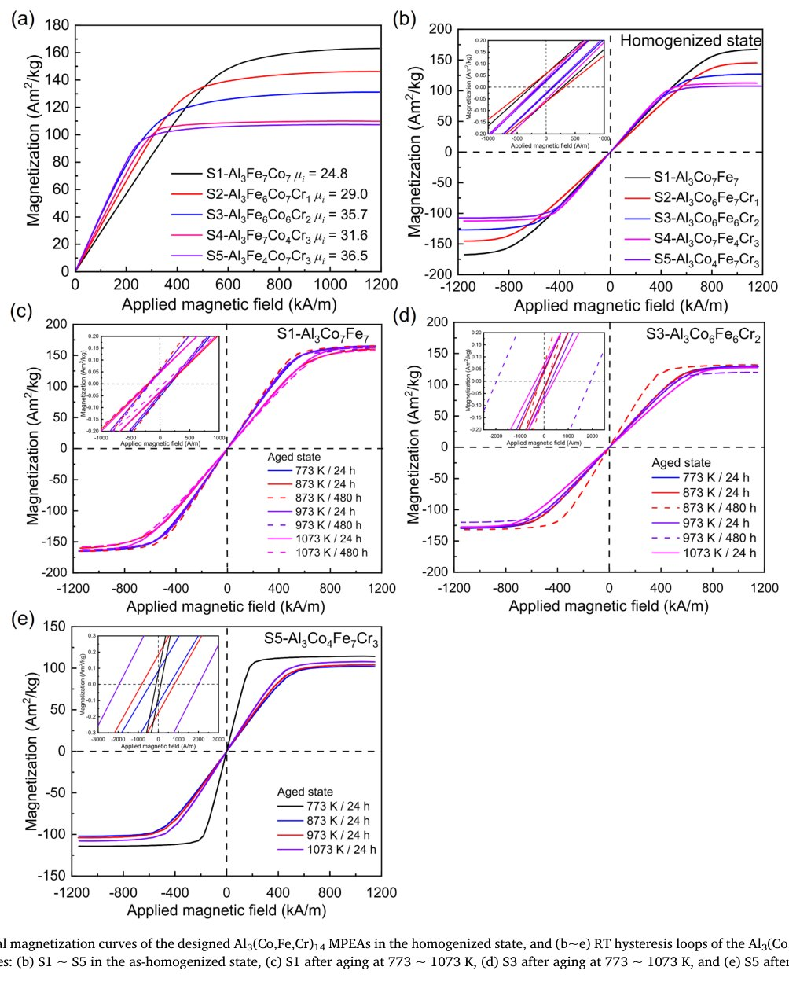
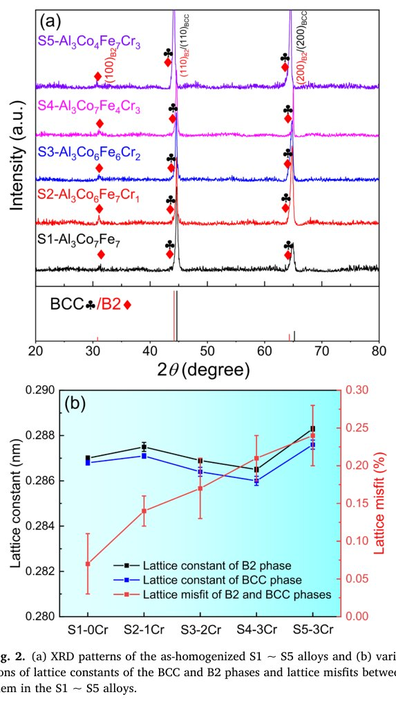
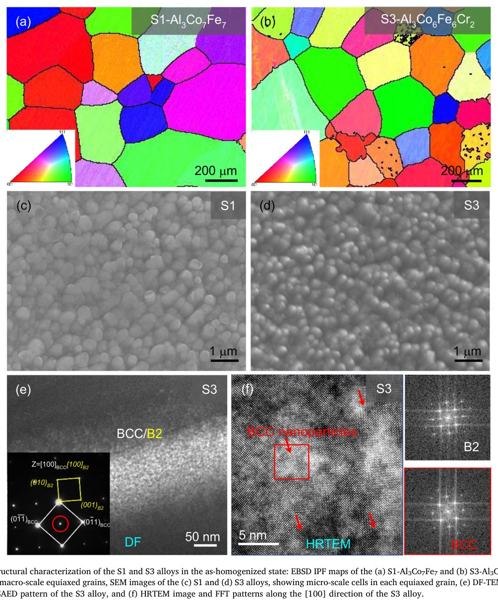
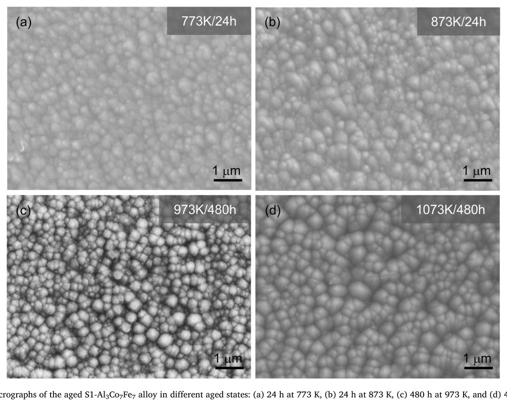
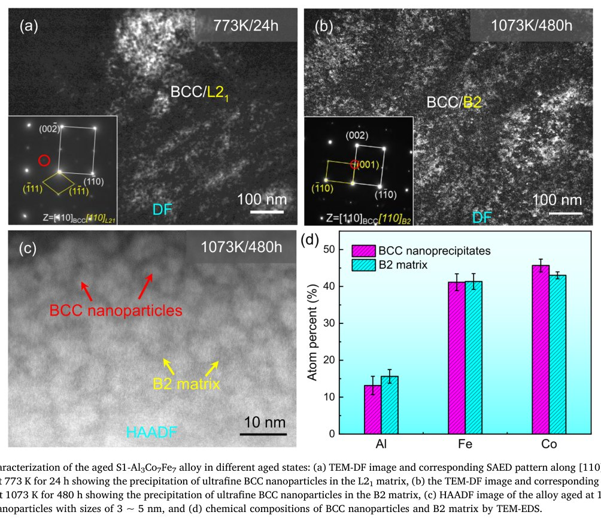
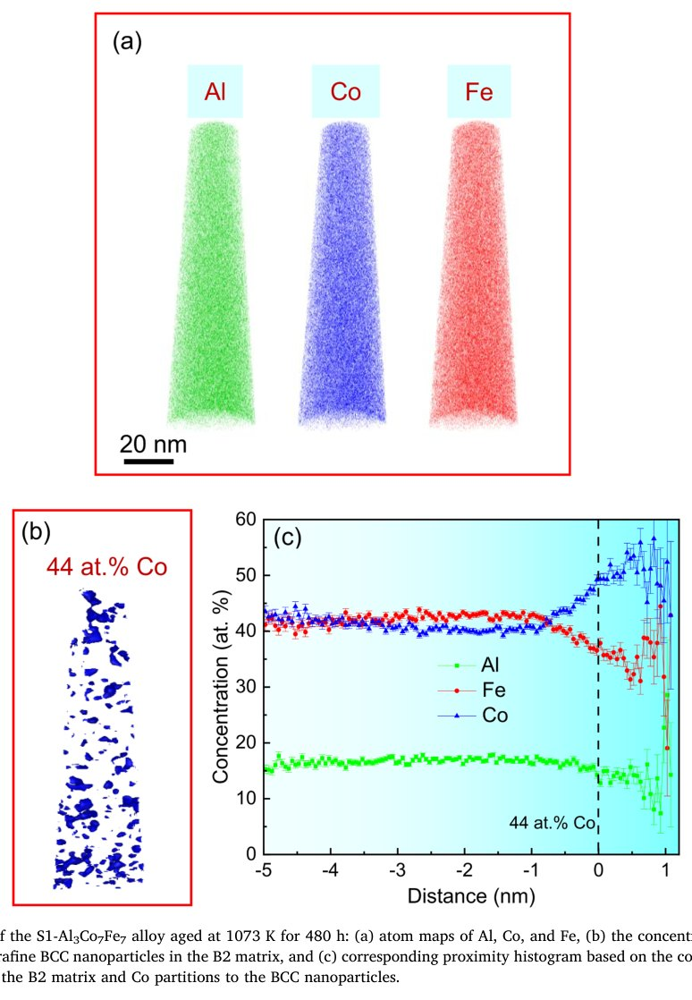
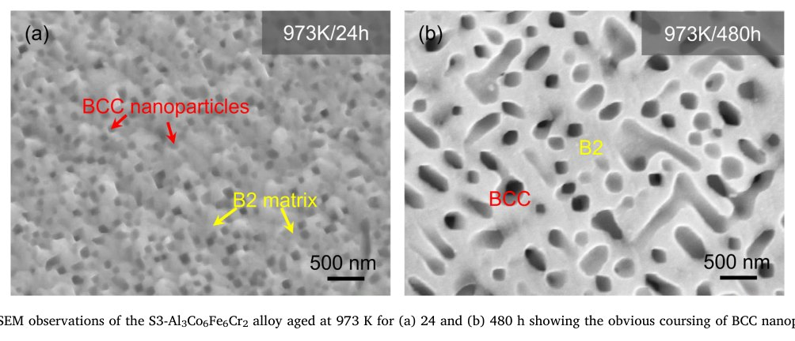
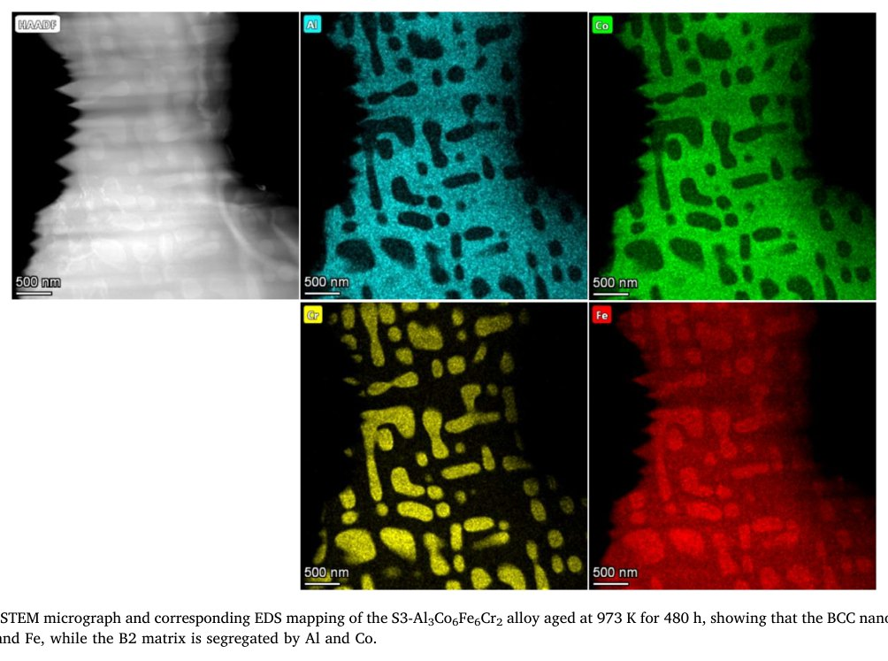
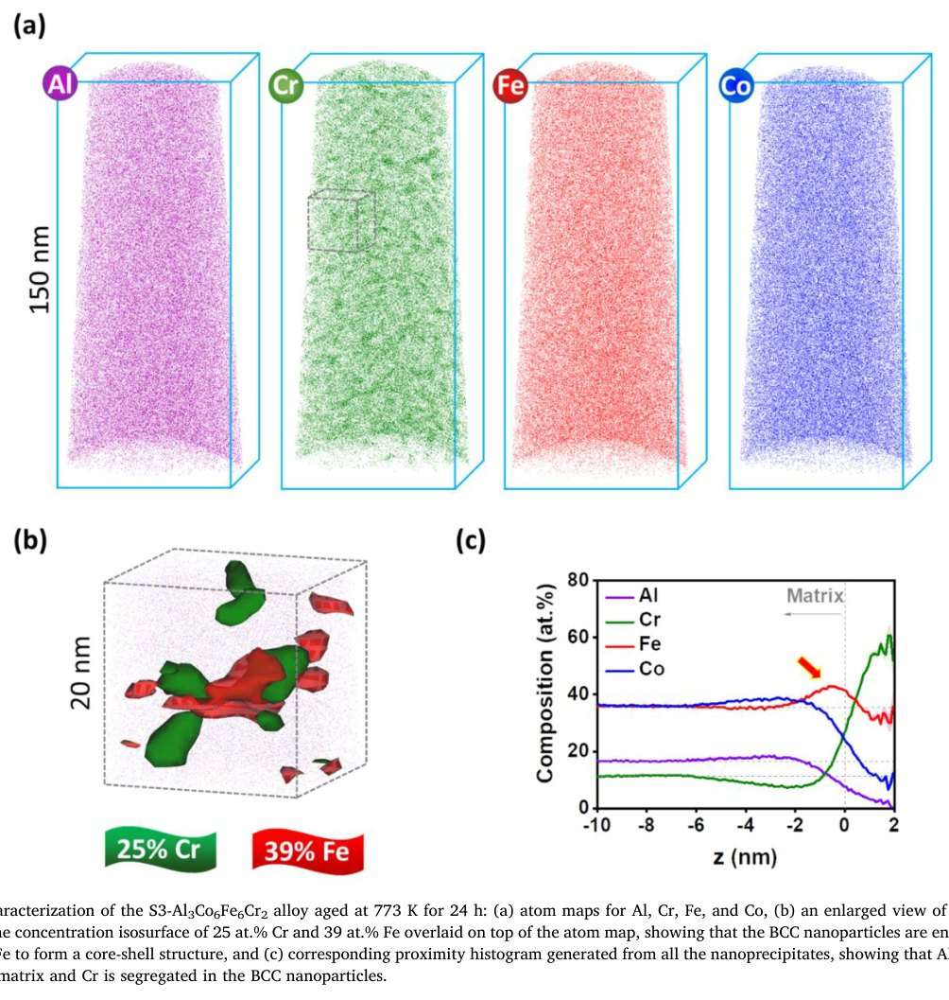
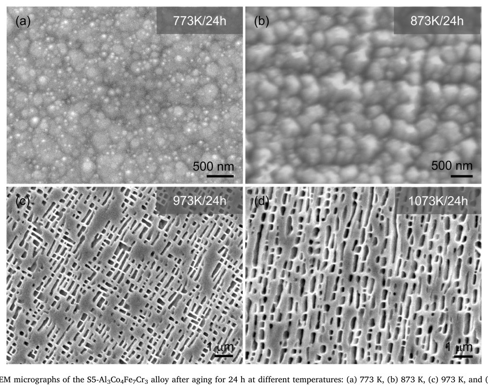
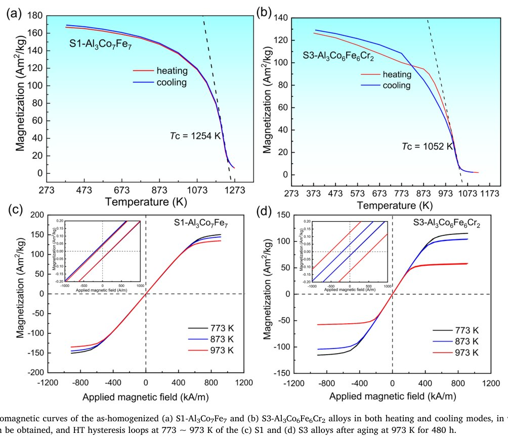
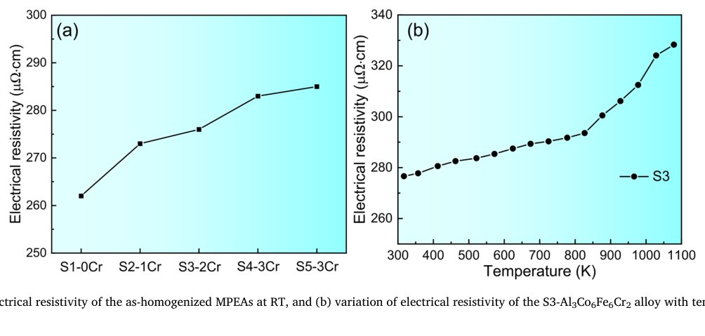
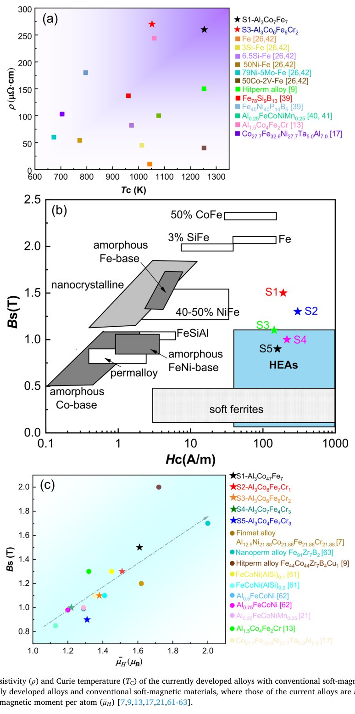
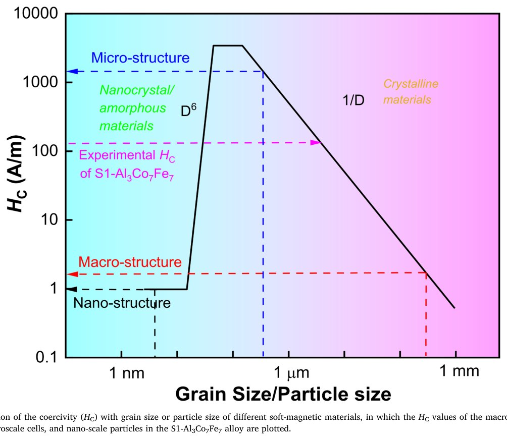
译文仅供学习参考，术语与数据以英文原文为准。已省略参考文献与致谢。
Acta Materialia · 2026
纳米片层异质结构主导 Fe30Co30Ni30Al5Ti5 合金从超软到硬态的磁性可调性Nano-lamellar heterostructures dictate magnetic tunability from ultra-soft to hard states in Fe30Co30Ni30Al5Ti5 alloy
本页为「摘要 + 正文」中文翻译（含引言、实验、结果与讨论、结论各节，部分段落合并精炼但保留全部关键数据）；已省略参考文献与致谢。默认显示中文，可用右上角按钮切换「对照 / EN」。
摘要 / Abstract
Achieving broad magnetic tunability within a single alloy, without compromising saturation magnetization (Ms) and mechanical performance, remains a significant challenge. Inherent trade-offs between magnetic and mechanical properties have severely constrained the design of such materials. Here, we achieve synergistic optimization of coercivity, saturation magnetization, and yield strength by introducing a hierarchical heterostructure strategy in Fe30Co30Ni30Al5Ti5 multi-principal element alloy. By systematically varying the aging time, we modulate the evolution of alternating BCC and L12 nano-lamellar structures whose evolution fundamentally governs the magnetic response. These structures induce pronounced nano-lamellar boundary strengthening while, paradoxically, reducing the coercivity by an order of magnitude to an ultra-soft magnetic state (~0.233 kA m⁻¹), thereby overturning the long-standing paradigm where strengthening phases typically increase coercivity. Extended aging further drives the structural evolution into a highly anisotropic nano-lamellar architecture, enabling a deterministic switch to a robust hard magnetic state (~21.452 kA m⁻¹) and spanning two orders of magnitude in coercivity. Remarkably, this unprecedented tunability is accompanied by a synergistic enhancement of Ms to 158 Am² kg⁻¹, effectively mitigating the conventional magnetic dilution effect. The underlying mechanism is attributed to distinct roles of the nano-lamellar BCC FeCo-rich phase, which exhibits an ultra-soft magnetic Ms (252 Am² kg⁻¹) and transitions from acting as an exchange-spring softening agent to serving as a potent domain wall pinning network with strong shape anisotropy. This work establishes a "composition-invariant, structure-tailorable" paradigm for multifunctional magnetic materials, offering direct implications for next-generation electromagnetic technologies.
在不牺牲饱和磁化强度（Ms）和力学性能的前提下，于单一合金中实现宽广的磁性可调性，仍是一项重大挑战。磁性与力学性能之间固有的权衡严重制约了此类材料的设计。本文在 Fe30Co30Ni30Al5Ti5 多主元合金中引入分级异质结构策略，实现了矫顽力、饱和磁化强度和屈服强度的协同优化。通过系统改变时效时间，我们调控交替 BCC 与 L12 纳米片层结构的演化，而这种演化从根本上支配磁响应。这些结构一方面带来显著的纳米片层界面强化，另一方面却又反常地将矫顽力降低一个数量级，达到超软磁态（约 0.233 kA·m⁻¹），从而颠覆了"强化相通常增大矫顽力"的长期范式。进一步延长时效驱动结构演化为高度各向异性的纳米片层构型，实现向稳健硬磁态（约 21.452 kA·m⁻¹）的确定性切换，矫顽力跨越两个数量级。值得注意的是，这种前所未有的可调性还伴随 Ms 协同提升至 158 Am²·kg⁻¹，有效缓解了传统的磁稀释效应。其机理归因于纳米片层富 FeCo 的 BCC 相的不同角色——该相具有超软磁的 Ms（252 Am²·kg⁻¹），并从充当交换弹簧的软化剂，转变为具有强形状各向异性的强效畴壁钉扎网络。本工作确立了多功能磁性材料的"成分不变、结构可裁"范式，对下一代电磁技术具有直接意义。
1. 引言1. Introduction
Magnetic materials are indispensable to modern technologies, driving advancements in power conversion, transportation electrification, and information processing. They are generally categorized as soft, semi-hard, or hard magnets based on their coercivity and energy products. Soft magnets, characterized by their low coercivity, high permeability, and high saturation magnetization, are crucial for the efficient operation of transformers, inductors, and recording devices. In contrast, hard magnets exhibit high coercivity, large remanence, and high energy products, making them essential for applications such as motors, generators, and storage media. The ongoing demand for greater efficiency and durability continues to drive the development of next-generation magnetic materials. Particularly, emerging dynamic applications, such as high-speed traction motors, impose stringent mechanical constraints, thereby exposing the extreme brittleness and limited machinability of conventional commercial magnets.
磁性材料对现代技术不可或缺，推动着功率转换、交通电气化和信息处理的进步。依据矫顽力和磁能积，它们通常分为软磁、半硬磁和硬磁体。软磁体以低矫顽力、高磁导率和高饱和磁化强度为特征，对变压器、电感器和记录器件的高效运行至关重要。相比之下，硬磁体具有高矫顽力、大剩磁和高磁能积，对电机、发电机和存储介质等应用不可或缺。对更高效率和耐久性的持续需求不断推动新一代磁性材料的开发。尤其是高速牵引电机等新兴动态应用施加了严苛的机械约束，从而暴露出传统商用磁体的极端脆性和有限的可加工性。
However, a fundamental challenge persists: the intrinsic trade-off between key properties. For soft magnetic materials, increasing mechanical strength often results in a decrease in magnetic softness—in metallic systems, lattice defects hinder dislocation motion and thereby enhance mechanical strength, but simultaneously act as domain wall pinning sites, resulting in increased coercivity and diminished magnetic softness. Therefore, soft magnetic design generally aims to minimize defects, whereas greater mechanical strength necessitates their deliberate introduction. Similarly, in permanent magnets, the simultaneous improvement of coercivity and saturation magnetization has been a longstanding challenge arising from the inherent inverse relationship between magnetization and the magnetocrystalline anisotropy field. Multi-principal element alloys (MPEAs) challenge traditional alloy design paradigms by offering unprecedented opportunities to tailor functional properties through their broad compositional space and unique core effects, providing a promising avenue for overcoming the traditional performance trade-off inherent in magnetic materials. Recent advances show that the incorporation of coherent, ordered nanoprecipitates within a ferromagnetic matrix can significantly enhance mechanical strength without compromising magnetic softness. For example, Han et al. developed non-equiatomic Fe-Co-Ni-Ta-Al alloys with paramagnetic coherent nanoparticles embedded in a ferromagnetic matrix, exhibiting ultralow coercivity (78 A m⁻¹), high tensile strength (~1.3 GPa) with 54% tensile ductility, moderate Ms (100 Am²/kg), and high resistivity (103 μΩ·cm).
然而，一个根本挑战始终存在：关键性能之间的固有权衡。对软磁材料而言，提高力学强度往往导致磁软性下降——在金属体系中，晶格缺陷阻碍位错运动从而增强力学强度，但同时又充当畴壁钉扎位点，导致矫顽力增大、磁软性减弱。因此，软磁设计通常力求最小化缺陷，而更高的力学强度又必然要求刻意引入缺陷。类似地，在永磁体中，同时提高矫顽力和饱和磁化强度长期以来都是难题，源自磁化强度与磁晶各向异性场之间固有的反比关系。多主元合金（MPEA）以其宽广的成分空间和独特的核心效应，提供了前所未有的调控功能性能的机会，从而挑战了传统合金设计范式，为克服磁性材料固有的性能权衡提供了有希望的途径。最新进展表明，在铁磁性基体中引入共格有序纳米析出相，能在不损害磁软性的前提下显著提升力学强度。例如，Han 等开发的非等原子比 Fe-Co-Ni-Ta-Al 合金，在铁磁性基体中嵌入顺磁性共格纳米颗粒，表现出超低矫顽力（78 A·m⁻¹）、高抗拉强度（约 1.3 GPa）与 54% 拉伸塑性、中等 Ms（100 Am²/kg）和高电阻率（103 μΩ·cm）。
The design concept based on MPEAs has led to the development of excellent new soft magnetic materials with exceptional properties, including gigapascal-class mechanical strength, even up to 2 GPa, along with excellent ductility, thermal stability, and ultra-high electrical resistivity. This strategy typically involves the incorporation of non-magnetic or weakly magnetic strengthening elements (such as Al, Ta, and Nb) that exhibit large negative mixing enthalpies (ΔHmix) with the primary ferromagnetic elements (Fe, Co, and Ni). This thermodynamic driving force facilitates the formation of coherent, ordered intermetallic nanoprecipitates. While this approach successfully combines ultra-low coercivity with outstanding mechanical properties, it introduces a fundamental limitation: the addition of these non-magnetic elements inevitably dilutes the net magnetic moment, thereby reducing the saturation magnetization (Ms). A low saturation magnetization directly constrains motor torque and power density, hindering advancements toward lightweight and miniaturized designs. Conversely, significant progress has also been made in engineering microstructures for magnetic hardening in rare-earth-free MPEAs. For instance, thermomagnetic processing can produce fine nano-lamellar structures that serve as strong pinning sites for both magnetic domain walls and dislocations, thereby simultaneously enhancing coercivity and mechanical strength in the Co-Fe-Ni-Al system. Recent studies further demonstrate that nanoscale chemical shape anisotropy (CSA) serves as an effective mechanism for achieving hard magnetic behavior. Collectively, these findings underscore the critical importance of precise microstructural control in tailoring magnetic properties.
基于 MPEA 的设计理念已催生出性能卓越的新型软磁材料，包括吉帕级、甚至高达 2 GPa 的力学强度，兼具优异塑性、热稳定性和超高电阻率。这一策略通常引入与主要铁磁性元素（Fe、Co、Ni）具有较大负混合焓（ΔHmix）的非磁性或弱磁性强化元素（如 Al、Ta、Nb）。这种热力学驱动力促进共格有序金属间化合物纳米析出相的形成。虽然该方法成功地将超低矫顽力与出色的力学性能结合起来，却带来了一个根本局限：加入这些非磁性元素不可避免地稀释净磁矩，从而降低饱和磁化强度（Ms）。低饱和磁化强度直接制约电机扭矩和功率密度，妨碍向轻量化、小型化设计的推进。反过来，在无稀土 MPEA 的磁硬化组织工程方面也取得了重要进展。例如，热磁处理可产生细小的纳米片层结构，充当磁畴壁和位错的强钉扎位点，从而在 Co-Fe-Ni-Al 体系中同时增强矫顽力和力学强度。最新研究进一步表明，纳米尺度化学形状各向异性（CSA）是实现硬磁行为的有效机制。总的来说，这些发现凸显了精确组织控制在调控磁性能中的关键作用。
Despite notable progress, significant challenges persist in the development of magnetic MPEAs. First, most reported MPEAs are specifically designed for either soft-magnetic or hard-magnetic applications, and the ability to selectively program distinct magnetic states from a single precursor through conventional thermal processing remains exceptionally rare. Second, although the role of coherent nanoprecipitates in achieving a synergy between mechanical strength and soft magnetic properties is well established, conventional paradigms in magnetic alloy design imply a rigid coupling between microstructure and coercivity; achieving an ultra-soft magnetic state and high saturation magnetization in a precipitation-strengthened alloy remains a major challenge. Third, direct, in-situ evidence linking complex multiphase structures to the underlying domain wall dynamics across the soft-to-hard transition is still limited. Here, we achieve synergistic optimization of coercivity, saturation magnetization, and yield strength by introducing a "composition-invariant, structure-tailorable" design strategy based on nano-lamellar heterostructures. Specifically, the nano-lamellar structure is engineered to transition from acting as an exchange-coupling channel (facilitating magnetic ultra-softness) to functioning as a potent pinning center (inducing magnetic hardness), while simultaneously serving as an effective barrier to dislocation motion to ensure high yield strength. Crucially, the high saturation magnetization is intrinsically derived from the ultra-high magnetic moment of the FeCo-rich lamellae. We utilize a Fe30Co30Ni30Al5Ti5 (at.%) MPEA as a model system.
尽管进展显著，磁性 MPEA 的开发仍存在重大挑战。其一，已报道的多数 MPEA 都是专门为软磁或硬磁应用设计的，而通过常规热处理从单一前驱体有选择地"编程"出不同磁态的能力极为罕见。其二，尽管共格纳米析出相在力学强度与软磁性能协同中的作用已被充分确立，传统磁性合金设计范式却暗示组织与矫顽力之间存在刚性耦合；在析出强化合金中同时实现超软磁态和高饱和磁化强度仍是重大挑战。其三，将复杂多相结构与软-硬转变过程中畴壁动力学相联系的直接原位证据仍然有限。本文通过引入基于纳米片层异质结构的"成分不变、结构可裁"设计策略，实现了矫顽力、饱和磁化强度和屈服强度的协同优化。具体而言，纳米片层结构被设计成从充当交换耦合通道（促成磁超软性）转变为充当强效钉扎中心（诱发磁硬性），同时充当阻碍位错运动的有效障碍以确保高屈服强度。关键在于，高饱和磁化强度本征地来自富 FeCo 片层的超高磁矩。我们以 Fe30Co30Ni30Al5Ti5（原子分数）MPEA 作为模型体系。
2. 实验方法2. Experimental methods
The bulk alloy ingot (nominal Fe30Co30Ni30Al5Ti5, at.%) was prepared by arc-melting high-purity raw metals (>99.9 wt.%) under high-purity argon (a Ti getter was pre-melted to remove residual oxygen and nitrogen); ingots were remelted at least five times for chemical homogeneity, then cut into 7-mm cubes. Phase diagrams were generated using Pandat with the PanHEA2023 database. Plates were solution-treated at 1323 K for 8 h and water-quenched (SS-MPEA); heterogeneous precipitation was driven by aging at 763 K for 4 h, 24 h, and 64 h (A4-MPEA, A24-MPEA, A64-MPEA). Bulk ingots corresponding to the FCC matrix, the nano-lamellar L12 phase, and the nano-lamellar BCC phase were individually arc-melted for reference. Characterization used XRD (Cu-Kα), EBSD, TEM/HAADF-STEM (aberration-corrected, geometric phase analysis GPA), and APT (LEAP 6000 XR). Magnetic response was measured by MPMS with VSM (field along the out-of-plane direction); Ms was obtained by fitting the high-field data to the law of approach to saturation. Electrical resistivity was measured by a four-probe Seebeck instrument (ZEM-3). Compression and tensile tests (Instron) and nanoindentation (Agilent G200) were performed at room temperature.
块体合金锭（名义成分 Fe30Co30Ni30Al5Ti5，原子分数）在高纯氩气下由高纯原料金属（>99.9 wt.%）电弧熔炼制备（预熔 Ti 吸气剂以去除残余氧、氮）；铸锭重熔至少五次以保证化学均匀，再切成 7 mm 立方块。相图用 Pandat 配合 PanHEA2023 数据库生成。板材在 1323 K 固溶处理 8 h 后水淬（SS-MPEA）；通过在 763 K 时效 4 h、24 h、64 h 驱动异质析出（分别为 A4-MPEA、A24-MPEA、A64-MPEA）。另外单独电弧熔炼了对应 FCC 基体、纳米片层 L12 相和纳米片层 BCC 相的块体锭以作参照。表征采用 XRD（Cu-Kα）、EBSD、TEM/HAADF-STEM（球差校正，几何相分析 GPA）和 APT（LEAP 6000 XR）。磁响应用带 VSM 的 MPMS 测量（磁场沿面外方向）；Ms 通过将高场数据拟合到趋近饱和定律获得。电阻率用四探针塞贝克仪（ZEM-3）测量。压缩、拉伸试验（Instron）和纳米压痕（Agilent G200）在室温进行。
3.1 组织表征3.1 Microstructural characterization
The Fe30Co30Ni30Al5Ti5 alloy was designed by exploiting differential chemical affinities to tailor solid-state phase separation. Guided by thermodynamic calculations, the alloy was solution-treated at 1323 K and quenched to obtain a supersaturated solid solution; aging at 763 K within the L12 + BCC (B2) dual-phase region drives phase decomposition. This rationale is founded on the distinct hierarchy in binding affinities for Al and Ti: their mixing enthalpies with Ni and Al (−35 and −22 kJ/mol) are significantly more negative than those of Co and Fe. Owing to this, Ni preferentially associates with Al and Ti, promoting the ordered L12 phase; the remaining Fe and Co (near-zero mutual mixing enthalpy) partition into adjacent regions, stabilizing the BCC phase. The ideal configurational entropy is ~1.36 R, which is thermodynamically important for counterbalancing the strongly negative mixing enthalpies and suppressing premature intermetallic compound formation. XRD shows SS-MPEA and A4-MPEA are single-phase FCC, whereas A24-MPEA and A64-MPEA develop BCC peaks; BCC precipitation shows a pronounced kinetic delay (higher nucleation barrier). Quantitatively, ~20% BCC forms in A24-MPEA, increasing to ~67% in A64-MPEA.
Fe30Co30Ni30Al5Ti5 合金的设计利用了元素间不同的化学亲和力来裁剪固态相分离。在热力学计算指导下，合金在 1323 K 固溶并淬火以获得过饱和固溶体；在 763 K、L12 + BCC（B2）两相区内时效则驱动相分解。其依据在于 Al、Ti 结合亲和力的明显层级：Ni 与 Al、Ti 的混合焓（−35 和 −22 kJ/mol）比 Co、Fe 的负得多。因此，Ni 优先与 Al、Ti 结合，促进有序 L12 相；剩余的 Fe、Co（彼此混合焓近零）分配到邻近区域，稳定 BCC 相。理想构型熵约为 1.36 R，这对抵消强烈的负混合焓、抑制金属间化合物的过早形成在热力学上很重要。XRD 显示 SS-MPEA 和 A4-MPEA 为单相 FCC，而 A24-MPEA 和 A64-MPEA 出现 BCC 峰；BCC 析出表现出明显的动力学滞后（形核势垒较高）。定量上，A24-MPEA 中约形成 20% BCC，到 A64-MPEA 增至约 67%。
SS-MPEA is a disordered single-phase FCC. After short-term aging (A4-MPEA), coherent L12 nanoprecipitates (~2 nm, near-spherical, uniformly distributed) form in the FCC matrix and effectively redistribute the severe internal stress of SS-MPEA. In A24-MPEA, BF-STEM reveals two structural features: L12 nanoprecipitates (2–6 nm, spherical) within equiaxed FCC grains, and nano-lamellar regions where BCC and L12 lamellae alternate. The BCC nano-lamellae are enriched in Fe and Co (near 1:1), whereas the L12 lamellae are enriched in Ni, Al, and Ti; most lamellar BCC is shorter than 120 nm (average length ~47 nm) and <35 nm wide (average ~15 nm), following a Kurdjumov–Sachs (K–S) orientation relationship with the L12 lamellae. In A64-MPEA, a dual-phase BCC + L12 lamellar microstructure with high aspect ratio (~35, length ~485 nm, width ~14 nm) dominates, following the Nishiyama–Wassermann (N–W) relationship ({111}//{011}, ⟨110⟩//⟨100⟩); {111} twins form within the L12 lamellae to accommodate residual strain, and the BCC/L12 lattice mismatch is ~23–24% (semi-coherent). The lamellar morphology is dictated by a solid-state eutectoid reaction whose configuration is governed by the strong anisotropy of interfacial and elastic strain energies. APT gives the A24 BCC and L12 lamellae as Co48.1Fe47.6Ni3.3Al0.8Ti0.2 and Ni66.2Ti13Al10.2Co6.9Fe3.7 (at.%), and the A64 phases as Co47.3Fe47Ni4.2Al1Ti0.5 and Ni66.4Ti11.2Al10.1Co7.4Fe4.9 (at.%).
SS-MPEA 为无序单相 FCC。短时时效后（A4-MPEA），FCC 基体中形成共格 L12 纳米析出相（约 2 nm，近球形，均匀分布），有效重新分配了 SS-MPEA 的严重内应力。在 A24-MPEA 中，BF-STEM 揭示两种结构特征：等轴 FCC 晶粒内的 L12 纳米析出相（2–6 nm，球形），以及 BCC 与 L12 片层交替的纳米片层区域。BCC 纳米片层富集 Fe、Co（接近 1:1），而 L12 片层富集 Ni、Al、Ti；多数片层 BCC 短于 120 nm（平均长约 47 nm）、宽 <35 nm（平均约 15 nm），与 L12 片层遵循 Kurdjumov–Sachs（K–S）取向关系。在 A64-MPEA 中，以高长径比（约 35，长约 485 nm、宽约 14 nm）的 BCC + L12 双相片层组织为主，遵循 Nishiyama–Wassermann（N–W）关系（{111}//{011}，⟨110⟩//⟨100⟩）；L12 片层内形成 {111} 孪晶以协调残余应变，BCC/L12 晶格错配约 23–24%（半共格）。片层形貌由固态共析反应所决定，其构型受界面能与弹性应变能强各向异性的支配。APT 给出 A24 的 BCC 与 L12 片层成分分别为 Co48.1Fe47.6Ni3.3Al0.8Ti0.2 和 Ni66.2Ti13Al10.2Co6.9Fe3.7（原子分数），A64 的两相为 Co47.3Fe47Ni4.2Al1Ti0.5 和 Ni66.4Ti11.2Al10.1Co7.4Fe4.9（原子分数）。
3.2 磁性能与力学性能3.2 Magnetic and mechanical properties
After 24 h of aging (A24-MPEA), the coercivity Hc decreases by nearly an order of magnitude compared to the solution-treated condition, dropping from 2.390 ± 0.025 to 0.233 ± 0.094 kA m⁻¹. With aging increasing to 64 h (A64-MPEA), Hc increases dramatically to 21.452 ± 0.057 kA m⁻¹, representing a ~92-fold rise relative to A24. Meanwhile, Ms increases monotonically: 134 ± 1 (SS-MPEA), 142 ± 1 (A24-MPEA), and 158 ± 1 Am² kg⁻¹ (A64-MPEA). This trend reflects changes in intrinsic magnetic behavior: A24-MPEA shows two ferromagnetic phases (Curie temperatures Tc1 = 723 K and Tc2 = 973 K, corresponding to the FCC and high-moment BCC phases), whereas SS and A4 show a single ferromagnetic phase; in A64-MPEA an abnormal increase in magnetization occurs above 723 K, consistent with a "two-phase ferromagnet" mechanism (above Tc1 the FCC becomes paramagnetic and the magnetic response is dominated by the high-Tc, high-moment BCC phase). The yield strength increases continuously with aging: 370 ± 20 (SS), 455 ± 4 (A4), 840 ± 7 (A24), and 2360 ± 27 MPa (A64), with nanoindentation confirming that the BCC + L12 lamellae essentially drive the strengthening. Thus the soft-magnetic A24 shows a significant increase in both Ms and yield strength accompanied by a drastic reduction in coercivity, while the hard-magnetic A64 exhibits simultaneous enhancements in Ms, coercivity, and strength.
时效 24 h 后（A24-MPEA），矫顽力 Hc 相比固溶态下降近一个数量级，从 2.390 ± 0.025 降至 0.233 ± 0.094 kA·m⁻¹。当时效延长到 64 h（A64-MPEA），Hc 急剧增至 21.452 ± 0.057 kA·m⁻¹，相对 A24 提高约 92 倍。与此同时，Ms 单调升高：134 ± 1（SS-MPEA）、142 ± 1（A24-MPEA）、158 ± 1 Am²·kg⁻¹（A64-MPEA）。这一趋势反映了本征磁行为的变化：A24-MPEA 出现两个铁磁相（居里温度 Tc1 = 723 K、Tc2 = 973 K，分别对应 FCC 和高磁矩 BCC 相），而 SS 和 A4 为单一铁磁相；A64-MPEA 在 723 K 以上磁化强度反常升高，符合"两相铁磁体"机制（Tc1 以上 FCC 变为顺磁，磁响应由高 Tc、高磁矩的 BCC 相主导）。屈服强度随时效持续升高：370 ± 20（SS）、455 ± 4（A4）、840 ± 7（A24）、2360 ± 27 MPa（A64），纳米压痕证实 BCC + L12 片层实质上主导了这种强化。因此，软磁的 A24 在 Ms 和屈服强度显著提高的同时矫顽力急剧下降，而硬磁的 A64 则在 Ms、矫顽力和强度上同步增强。
The tunable magnetic properties are highlighted by comparison with representative materials: A24-MPEA achieves relatively high Ms and low Hc, with an Ms superior to amorphous and nanocrystalline alloys (though still below Fe-Co and Fe-Si), and a relatively high electrical resistivity ρ of 86 μΩ·cm (exceeding conventional Fe-Co and Fe-Si alloys, attributed to synergistic electron scattering from multiple crystal defects and the high density of phase boundaries in the nano-lamellar heterostructure that reduces the electron mean free path—advantageous for minimizing eddy-current losses). The A64-MPEA exhibits an excellent combination of extremely high Ms (158 ± 1 Am² kg⁻¹) and moderate coercivity (21.452 ± 0.057 kA m⁻¹), classifying it as a hard magnetic material (Hc ≥ 10 kA m⁻¹); its Ms exceeds existing commercial permanent magnets and most reported MPEAs. However, the extensive precipitation of the BCC phase inevitably leads to compressive brittleness, so the broad trade-off between magnetic and mechanical performance persists. Notably, this single-precursor paradigm offers distinct manufacturing advantages: by decoupling shaping from hardening, complex components can be machined in the relatively ductile precursor and then given a final aging treatment to impart hard-magnetic properties and high strength—circumventing the machinability constraints of brittle magnets such as sintered NdFeB.
通过与代表性材料对比可凸显这种可调磁性：A24-MPEA 兼具较高 Ms 和低 Hc，其 Ms 优于非晶和纳米晶合金（虽仍低于 Fe-Co 和 Fe-Si），并具有较高的电阻率 ρ（86 μΩ·cm，超过传统 Fe-Co 和 Fe-Si 合金）——这归因于多种晶体缺陷带来的协同电子散射，以及纳米片层异质结构中高密度相界减小电子平均自由程（有利于降低涡流损耗）。A64-MPEA 兼具极高 Ms（158 ± 1 Am²·kg⁻¹）和中等矫顽力（21.452 ± 0.057 kA·m⁻¹）的优异组合，可归类为硬磁材料（Hc ≥ 10 kA·m⁻¹）；其 Ms 超过现有商用永磁体和多数已报道的 MPEA。然而，BCC 相的大量析出不可避免地带来压缩脆性，因此磁性与力学性能之间的总体权衡依然存在。值得注意的是，这种单前驱体范式带来独特的制造优势：通过将成形与硬化解耦，复杂部件可在相对韧性的前驱体上加工，再经最终时效处理赋予硬磁性能和高强度——从而规避了烧结 NdFeB 等脆性磁体的可加工性限制。
3.3 磁态可调的机理3.3 Mechanisms for tunable magnetic states
To elucidate the mechanisms, the magnetocrystalline anisotropy constant K1 was calculated via the law of approach to saturation, M = Ms(1 − a/H − b/H² − …) + χp·H with b = (8/105)(K1²/μ0²Ms²). The K1 values rise monotonically: 5.2, 6.8, 9.9, and 18.3 kJ m⁻³ for SS, A4, A24, and A64. The significant enhancement in effective anisotropy in A64 is primarily attributed to the microstructural evolution—a dense, percolating network of high-aspect-ratio BCC nano-lamellae introducing strong shape anisotropy alongside the intrinsic magnetocrystalline anisotropy. In-situ Lorentz TEM tracks domain evolution. The broad tunability is attributed to the evolving role of the high-moment, Fe-Co-rich BCC phase, which transitions from a soft magnetic nucleation agent into a hard magnetic pinning network. Upon short-term aging (A4), ~2 nm coherent L12 precipitates partially alleviate internal stress; chemical ordering enhances magnetocrystalline anisotropy, slightly increasing coercivity to 2.414 kA m⁻¹ (competition between stress-relaxation softening and order-induced hardening).
为阐明机理，通过趋近饱和定律计算磁晶各向异性常数 K1：M = Ms(1 − a/H − b/H² − …) + χp·H，其中 b = (8/105)(K1²/μ0²Ms²)。K1 值单调上升：SS、A4、A24、A64 分别为 5.2、6.8、9.9、18.3 kJ·m⁻³。A64 中有效各向异性的显著增强，主要归因于组织演化——高长径比 BCC 纳米片层形成致密贯通的网络，在本征磁晶各向异性之外引入了强形状各向异性。原位洛伦兹 TEM 跟踪了磁畴演化。这种宽广的可调性归因于高磁矩、富 Fe-Co 的 BCC 相角色的演变——它从软磁形核剂转变为硬磁钉扎网络。短时时效后（A4），约 2 nm 的共格 L12 析出相部分缓解内应力；化学有序化增强磁晶各向异性，使矫顽力略升至 2.414 kA·m⁻¹（应力松弛软化与有序诱导硬化之间的竞争）。
Prolonged aging for 24 h (A24) induces profound magnetic softening, with coercivity dropping to an ultra-low 0.233 kA m⁻¹ via two synergistic mechanisms. First, effective averaging of local magnetocrystalline anisotropy, dictated by the fine scale of the alternating BCC and L12 nano-lamellae: the domain-wall widths δw = π(Aex/K1)^(1/2) are 111 nm (BCC) and 163 nm (FCC), much larger than the physical dimensions of the BCC nano-lamellae (average width ~15 nm, length ~47 nm), so the domain walls span multiple lamellae and effectively average out local anisotropy fluctuations, greatly reducing pinning. Second, and more dominant, exchange-coupled softening: bulk-sample measurements show the nano-lamellar BCC phase has a higher Ms (252 Am² kg⁻¹) and lower Hc, while the L12 lamellae are paramagnetic. The BCC lamellae act as "soft channels" that drag cooperative magnetization reversal of the FCC matrix (an exchange-spring mechanism), serving as effective nucleation sites; in-situ Lorentz TEM confirms that domain walls associated with the BCC nano-lamellae exhibit exceptionally high mobility. A24-MPEA shows minimal hysteresis at low fields but significantly larger hysteresis at high fields—a hallmark of exchange-coupled systems.
延长时效至 24 h（A24）引发深度磁软化，矫顽力通过两种协同机制降至超低的 0.233 kA·m⁻¹。其一，由交替 BCC 与 L12 纳米片层的细小尺度所决定的局部磁晶各向异性有效平均：畴壁宽度 δw = π(Aex/K1)^(1/2) 分别为 111 nm（BCC）和 163 nm（FCC），远大于 BCC 纳米片层的物理尺寸（平均宽约 15 nm、长约 47 nm），因此畴壁横跨多个片层，有效地平均掉局部各向异性起伏，大幅减少钉扎。其二（也是更主导的）为交换耦合软化：块体样品测量显示纳米片层 BCC 相具有更高的 Ms（252 Am²·kg⁻¹）和更低的 Hc，而 L12 片层为顺磁性。BCC 片层充当"软通道"，拖动 FCC 基体的协同磁化反转（交换弹簧机制），充当有效形核位点；原位洛伦兹 TEM 证实与 BCC 纳米片层相关的畴壁具有异常高的可动性。A24-MPEA 在低场下磁滞极小，但在高场区磁滞明显增大——这是交换耦合体系的标志性特征。
In contrast, prolonged aging to 64 h (A64) results in dramatic magnetic hardening, with coercivity increasing to ~21.452 kA m⁻¹. This signals a fundamental shift in the role of the BCC phase, which transitions from a softening to a potent hardening agent. This hardening is governed by a dual mechanism. The primary mechanism is strong domain wall pinning: as the BCC fraction increases to ~67%, it forms a dense, percolating nano-lamellar network creating a high density of interfaces between the high-moment BCC and low-moment L12; within this network, the paramagnetic L12 lamellae, functioning as non-magnetic planar defects, create local energy wells that strongly impede domain-wall motion. Concurrently, the continuous FeCo-rich BCC lamellae physically isolate the phase and decouple the direct exchange interactions between adjacent ferromagnetic regions—this disruption of exchange softening yields a reversal process dominated by pinning (confirmed by in-situ Lorentz TEM, where domain walls are firmly immobilized by the dense network). The second mechanism is shape anisotropy: the BCC nano-lamellae have a high aspect ratio (~35), and magnetostatic energy is minimized when magnetization aligns along their longest axis, compelling the magnetization within the high-Ms BCC to preferentially align along the length. This preferred orientation introduces a strong uniaxial anisotropy—an energy barrier to rotation that directly increases coercivity (analogous to classic AlNiCo magnets). K1 rises monotonically to 18.3 kJ m⁻³ in A64.
相反，延长时效至 64 h（A64）导致显著的磁硬化，矫顽力增至约 21.452 kA·m⁻¹。这标志着 BCC 相角色的根本转变——从软化剂变为强效硬化剂。这种硬化受双重机制支配。主要机制为强畴壁钉扎：随 BCC 分数增至约 67%，形成致密贯通的纳米片层网络，在高磁矩 BCC 与低磁矩 L12 之间创造出高密度界面；在该网络内，顺磁性 L12 片层作为非磁性平面缺陷，形成强烈阻碍畴壁运动的局部能量陷阱。与此同时，连续的富 FeCo 的 BCC 片层将该相物理隔离，并解耦相邻铁磁区之间的直接交换相互作用——这种对交换软化的破坏使反转过程由钉扎主导（原位洛伦兹 TEM 证实畴壁被致密网络牢固固定）。第二种机制是形状各向异性：BCC 纳米片层长径比高（约 35），当磁化沿其最长轴取向时静磁能最小，从而迫使高 Ms 的 BCC 内磁化优先沿长度方向排列。这种择优取向引入强单轴各向异性——即阻碍转动的能垒，直接增大矫顽力（与经典 AlNiCo 磁体类似）。A64 中 K1 单调升至 18.3 kJ·m⁻³。
It is worth noting that, although A64-MPEA achieves a robust hard magnetic state, conventional spinodal alloys with lower compositional complexity (e.g., FeCrCo-based systems, and laser powder bed fusion with tailored spinodal decomposition) also exhibit remarkable hard-magnetic and broad magnetic tunability. However, this single MPEA precursor undergoes a distinctly non-monotonic magnetic transition: first reaching an ultra-soft state (~0.233 kA m⁻¹) at the intermediate aging stage, then transforming to a hard state (~21.452 kA m⁻¹) after prolonged aging. Crucially, this magnetic evolution is accompanied by a simultaneous increase in both saturation magnetization and yield strength. A common limitation of precipitation-strengthened soft-magnetic MPEAs is the reduction in Ms due to dilution from non-magnetic elements; here, chemical partitioning results in Fe-Co-rich BCC and Ni/Al/Ti-rich L12, and since the BCC phase has a higher inherent magnetic moment (bulk BCC Ms = 252 Am² kg⁻¹), increasing the BCC fraction enhances rather than reduces Ms. This multi-phase synergy fundamentally differs from extrinsic composite strategies: the bulk alloy achieves broad magnetic tunability and high yield strength entirely through intrinsic phase decomposition, without extrinsic magnetic fillers or the associated property compromises.
值得注意的是，尽管 A64-MPEA 实现了稳健的硬磁态，成分复杂度较低的传统调幅分解合金（如 FeCrCo 基体系，以及带有定制调幅分解的激光粉末床熔融）同样表现出出色的硬磁性和宽广的磁性可调性。然而，这一单一 MPEA 前驱体经历了明显的非单调磁转变：在中间时效阶段先达到超软态（约 0.233 kA·m⁻¹），延长时效后再转变为硬态（约 21.452 kA·m⁻¹）。关键在于，这种磁演化伴随着饱和磁化强度和屈服强度的同步提高。析出强化软磁 MPEA 的常见局限是非磁性元素稀释导致 Ms 下降；而这里，化学分配形成富 Fe-Co 的 BCC 和富 Ni/Al/Ti 的 L12，由于 BCC 相具有更高的本征磁矩（块体 BCC 的 Ms = 252 Am²·kg⁻¹），增大 BCC 分数反而提升而非降低 Ms。这种多相协同与外源复合策略有本质区别：块体合金完全通过本征相分解实现宽广的磁性可调性和高屈服强度，无需外源磁性填料，也没有随之而来的性能折衷。
4. 结论4. Conclusions
In summary, we have achieved a synergistic optimization among coercivity, saturation magnetization, and yield strength by establishing a "composition-invariant, structure-tailorable" paradigm in the Fe30Co30Ni30Al5Ti5 MPEA. Through systematically varying the aging time to regulate the structural evolution of the nano-lamellar heterostructures, we achieved deterministic switching between distinct magnetic states from a single precursor. The alloy exhibits a unique non-monotonic magnetic transition: it evolves from an initial semi-hard magnetic state (−2.39 kA m⁻¹), first into an ultra-soft magnetic state (−0.233 kA m⁻¹), and subsequently into a robust hard magnetic state (−21.452 kA m⁻¹), spanning two orders of magnitude in coercivity. Crucially, this broad tunability is accompanied by a synergistic enhancement in both yield strength and saturation magnetization (reaching 158 Am² kg⁻¹), effectively mitigating the canonical magnetic dilution problem inherent in precipitation-strengthened alloys. We have elucidated that this unprecedented performance stems from the distinct functional evolution of the high-moment FeCo-rich nano-lamellae, which transition from acting as exchange-coupling channels that facilitate magnetization reversal (softening mechanism) to serving as a potent domain-wall pinning network enriched with strong shape anisotropy (hardening mechanism). This work provides direct, in-situ evidence of how complex multiphase architectures govern domain wall dynamics, offering a comprehensive understanding of the structure–property relationship, and provides a viable pathway for designing high-performance magnetic alloys for next-generation electromagnetic applications, ranging from load-bearing high-speed motors to information storage systems.
综上所述，我们通过在 Fe30Co30Ni30Al5Ti5 MPEA 中确立"成分不变、结构可裁"范式，实现了矫顽力、饱和磁化强度和屈服强度之间的协同优化。通过系统改变时效时间来调控纳米片层异质结构的结构演化，我们从单一前驱体实现了不同磁态之间的确定性切换。该合金呈现独特的非单调磁转变：从初始的半硬磁态（−2.39 kA·m⁻¹），先进入超软磁态（−0.233 kA·m⁻¹），随后进入稳健的硬磁态（−21.452 kA·m⁻¹），矫顽力跨越两个数量级。关键在于，这种宽广的可调性伴随着屈服强度和饱和磁化强度的协同提升（Ms 达 158 Am²·kg⁻¹），有效缓解了析出强化合金固有的典型磁稀释问题。我们阐明，这一前所未有的性能源自高磁矩富 FeCo 纳米片层不同的功能演变——它从充当促进磁化反转的交换耦合通道（软化机制），转变为富含强形状各向异性的强效畴壁钉扎网络（硬化机制）。本工作提供了复杂多相构型如何支配畴壁动力学的直接原位证据，给出对结构–性能关系的全面理解，并为设计面向下一代电磁应用（从承载型高速电机到信息存储系统）的高性能磁性合金提供了可行路径。
图表（来自原文）Figures from the original paper
下列为原文插图（含英文图注），供对照阅读。
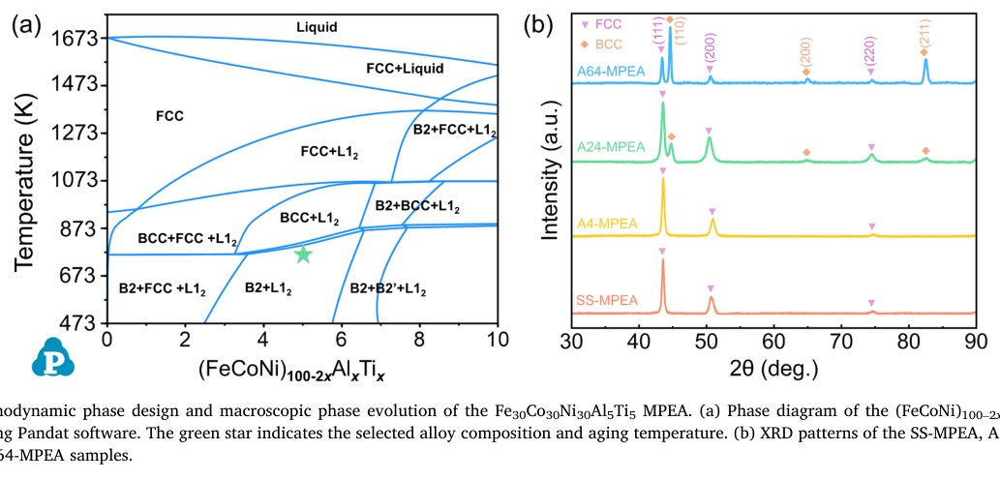
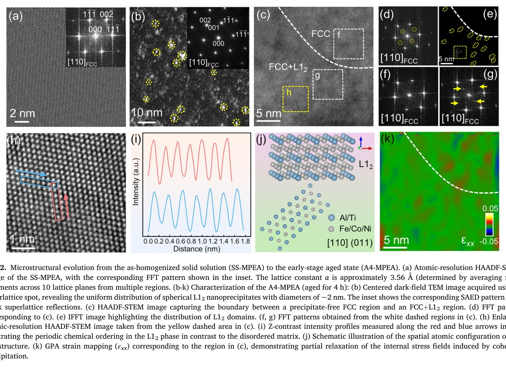
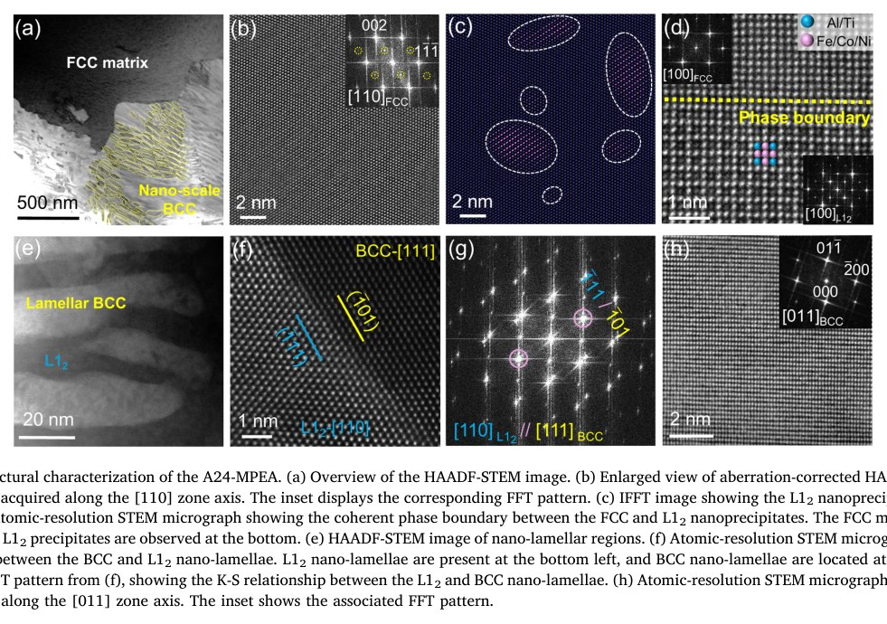
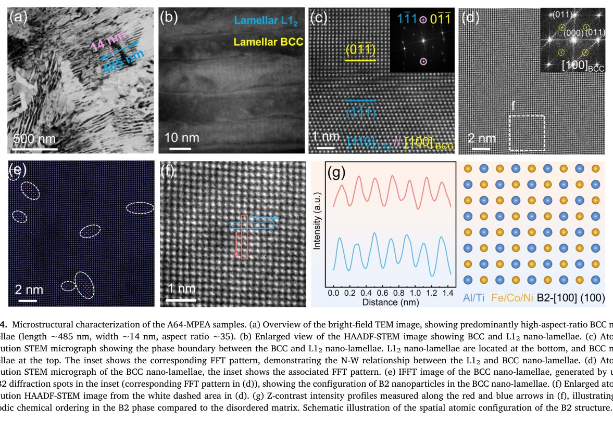
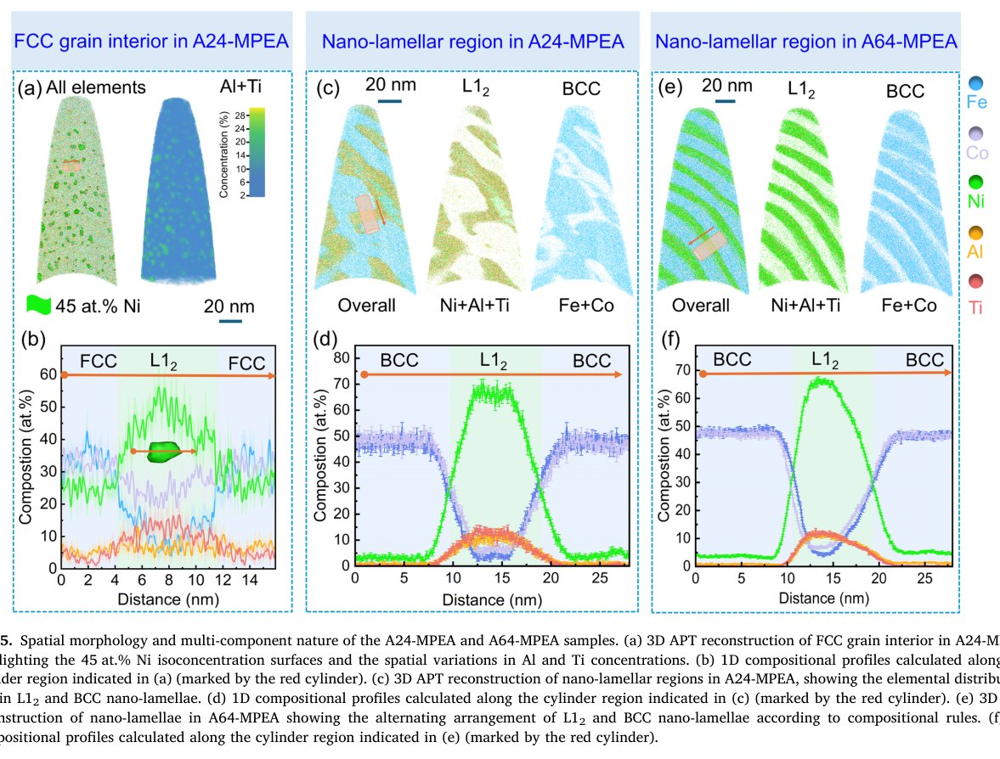
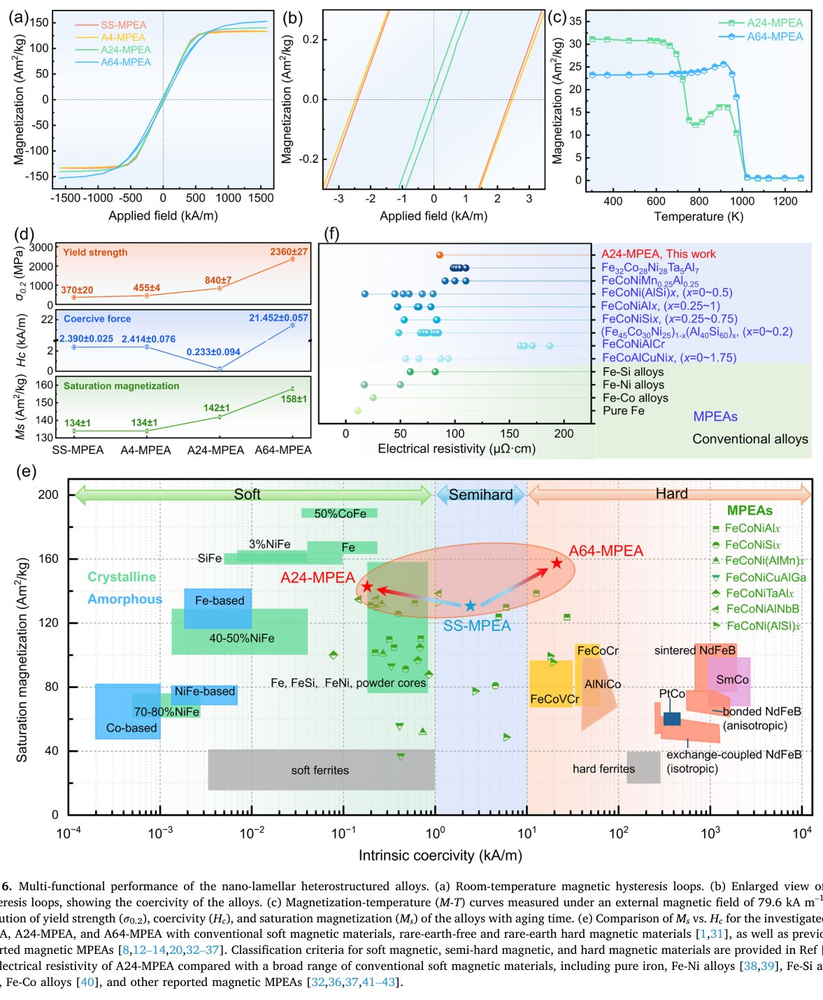
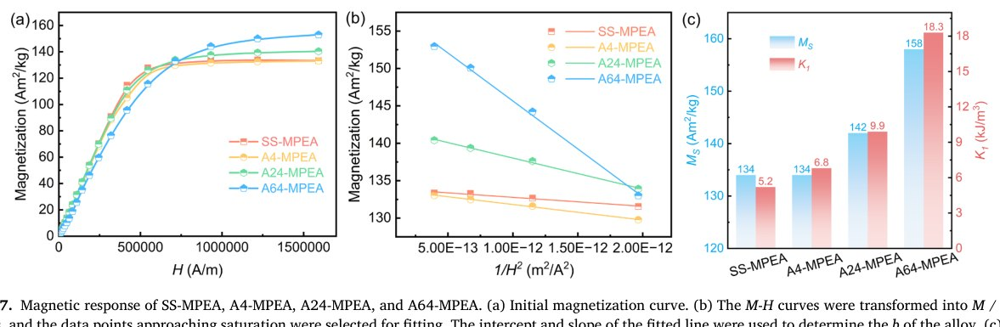
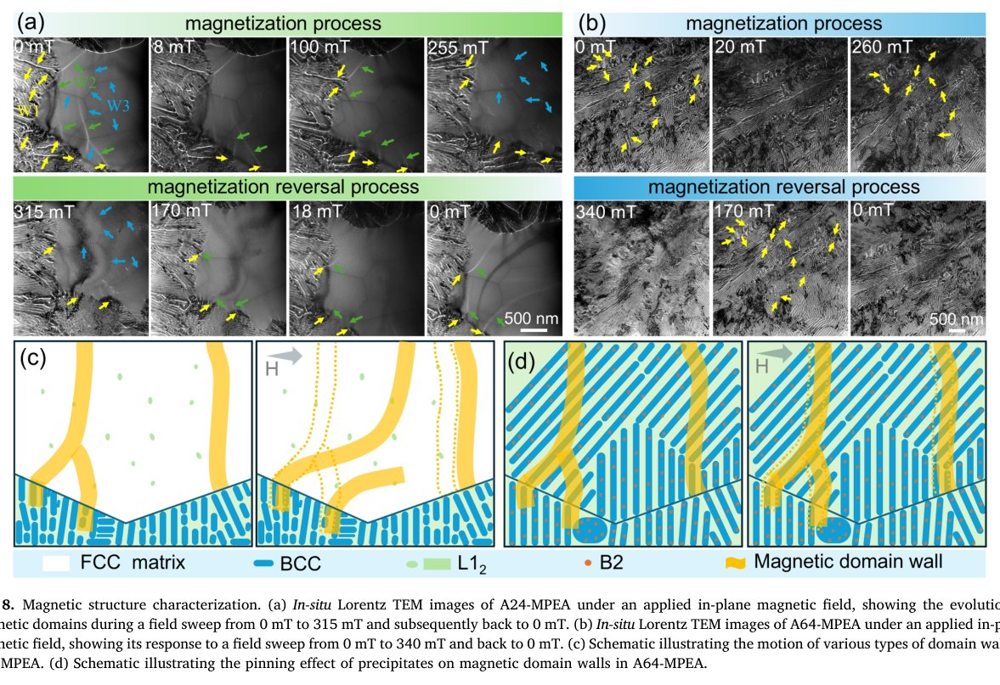
译文仅供学习参考，术语与数据以英文原文为准。已省略参考文献与致谢。
Advanced Materials · 2024
强而韧的高熵合金中的大非磁滞体积磁致伸缩Large Nonhysteretic Volume Magnetostriction in a Strong and Ductile High-Entropy Alloy
本页为「摘要 + 正文」中文翻译（含引言、结果与讨论 2.1–2.5、结论）；已省略 Experimental Section（方法）、支持信息与参考文献。默认显示中文，可用右上角按钮切换「对照 / EN」。
摘要 / Abstract
Rapid development of smart technologies poses a big challenge for magnetostrictive materials, which should not only permit isotropic and hysteresis-free actuation (i.e., nonhysteretic volume change) in magnetic fields, but also have high strength and high ductility. Unfortunately, the magnetostriction from self-assembly of ferromagnetic domains is volume-conserving; the volume magnetostriction from field-induced first-order phase transition has large intrinsic hysteresis; and most prototype magnetostrictive materials are intrinsically brittle. Here, a magnetic high-entropy alloy (HEA) Fe₃₅Co₃₅Al₁₀Cr₁₀Ni₁₀ is reported that can rectify these challenges, exhibiting an unprecedented combination of large nonhysteretic volume magnetostriction, high tensile strength and large elongation strain, over a wide working temperature range from room temperature down to 100 K. Its exceptional properties stem from a dual-phase microstructure, where the face-centered cubic (FCC) matrix phase with nanoscale compositional and structural fluctuations can enable a magnetic-field-induced transition from low-spin small-volume state to high-spin large-volume state, and the ordered body-centered cubic (BCC) B2 phase contributes to mechanical strengthening. The present findings may provide insights into designing unconventional and technologically important magnetostrictive materials.
智能技术的快速发展给磁致伸缩材料带来巨大挑战：这类材料不仅要能在磁场中实现各向同性、无磁滞的驱动（即无磁滞的体积变化），还要兼具高强度和高塑性。遗憾的是，来自铁磁畴自组织的磁致伸缩是体积守恒的；来自磁场诱导一级相变的体积磁致伸缩具有很大的本征磁滞；而大多数典型磁致伸缩材料又本征脆性。本文报道了一种磁性高熵合金（HEA）Fe₃₅Co₃₅Al₁₀Cr₁₀Ni₁₀，它能够破解上述难题——在从室温直到 100 K 的宽温度区间内，同时呈现大的无磁滞体积磁致伸缩、高抗拉强度和大延伸应变，这一组合前所未有。其卓越性能源于一种双相组织：具有纳米尺度成分与结构涨落的面心立方（FCC）基体相，能够实现磁场诱导的从低自旋小体积态到高自旋大体积态的转变；而有序体心立方（BCC）的 B2 相则贡献力学强化。本研究可为设计非常规且具有重要技术价值的磁致伸缩材料提供启示。
引言1. Introduction
Magnetostrictive materials that can promptly change their shape under external magnetic fields have a variety of technological applications, from deep-sea exploration to smart robotics and communication satellites. High-performance engineering applications, such as high-precision servo valves and magnetic seals, require that the magnetostrictive components not only produce large and nonhysteresis actuations along longitudinal and transverse directions over a wide temperature range, but also have strong tolerance to mechanical loadings. The magnetostriction from re-orientation of ferromagnetic and/or ferroelastic domains is volume-conserving (e.g., Fe–Ga alloys), i.e., the magnets elongate along longitudinal direction and contract along transverse direction simultaneously in a magnetic field, known as the Joule magnetostriction effect (hereafter called Joulian ferromagnets). Besides, most remarkable magnetostrictive materials of this type, e.g., REFe₂-type (RE = rare earth) intermetallic compounds, are intrinsically brittle. In contrast, volume magnetostriction has been achieved in alloys with magnetic-field-induced first-order phase transition between parent and product phases with large differences in magnetization and unit cell volume, such as Fe–Rh and Ni–Co–Mn–Ti alloys. Though some alloys (e.g., Fe–Rh) are relatively ductile, the nature of first-order phase transition indicates a pronounced hysteresis and limited operating temperature range of the magnetostriction. The hysteresis is harmful for the recoverability of stored energy and precise control. Nevertheless, these wisdoms preclude achieving large nonhysteretic volume magnetostriction, and novel solutions to rectify the big challenge need to be exploited.
能在外磁场下迅速改变形状的磁致伸缩材料具有广泛的技术应用，从深海勘探到智能机器人和通信卫星。高性能工程应用（如高精度伺服阀和磁密封件）要求磁致伸缩元件不仅要在宽温区内沿纵向和横向产生大而无磁滞的驱动，还要对机械载荷有很强的耐受性。来自铁磁畴和/或铁弹畴重取向的磁致伸缩是体积守恒的（例如 Fe–Ga 合金），即磁体在磁场中沿纵向伸长、同时沿横向收缩，这被称为焦耳磁致伸缩效应（下文称焦耳型铁磁体）。此外，这类材料中最出色的磁致伸缩材料——例如 REFe₂ 型（RE = 稀土）金属间化合物——本征脆性。相比之下，体积磁致伸缩已在具有磁场诱导一级相变的合金中实现，其母相与产物相之间在磁化强度和晶胞体积上差异很大，例如 Fe–Rh 和 Ni–Co–Mn–Ti 合金。尽管有些合金（如 Fe–Rh）相对较韧，但一级相变的本质决定了磁致伸缩存在显著磁滞和有限的工作温度范围。磁滞不利于储能的可回复性和精确控制。因此，这些传统思路都无法实现大的无磁滞体积磁致伸缩，亟需开发破解这一重大难题的新方案。
In the last decade, design of high-entropy alloys (HEAs), a new class of materials, has been one of the most appealing strategies for achieving fruitful macroscopic properties, and the most intriguing concept in material science and metallurgical engineering. Numerous studies have shown that the HEAs are promising candidates for structural applications due to their high strength and ductility, excellent resistance to high-temperature softening and low-temperature brittleness, and strong fatigue and creep resistance. Besides its success in structural materials, the high-configurational-entropy strategy has been recently utilized to exploit novel functional properties. For instance, the remarkable Fe–Mn–Al–Ni-based high-entropy shape memory alloys (HESMAs) possess much wider temperature range of superelasticity than the conventional Ti–Ni alloys and extremely weak temperature dependence of superelastic stress, and the Ti–Zr–Hf–Fe–Ni HEA exhibits wide temperature range Elinvar effect and large elastic strain limit that are difficult to be achieved in conventional metals and alloys. Meanwhile, advanced magnetic HEAs, such as strong and ductile soft magnets, hard magnets, and magnetocaloric materials, have also been exploited. However, up to now, it is still rare to utilize the potentially unique spin–lattice coupling in magnetic HEAs for achieving novel magnetostriction properties. Previous investigations have shown that HEAs intrinsically possess nanoscale chemical fluctuation and severe local lattice distortion (LLD), which could result in localized spin fluctuations, i.e., the magnitude and orientation of magnetic moments are nonuniform. A magnetic HEA, simultaneously possessing these heterogeneous blocks and strong spin–lattice coupling effect, has the opportunity to exhibit the desired nonhysteretic volume magnetostriction, where the spin and lattice are simultaneously varied by external magnetic fields.
过去十年，高熵合金（HEA）这一新型材料的设计已成为获得丰富宏观性能最具吸引力的策略之一，也是材料科学与冶金工程中最引人入胜的概念。大量研究表明，高熵合金凭借其高强度和高塑性、优异的抗高温软化与抗低温脆化能力，以及强的抗疲劳与抗蠕变性能，是结构应用的有力候选。除在结构材料上的成功外，高构型熵策略近来也被用于开发新颖的功能特性。例如，出色的 Fe–Mn–Al–Ni 基高熵形状记忆合金（HESMA）相比传统 Ti–Ni 合金具有宽得多的超弹性温度范围，且超弹性应力的温度依赖性极弱；Ti–Zr–Hf–Fe–Ni 高熵合金则表现出宽温区的 Elinvar 效应和大的弹性应变极限，这些在传统金属与合金中都难以实现。与此同时，先进磁性高熵合金——如强而韧的软磁体、硬磁体和磁热材料——也已被开发。然而迄今为止，利用磁性高熵合金中潜在独特的自旋–晶格耦合来实现新颖磁致伸缩性能的研究仍很少。已有研究表明，高熵合金本征地具有纳米尺度化学涨落和严重的局部晶格畸变（LLD），这会导致局域自旋涨落，即磁矩的大小和取向不均匀。一种同时具备这些异质结构单元和强自旋–晶格耦合效应的磁性高熵合金，就有机会呈现所需的无磁滞体积磁致伸缩——其自旋与晶格能被外磁场同时改变。
Herein, we surprisingly found that a high-entropy alloy Fe₃₅Co₃₅Al₁₀Cr₁₀Ni₁₀ (named as “Ni10-HEA”) can exhibit large nonhysteretic volume magnetostriction over a wide temperature range (298 K down to 100 K), which is not allowed either in conventional Joulian ferromagnets or in materials with a magnetic-field-induced first-order phase transition. This alloy also has high tensile strength and good tensile ductility over this temperature range, superior to the conventional magnetostrictive materials. Such an exceptional combination makes it a promising candidate for high-performance magnetostrictive components in applications with wide temperature span.
本文中，我们惊奇地发现高熵合金 Fe₃₅Co₃₅Al₁₀Cr₁₀Ni₁₀（命名为“Ni10-HEA”）能在宽温度区间（298 K 直到 100 K）内呈现大的无磁滞体积磁致伸缩——这在传统焦耳型铁磁体或具有磁场诱导一级相变的材料中都是不被允许的。该合金在此温区还具有高抗拉强度和良好的拉伸塑性，优于传统磁致伸缩材料。如此卓越的性能组合，使其成为宽温跨度应用中高性能磁致伸缩元件的有力候选材料。
结果与讨论2. Results and Discussion
微观组织表征2.1. Microstructural Characterization
The XRD pattern of the present high-entropy alloy Fe₃₅Co₃₅Al₁₀Cr₁₀Ni₁₀ (Figure 1a) reveals a dual-phase microstructure, containing the dominant FCC phase and a very small amount of B2 (ordered BCC) phase. The Rietveld refinement results show that the lattice parameter is a = 3.59474(3) Å for the FCC phase and a = 2.86614(3) Å for the B2 phase, and the mass fraction is 98.2% for the FCC matrix and 1.8% for the B2 phase, respectively. Figure 1b is the EBSD inverse pole figure (IPF) of Ni10-HEA, where micron-sized FCC grains are randomly oriented without obvious texture. As shown in Figure 1c, the B2 phase is mainly distributed along FCC grain boundaries (GBs), which can be seen more clearly in the inset close-up view. In Figure 1d, a typical TEM bright-field image displays the dominant FCC phase and the intergranular B2 phase, which are identified by the corresponding diffraction patterns with [110]FCC and [100]B2 zone axes, respectively. Figure 1e shows the low-magnification STEM-EDS mappings, where the FCC phase is enriched with Fe and Cr, and the B2 phase is enriched with Al and Ni. A similar phenomenon of element co-aggregation has previously been reported in AlCoCrFeNi₂.₁ HEA with FCC + B2 dual-phase structure. Density variations can be seen for all the constituting elements (Fe, Co, Cr, Al, and Ni) in the FCC phase, indicating the existence of local compositional fluctuations. High-resolution TEM observation (Figure 1f) shows that the FCC phase possesses local lattice distortion (i.e., atoms deviated from their ideal positions), which is presumably resulted from the composition-induced atomic size mismatch and/or interatomic charge transition. The inset close-up view shows that the atoms within the FCC lattice are not strictly aligned along the [1̅10] direction. The corresponding geometric phase analysis (GPA, Figure 1g) reconstructs the local strain distribution, which exhibits intense strain fluctuations at nanoscale. Figure 1h shows the high-magnification STEM-EDS mappings of the FCC matrix, which display strong compositional fluctuations at nanoscale. This line-scanning element analysis (Figure 1i) further reveals that Fe and Co have opposite fluctuation tendencies, whereas Al, Ni and Cr fluctuate randomly with a similar degree of heterogeneity. In high-entropy alloys, strong nanoscale strain and compositional fluctuations have usually been observed, e.g., in the FCC-structured CrMnFeCoNi and CrFeCoNiPd HEAs.
本高熵合金 Fe₃₅Co₃₅Al₁₀Cr₁₀Ni₁₀ 的 XRD 图谱（图 1a）显示出一种双相组织，包含占主导的 FCC 相和极少量的 B2（有序 BCC）相。Rietveld 精修结果表明，FCC 相的晶格常数 a = 3.59474(3) Å，B2 相的晶格常数 a = 2.86614(3) Å；FCC 基体的质量分数为 98.2%，B2 相为 1.8%。图 1b 是 Ni10-HEA 的 EBSD 反极图（IPF），其中微米级 FCC 晶粒随机取向，无明显织构。如图 1c 所示，B2 相主要沿 FCC 晶界（GB）分布，在插图放大视图中可更清晰地看到。图 1d 中，典型的 TEM 明场像显示了占主导的 FCC 相和晶界处的 B2 相，二者分别由 [110]FCC 和 [100]B2 晶带轴的相应衍射花样加以确认。图 1e 展示了低倍 STEM-EDS 元素分布图，其中 FCC 相富集 Fe 和 Cr，B2 相富集 Al 和 Ni。这种元素共聚集的类似现象，此前曾在具有 FCC + B2 双相结构的 AlCoCrFeNi₂.₁ 高熵合金中被报道。在 FCC 相中，所有组成元素（Fe、Co、Cr、Al、Ni）都可见密度变化，表明存在局部成分涨落。高分辨 TEM 观察（图 1f）显示 FCC 相存在局部晶格畸变（即原子偏离其理想位置），这大概源于成分导致的原子尺寸失配和/或原子间电荷转移。插图放大视图显示，FCC 晶格内的原子并未严格沿 [1̅10] 方向排列。相应的几何相位分析（GPA，图 1g）重构了局部应变分布，呈现出纳米尺度的强烈应变涨落。图 1h 给出了 FCC 基体的高倍 STEM-EDS 元素分布图，显示纳米尺度的强成分涨落。该线扫描元素分析（图 1i）进一步揭示，Fe 与 Co 具有相反的涨落趋势，而 Al、Ni、Cr 则以相近的不均匀程度随机涨落。在高熵合金中，通常都能观察到纳米尺度的强应变和成分涨落，例如在 FCC 结构的 CrMnFeCoNi 和 CrFeCoNiPd 高熵合金中。
特殊磁转变中的反常现象2.2. Anomalies in the Specific Magnetic Transition
Shown in Figure 2a are the magnetization–temperature (M–T) curves of Ni10-HEA, for which the Curie temperature TC is determined by the conventional “two-tangent” method. Interestingly, with the increase of hydrostatic pressure, the ferromagnetic ordering of this alloy becomes much more difficult. Its TC decreases from ≈330 K under 0 MPa, to ≈298 K under 396 MPa, and then to ≈275 K under 950 MPa, and its average sensitivity coefficient of TC (ΔTC/ΔP) is about −57.9 K GPa⁻¹. Such a phenomenon is not seen in conventional Joulian ferromagnets with nearly pressure-independent TC; for instance, the sensitivity coefficient of TC is nearly zero in pure iron and 3.6 K GPa⁻¹ in pure nickel. Hence, it indicates that the present Ni10-HEA possesses a special magnetic transition. Associated with it, this alloy also exhibits abnormal thermal expansion behavior. As shown in Figure 2b, its linear thermal expansion behaves normally above TC, exhibiting positive thermal expansion (PTE). However, below TC, its coefficient of thermal expansion (CTE) decreases apparently, and the cooling and heating thermal expansion curves exhibit slight mismatching. Such a phenomenon suggests that the specific magnetic transition in Ni10-HEA is accompanied by a transition from a high-temperature large-volume state to a low-temperature small-volume state, which partially compensates the volume contraction induced by ever-present atomic vibration. Figure 2c shows the temperature-dependent internal friction (tan δ) curves of Ni10-HEA, where tan δ starts to increase below the magnetic transition near TC, and internal friction peaks have been detected. The inset temperature-dependent storage modulus exhibits the Elinvar-like effect in the temperature range of 225–240 K. This phenomenon cannot be explained by the stress-induced motion of non-180° domain walls (DWs) in Joulian ferromagnets. Anomalies similar to the above measurements have been frequently observed in intermetallic compounds with first-order magneto-structural phase transition. However, in the present Ni10-HEA, neither the DSC curve (upper-left inset of Figure 2b) nor the resistivity–temperature (R–T) curve (bottom-right inset of Figure 2b) can detect the trace for a typical first-order phase transition. In situ XRD cooling patterns (Figure 2d) reveal that its average structure keeps unchanged upon cooling. Figure 2e shows the in situ TEM observations of the dominant FCC phase, where extra spots (i.e., satellite or incommensurate spots) are absent in the diffraction patterns with [110]FCC zone axes, and no newly formed phase can be observed in the TEM bright-field images. Thus, the anomalies during the magnetic transition in Ni10-HEA cannot be attributed to a typical first-order phase transition.
图 2a 给出了 Ni10-HEA 的磁化强度–温度（M–T）曲线，其居里温度 TC 由传统的“双切线”方法确定。有趣的是，随着静水压力增大，该合金的铁磁有序变得困难得多。其 TC 从 0 MPa 下的约 330 K，降至 396 MPa 下的约 298 K，再降至 950 MPa 下的约 275 K，TC 的平均敏感系数（ΔTC/ΔP）约为 −57.9 K GPa⁻¹。这种现象在 TC 几乎与压力无关的传统焦耳型铁磁体中并不出现；例如，纯铁的 TC 敏感系数近乎为零，纯镍为 3.6 K GPa⁻¹。因此，这表明本 Ni10-HEA 具有一种特殊的磁转变。与之相关，该合金还表现出反常的热膨胀行为。如图 2b 所示，其线膨胀在 TC 以上表现正常，呈现正热膨胀（PTE）；但在 TC 以下，其热膨胀系数（CTE）明显减小，且降温与升温的热膨胀曲线出现轻微不吻合。这种现象表明，Ni10-HEA 中的特殊磁转变伴随着从高温大体积态到低温小体积态的转变，从而部分补偿了始终存在的原子振动所引起的体积收缩。图 2c 给出了 Ni10-HEA 随温度变化的内耗（tan δ）曲线，其中 tan δ 在 TC 附近的磁转变以下开始增大，并检测到内耗峰。插图中随温度变化的储能模量在 225–240 K 温区呈现 Elinvar 样效应。这一现象无法用焦耳型铁磁体中非 180° 畴壁（DW）的应力诱导运动来解释。与上述测量类似的反常现象，常见于具有一级磁–结构相变的金属间化合物中。然而在本 Ni10-HEA 中，无论是 DSC 曲线（图 2b 左上插图）还是电阻率–温度（R–T）曲线（图 2b 右下插图），都检测不到典型一级相变的痕迹。原位 XRD 降温图谱（图 2d）表明其平均结构在降温过程中保持不变。图 2e 给出了占主导的 FCC 相的原位 TEM 观察：在 [110]FCC 晶带轴的衍射花样中没有额外斑点（即卫星斑或非公度斑），TEM 明场像中也观察不到新生成相。因此，Ni10-HEA 磁转变过程中的反常现象不能归因于典型的一级相变。
特殊磁态的研究2.3. Investigation of the Specific Magnetic State
It is noted that the Fe–Ni Invar alloy also exhibits strongly pressure-dependent TC (−35 K GPa⁻¹), abnormal thermal expansion behavior, and modulus softening effect, like the present Ni10-HEA. Previous ab initio calculations have suggested that the Fe–Ni Invar alloy situates in a noncollinear magnetic configuration, which has the following features: i) magnetic moments at individual sites in the crystal are not uniformly aligned along the direction of global magnetization; ii) magnitudes of the magnetic moments are varied; iii) at ground state, the noncollinear state possesses lower average magnetization and smaller lattice volume than the ideal linear ferromagnetic state, but is more energetically favorable. Hence, its Invar effect (i.e., nearly zero thermal expansion) can be attributed to the thermally induced transition from a high-spin large-volume (HS) state to a low-spin small-volume (LS) state in the noncollinear configuration, and this transition is significantly restrained by applying high hydrostatic pressure due to the spin–lattice coupling effect. The differences between noncollinear and linear ferromagnetic states are schematically illustrated in Figure S1, Supporting Information. The present Ni10-HEA may have a tendency toward the similar noncollinear magnetic state, because it possesses nanoscale lattice distortion and compositional fluctuations of solute atoms with distinct magnetism (e.g., nonmagnetic Al and antiferromagnetic Cr, as revealed in Figure 1), which helps to strengthen the disorder degree of spin.
值得注意的是，Fe–Ni 因瓦（Invar）合金也表现出强压力依赖的 TC（−35 K GPa⁻¹）、反常热膨胀行为和模量软化效应，与本 Ni10-HEA 相似。此前的第一性原理计算表明，Fe–Ni 因瓦合金处于一种非共线磁构型，具有以下特征：(i) 晶体中各个格点上的磁矩并非沿整体磁化方向均匀排列；(ii) 磁矩的大小各不相同；(iii) 在基态，非共线态相比理想线性铁磁态具有更低的平均磁化强度和更小的晶格体积，但在能量上更有利。因此，其因瓦效应（即近乎零热膨胀）可归因于非共线构型中由热诱导的从高自旋大体积（HS）态到低自旋小体积（LS）态的转变，而由于自旋–晶格耦合效应，施加高静水压力会显著抑制这一转变。非共线态与线性铁磁态之间的差异示意见支持信息图 S1。本 Ni10-HEA 可能具有趋向类似非共线磁态的倾向，因为它具有纳米尺度的晶格畸变，以及磁性各异的溶质原子（例如非磁性的 Al 和反铁磁性的 Cr，如图 1 所揭示）的成分涨落，这有助于增强自旋的无序程度。
Figure 3a shows the in situ neutron diffraction (ND) patterns of a Ni10-HEA cylinder sample. Notably, the diffraction intensities I of different FCC planes are varied with temperature. As shown in the close-up views, the ratio of I200K to I298K is 1.138, 0.834, 1.235, and 1.095 for the (111)FCC, (200)FCC, (220)FCC, and (311)FCC planes, respectively. According to the in situ XRD results (Figure 2d), the thermally induced structural transition is absent in the measured temperature range. Thus, the temperature-dependent ND diffraction intensities are attributed to the magnetic contribution. In the linear ferromagnetic state, only the intensity of the special plane (e.g., the {001} plane for a cubic ferromagnet with <001> easy axis) increases, which signifies that the magnitude of magnetic moments increases along the direction perpendicular to this plane (i.e., along the direction of spontaneous magnetization). However, the present Ni10-HEA exhibits unusual behaviors, for which the intensities of the (111)FCC, (220)FCC, and (311)FCC planes strengthen upon cooling. It indicates that the magnitude of magnetic moments (or the amplitude of spins) increases along the <111>FCC, <110>FCC, and <311>FCC directions simultaneously, which is strictly forbidden in the linear ferromagnetic state. Such a phenomenon reveals that the Ni10-HEA situates in the noncollinear state with varied spin orientations.
图 3a 给出了 Ni10-HEA 圆柱样品的原位中子衍射（ND）图谱。值得注意的是，不同 FCC 晶面的衍射强度 I 随温度变化。如放大视图所示，(111)FCC、(200)FCC、(220)FCC、(311)FCC 晶面的 I200K 与 I298K 之比分别为 1.138、0.834、1.235 和 1.095。根据原位 XRD 结果（图 2d），在测量温区内不存在热诱导的结构转变。因此，随温度变化的 ND 衍射强度归因于磁性贡献。在线性铁磁态中，只有特殊晶面（例如具有 <001> 易磁化轴的立方铁磁体的 {001} 面）的强度增大，这意味着磁矩沿垂直于该面的方向（即自发磁化方向）增大。然而本 Ni10-HEA 表现出反常行为：降温时 (111)FCC、(220)FCC、(311)FCC 晶面的强度都增强。这表明磁矩的大小（或自旋的幅度）沿 <111>FCC、<110>FCC、<311>FCC 方向同时增大，而这在线性铁磁态中是严格禁止的。此现象揭示 Ni10-HEA 处于自旋取向各异的非共线态。
We have also performed the in situ magnetizing Lorentz–TEM electron holograms on Ni10-HEA (Figure 3b), which can enable the visualization of its nanoscale magnetic configuration. Dark-contrast magnetic heterogeneities have been observed, and they evolve down to cryogenic temperature (Figure S2, Supporting Information). Interestingly, applying an external magnetic field enables the evolution of these magnetic heterogeneities. A designated spacing between two dark-contrast regions varies from 385 nm at 0 Oe to 431 nm at 100 Oe and then to 635 nm at 248 Oe. In the corresponding reconstructed phase images (Figure 3c), the white- and black-contrast contour lines align along the directions of local magnetization (as indicated by the green arrows), and the spacing of these contour lines provides information regarding the in-plane magnetic flux density. Interestingly, the local magnetization direction and magnetic flux density in the magnetic heterogeneities (as indicated by red-dashed rectangles) are varied, i.e., the contour lines are not arranged along a specific direction with fixed spacing, unlike those observed in the linear ferromagnets. Applying a small magnetic field leads to the movement of these magnetic heterogeneities, but the varied local magnetization within them cannot be rectified to a linear arrangement. Such a phenomenon suggests that the magnetic heterogeneities are not trapped in fixed lattice positions, and their movement under external field is presumably the result of minimizing the local strain energy and magnetostatic energy. The above in situ characterizations suggest that Ni10-HEA is not an ideal linear ferromagnet, but a noncollinear magnetic state.
我们还对 Ni10-HEA 进行了原位磁化的洛伦兹–TEM 电子全息（图 3b），可将其纳米尺度磁构型可视化。观察到了暗衬度的磁异质区，且它们一直演化到低温（支持信息图 S2）。有趣的是，施加外磁场会促使这些磁异质区演化。两个暗衬度区之间的指定间距从 0 Oe 时的 385 nm，变为 100 Oe 时的 431 nm，再到 248 Oe 时的 635 nm。在相应的重构相位像（图 3c）中，白、黑衬度的等值线沿局部磁化方向排列（如绿色箭头所示），这些等值线的间距提供了面内磁通密度的信息。有趣的是，磁异质区内（红色虚线矩形所示）的局部磁化方向和磁通密度各不相同，即等值线并未沿某一特定方向以固定间距排列，这与线性铁磁体中所观察到的不同。施加小磁场会导致这些磁异质区移动，但其内部各异的局部磁化却无法被整流为线性排列。此现象表明，磁异质区并未被束缚在固定的晶格位置，它们在外场下的移动大概是使局部应变能和静磁能最小化的结果。上述原位表征表明，Ni10-HEA 并非理想的线性铁磁体，而是一种非共线磁态。
磁致伸缩与力学性能2.4. Magnetostrictive and Mechanical Properties
The intriguing microstructure and special magnetic transition enable the present Ni10-HEA a combination of novel magnetostrictive performance and excellent mechanical properties. Figure 4a shows the parallel and perpendicular magnetostriction curves of Ni10-HEA and Fe–Ga alloys. Unlike the Fe–Ga alloy which exhibits typical volume-conserving Joule magnetostriction (i.e., λ∥ has opposite sign to λ⊥), both λ∥ and λ⊥ of Ni10-HEA gradually increase with external magnetic field, and are not saturated until 70 kOe. It reveals that this alloy exhibits a magnetic-field-induced continuous lattice expansion, i.e., volume magnetostriction. Notably, the magnetostriction curves during magnetizing and demagnetizing are nearly overlapped (the inset of Figure 4a), which indicates that its volume magnetostriction is recoverable and nonhysteretic. As shown in Figure 4b, this alloy exhibits large nonhysteretic volume magnetostriction over a wide temperature range from room temperature (298 K) down to 100 K. Its volume magnetostriction constant ω under 70 kOe (i.e., λ∥ + 2λ⊥) reaches a maximum at 280 K (the temperature where dM/dH reaches a minimum), and the corresponding temperature-dependent parallel and perpendicular magnetostriction curves are shown in Figure S3, Supporting Information. In comparison with previously reported volume magnetostrictive materials, the present Ni10-HEA possesses the largest peak value of volume magnetostriction coefficient ā (Δω/ΔH) of 234.3 × 10⁻⁴ ppm/Oe. Moreover, this alloy has a large and stable ā at cryogenic temperatures, which highlights its potential applicability for severe environments.
引人入胜的微观组织和特殊磁转变，使本 Ni10-HEA 同时具备新颖的磁致伸缩性能和优异的力学性能。图 4a 给出了 Ni10-HEA 和 Fe–Ga 合金的平行与垂直磁致伸缩曲线。与呈现典型体积守恒焦耳磁致伸缩的 Fe–Ga 合金不同（其 λ∥ 与 λ⊥ 符号相反），Ni10-HEA 的 λ∥ 和 λ⊥ 都随外磁场逐渐增大，直到 70 kOe 仍未饱和。这表明该合金呈现磁场诱导的连续晶格膨胀，即体积磁致伸缩。值得注意的是，磁化与退磁过程中的磁致伸缩曲线几乎重合（图 4a 插图），表明其体积磁致伸缩是可回复且无磁滞的。如图 4b 所示，该合金在从室温（298 K）直到 100 K 的宽温区内呈现大的无磁滞体积磁致伸缩。其在 70 kOe 下的体积磁致伸缩常数 ω（即 λ∥ + 2λ⊥）在 280 K（dM/dH 达到最小值的温度）达到最大值，相应随温度变化的平行与垂直磁致伸缩曲线见支持信息图 S3。与此前报道的体积磁致伸缩材料相比，本 Ni10-HEA 具有最大的体积磁致伸缩系数峰值 ā（Δω/ΔH），达 234.3 × 10⁻⁴ ppm/Oe。此外，该合金在低温下具有大而稳定的 ā，凸显了其在严酷环境中的潜在适用性。
The Ni10-HEA also possesses excellent tensile properties over the wide temperature range from 298 K to 100 K, as shown in Figure 4c. At 298 K, this alloy possesses a yield strength σ0.2 of 436 MPa, ultimate tensile strength σUTS of 638 MPa, and tensile elongation δ of 10.8%. With the decrease of temperature, its strength and ductility are improved simultaneously, which suggests that the ductile-to-brittle transition is absent in this alloy. At 100 K, its σ0.2, σUTS, and δ reach 697 MPa, 939 MPa, and 21.5%, respectively, thus having promising cryogenic applications. Most importantly, the tensile properties of Ni10-HEA are much superior to conventional magnetostrictive materials, as shown in Figure 4d. Consequently, the unusual property profile of large and nonhysteretic volume magnetostriction, high strength, good ductility and wide working temperature range may make the present Ni10-HEA appealing for advanced industrial applications.
如图 4c 所示，Ni10-HEA 在从 298 K 到 100 K 的宽温区内还具有优异的拉伸性能。在 298 K，该合金的屈服强度 σ0.2 为 436 MPa，抗拉强度 σUTS 为 638 MPa，拉伸延伸率 δ 为 10.8%。随着温度降低，其强度和塑性同时提升，表明该合金不存在韧脆转变。在 100 K，其 σ0.2、σUTS、δ 分别达到 697 MPa、939 MPa 和 21.5%，因而在低温应用中颇具前景。最重要的是，如图 4d 所示，Ni10-HEA 的拉伸性能远优于传统磁致伸缩材料。因此，大而无磁滞的体积磁致伸缩、高强度、良好塑性和宽工作温区这一非常规的性能组合，可使本 Ni10-HEA 在先进工业应用中颇具吸引力。
宏观性能的机理2.5. On the Mechanisms of Macroscopic Performances
We have noted that the nanoscale lattice distortion and compositional fluctuations within the FCC phase (Figure 1) have been reported in FCC-structured HEAs, which can lead to local stress concentration and thus resistance to dislocation glide. In the “B2 + FCC” dual-phase AlCoCrFeNi₂.₁ HEA, the B2 phase plays a mechanical strengthening role, because it can block the glide of dislocations generated in the mechanically softer FCC phase. Our TEM characterizations of a fractured Ni10-HEA (Figure S4a, Supporting Information) reveal that the deformed FCC phase contains high-density structural defects, e.g., stacking faults (SFs), while the mechanically harder B2 phase has no feature of severe plastic deformation. It means that the glide of dislocations within the FCC phase is interrupted by the FCC/B2 phase boundary (PB). The cooling-enhanced ductility was also observed in FCC-structured HEAs (e.g., CrMnFeCoNi, known as the Cantor alloy), which can be attributed to the dominant deformation mechanism changing from dislocation glide at room temperature to deformation twinning at cryogenic temperature. We also observed the deformation twin in Ni10-HEA after tensile fracture at cryogenic temperature (Figure S5, Supporting Information). It also excludes the plasticity resulting from SIMT (i.e., stress-induced martensitic transformation) even at cryogenic temperature (Figure S5, Supporting Information). Without SIMT that accounts for the superelasticity, the present Ni10-HEA exhibits an elastic strain limit less than 0.6% (Figure S6, Supporting Information), unlike the remarkable Fe–Mn–Al–Ni-based HESMAs.
我们注意到，FCC 相内的纳米尺度晶格畸变和成分涨落（图 1）在 FCC 结构高熵合金中已有报道，它们会导致局部应力集中，从而阻碍位错滑移。在“B2 + FCC”双相 AlCoCrFeNi₂.₁ 高熵合金中，B2 相起力学强化作用，因为它能阻挡在力学上较软的 FCC 相中产生的位错滑移。我们对断裂后的 Ni10-HEA 进行的 TEM 表征（支持信息图 S4a）表明，变形的 FCC 相含有高密度结构缺陷，如层错（SF），而力学上更硬的 B2 相则没有严重塑性变形的特征。这说明 FCC 相内的位错滑移被 FCC/B2 相界（PB）所阻断。降温增强塑性的现象也曾在 FCC 结构高熵合金（如 CrMnFeCoNi，即 Cantor 合金）中被观察到，可归因于主导变形机制从室温下的位错滑移转变为低温下的形变孪生。我们也在 Ni10-HEA 低温拉伸断裂后观察到形变孪晶（支持信息图 S5）。这也排除了即便在低温下由 SIMT（即应力诱导马氏体相变）引起塑性的可能（支持信息图 S5）。由于没有导致超弹性的 SIMT，本 Ni10-HEA 的弹性应变极限小于 0.6%（支持信息图 S6），这与出色的 Fe–Mn–Al–Ni 基 HESMA 不同。
Next, we shall discuss the mechanism for the large nonhysteretic volume magnetostriction in the present Ni10-HEA. Firstly, we have prepared a Ni-free Fe₃₅Co₃₅Al₁₀Cr₁₀ medium-entropy alloy (named as “Ni0-MEA”), which bears an average B2 structure (Figure S7, Supporting Information). At room temperature, Ni0-MEA exhibits typical Joule magnetostriction effect and strong ferromagnetism (Figure S8, Supporting Information). Then, the large nonhysteretic volume magnetostriction in Ni10-HEA should stem from the dominant FCC phase, rather than the B2 phase with very low volume fraction. As shown in Figure 5a, the magnetization loops of Ni10-HEA reveal the following features: i) the magnetization and demagnetization curves are nearly overlapped, which are recoverable and nonhysteretic; ii) the magnetization increases gradually with external magnetic field, having no abrupt change. These features exclude the typical magnetic-field-induced first-order phase transition in Ni10-HEA. According to the previous theoretical study, the volume magnetostriction of a given magnet can be attributed to the intrinsic coupling between crystal lattice and external magnetic field, and its ω can be expressed as: ω(M, T) = (κC/V)[M² − M₀²(T)] (1)
接下来我们讨论本 Ni10-HEA 中大的无磁滞体积磁致伸缩的机理。首先，我们制备了一种无镍的 Fe₃₅Co₃₅Al₁₀Cr₁₀ 中熵合金（命名为“Ni0-MEA”），它具有平均 B2 结构（支持信息图 S7）。在室温下，Ni0-MEA 表现出典型的焦耳磁致伸缩效应和强铁磁性（支持信息图 S8）。由此可见，Ni10-HEA 中大的无磁滞体积磁致伸缩应源于占主导的 FCC 相，而非体积分数极低的 B2 相。如图 5a 所示，Ni10-HEA 的磁化回线揭示以下特征：(i) 磁化与退磁曲线几乎重合，可回复且无磁滞；(ii) 磁化强度随外磁场逐渐增大，没有突变。这些特征排除了 Ni10-HEA 中典型的磁场诱导一级相变。根据此前的理论研究，给定磁体的体积磁致伸缩可归因于晶格与外磁场之间的本征耦合，其 ω 可表示为：ω(M, T) = (κC/V)[M² − M₀²(T)]（式 1）
where κ is the compressibility of crystals, C is the magneto-volume coupling constant, V represents the volume, M₀(T) is the temperature-dependent spontaneous magnetization, and M is the magnetization under external magnetic field H. And a linear relation between ω and M⁴ can be established at the temperature where M² is directly proportional to H/M. Figure 5b shows the Arrott plots (i.e., M² vs H/M) of Ni10-HEA, and a linear fitting is applicable at 280 K. At this temperature, a linear relation between ω and M⁴ can be established, as shown in the inset of Figure 5b. Thus, the large volume magnetostriction of Ni10-HEA can be qualitatively ascribed to the large κ and C of the FCC phase.
式中 κ 为晶体的压缩率，C 为磁–体积耦合常数，V 为体积，M₀(T) 为随温度变化的自发磁化强度，M 为外磁场 H 下的磁化强度。在 M² 与 H/M 成正比的温度下，可建立 ω 与 M⁴ 之间的线性关系。图 5b 给出了 Ni10-HEA 的 Arrott 图（即 M² 对 H/M），在 280 K 时线性拟合适用。在该温度下，可建立 ω 与 M⁴ 之间的线性关系，如图 5b 插图所示。因此，Ni10-HEA 大的体积磁致伸缩可定性地归因于 FCC 相较大的 κ 和 C。
Secondly, as revealed by the in situ investigations above, the FCC matrix of Ni10-HEA bears a noncollinear magnetic state. The noncollinear magnetic state is schematically shown in the left channel of Figure 5c, derived from the magnetic spin configuration of the Fe–Ni Invar alloy. In such a configuration, the volume magnetostriction effect can be understood as follows. Figure 5d shows the schematic illustration of the energy landscapes for the paramagnetic, ferromagnetic and noncollinear configurations at the ground state, using the average lattice volume as the order parameter. And the larger the lattice volume is, the higher the average magnetization is. At the noncollinear configuration, the increased external field impels the magnitude and direction of the varied magnetic moments towards the ferromagnetic state (the right channel of Figure 5c). It leads to a transition of the energy valley from the low-spin small-volume (LS) state to the high-spin large-volume (HS) state, thus giving rise to a large volume expansion, as illustrated in Figure 5e. When the external field is removed, the forced magnetic moments will rapidly revert to their initial states, resulting in the nonhysteretic change.
其次，如上文原位研究所揭示，Ni10-HEA 的 FCC 基体处于非共线磁态。该非共线磁态示意于图 5c 左侧，源自 Fe–Ni 因瓦合金的磁自旋构型。在这样的构型中，体积磁致伸缩效应可理解如下。图 5d 以平均晶格体积为序参量，示意了基态下顺磁、铁磁和非共线构型的能量景观。晶格体积越大，平均磁化强度越高。在非共线构型中，增大的外场促使各异磁矩的大小和方向趋向铁磁态（图 5c 右侧）。这导致能谷从低自旋小体积（LS）态转变到高自旋大体积（HS）态，从而产生大的体积膨胀，如图 5e 所示。当外场撤去后，被迫取向的磁矩会迅速回复到初始状态，从而产生无磁滞的变化。
Thirdly, we also note that in many defect-bearing or compositionally fluctuated ferroelastic systems, nanoscale displacive phase transitions can take place, which result in the formation of strain nanodomains, such as the R-like nanodomains in Ti–Ni alloy and the α″ nanodomains in Ti-2448 alloy. The nanoscale strain fluctuations observed in the FCC matrix of Ni10-HEA (Figure 1g) are like the strain nanodomains in these systems. In addition, the nanoscale displacive phase transition will lead to the frequency dispersion of dynamic properties (e.g., internal friction peaks), like the observation in Figure 2c. It signifies that the distorted nanoregions with various sizes and inhomogeneous strain have different relaxation times and responses to the stress field of different frequency. Such a nanoscale first-order transition may also produce a weak and broad hump in the temperature-dependent specific heat curve, Cp(T). In the present Ni10-HEA, its Cp(T) also shows a weak and broad hump (Figure S9, Supporting Information), unlike those observed in the typical first-order martensitic transition and in the second-order paramagnetic–ferromagnetic transition. Supposing that the nanoscale first-order transition could undergo in the present Ni10-HEA, its transition kinetics should be severely limited, because the surrounding regions with distinct chemical compositions can provide strong resistance to the long-range strain ordering. The cyclic tensile stress–strain curves indicate a much smaller elastic strain limit in Ni10-HEA (Figure S6, Supporting Information) than that in the defect-carrying Ti–Ni alloys. And the deformation FCC twins at 123 K (much lower than the magnetic ordering temperature, Figure S4b, Supporting Information) also support the difficulties of long-range strain ordering. The distorted nanoregions may create local magnetic heterogeneities when their spin and lattice are strongly coupled with each other, thus helping the system collapse into the noncollinear magnetic state. With the increase of external magnetic field, the enhanced magnetic ordering of these nanoregions may lead to local lattice expansion due to the strong spin–lattice coupling, that is, a field-induced nanoscale first-order transition from nanoheterogeneities with low spin and small volume to those with high spin and large volume. Such a transition presumably makes a contribution to the large volume magnetostriction in the present Ni10-HEA.
第三，我们还注意到，在许多含缺陷或成分涨落的铁弹体系中，可发生纳米尺度的位移型相变，从而形成应变纳米畴，例如 Ti–Ni 合金中的类 R 纳米畴和 Ti-2448 合金中的 α″ 纳米畴。Ni10-HEA 的 FCC 基体中观察到的纳米尺度应变涨落（图 1g）与这些体系中的应变纳米畴相似。此外，纳米尺度的位移型相变会导致动态性能（如内耗峰）的频率弥散，正如图 2c 中的观察。这表明具有不同尺寸和不均匀应变的畸变纳米区，对不同频率的应力场具有不同的弛豫时间和响应。这种纳米尺度的一级转变还可能在随温度变化的比热曲线 Cp(T) 中产生一个微弱而宽化的鼓包。在本 Ni10-HEA 中，其 Cp(T) 也显示出一个微弱而宽化的鼓包（支持信息图 S9），这与典型一级马氏体相变以及二级顺磁–铁磁转变中所观察到的不同。假设本 Ni10-HEA 中能够发生纳米尺度一级转变，其转变动力学应受到严重限制，因为周围具有不同化学成分的区域会对长程应变有序提供强阻力。循环拉伸应力–应变曲线表明，Ni10-HEA 的弹性应变极限（支持信息图 S6）远小于含缺陷的 Ti–Ni 合金。而在 123 K（远低于磁有序温度，支持信息图 S4b）的形变 FCC 孪晶也佐证了长程应变有序的困难。当畸变纳米区的自旋与晶格强烈耦合时，它们可能产生局部磁异质区，从而帮助体系坍缩为非共线磁态。随着外磁场增大，由于强自旋–晶格耦合，这些纳米区增强的磁有序可能导致局部晶格膨胀，即一种磁场诱导的纳米尺度一级转变——从低自旋小体积的纳米异质区转变为高自旋大体积的纳米异质区。这种转变大概对本 Ni10-HEA 大的体积磁致伸缩有所贡献。
The present work may have the following implications. First, the novel Ni10-HEA exhibits a combination of large nonhysteretic volume magnetostriction and excellent mechanical properties, which can be utilized as a multi-component for magneto-electric composite films that require multi-axial stress, a detector for magnetic field strength as a substitute for the Hall probe, and a nonconducting volume-changed valve driven by the magnetic field. In addition, it exhibits large internal friction over a wide temperature range and an Elinvar-like effect (Figure 2c), which can be utilized as a high damping material and a precision instrument. Second, the development of magnetostrictive materials has been stagnant in recent years. Our work indicates that the design strategy of HEAs can open a new window for exploiting novel magnetostrictive materials. In fact, the nonhysteretic volume magnetostriction effect can be found in a wide compositional space in the present HEA system, for example, in another FCC-structured Fe₃₅Ni₃₅Al₁₀Cr₁₀Co₁₀ HEA (Ni35-HEA) (Figure S10, Supporting Information). The volume magnetostriction of Ni35-HEA is smaller than that of Ni10-HEA, indicating a strong composition dependence. An in-depth understanding of the correlation between composition and magnetostriction performance in the present high-entropy system awaits further study in the future. Finally, previous experimental and simulation studies have usually considered the magnetic HEAs as an ideal linear ferromagnetic state. Our results suggest that HEAs could fall into a disordered noncollinear magnetic state, which may facilitate more and more fruitful investigations on magnetic HEAs.
本工作可能具有以下启示。第一，新颖的 Ni10-HEA 兼具大的无磁滞体积磁致伸缩和优异的力学性能，可用作需要多轴应力的磁电复合薄膜的多功能组元、替代霍尔探头的磁场强度检测器，以及由磁场驱动的非导电变体积阀。此外，它在宽温区内呈现大的内耗和 Elinvar 样效应（图 2c），可用作高阻尼材料和精密仪器。第二，近年来磁致伸缩材料的发展一直停滞。我们的工作表明，高熵合金的设计策略可为开发新颖磁致伸缩材料开辟新窗口。事实上，本高熵合金体系在很宽的成分空间内都能找到无磁滞体积磁致伸缩效应，例如在另一种 FCC 结构的 Fe₃₅Ni₃₅Al₁₀Cr₁₀Co₁₀ 高熵合金（Ni35-HEA）中（支持信息图 S10）。Ni35-HEA 的体积磁致伸缩小于 Ni10-HEA，表明存在强的成分依赖性。深入理解本高熵体系中成分与磁致伸缩性能之间的关联，尚待未来进一步研究。最后，以往的实验和模拟研究通常将磁性高熵合金视为理想的线性铁磁态。我们的结果表明，高熵合金可能落入一种无序的非共线磁态，这或将推动对磁性高熵合金越来越丰富的研究。
结论3. Conclusions
Large nonhysteresis volume magnetostriction has been achieved in the Fe₃₅Co₃₅Al₁₀Cr₁₀Ni₁₀ high-entropy alloy with a FCC phase of an inherent noncollinear magnetic configuration. The large volume magnetostriction over a wide temperature range can be attributed to the magnetic-field-induced reversible transition from low-spin small-volume state to high-spin large-volume state. The local lattice distortion and compositional fluctuations at nanoscale can contribute to the collapse of magnetic ordering, thus yielding nonhysteresis responses in external magnetic fields. Owing to the secondary phase hardening and the deformation-twinning effect of the heterogeneous matrix, this alloy also possesses excellent tensile properties, i.e., a combination of high strength and large tensile strain. In addition, the unique nanoscale strain fluctuation and the magnetic nanoheterogeneities also result in high damping capacity. The combination of such unusual properties makes the present Fe₃₅Co₃₅Al₁₀Cr₁₀Ni₁₀ high-entropy alloy a promising candidate for multifunctional applications. The present findings may not only provide insight into designing unconventional and technologically important magnetostrictive materials, but also broaden the knowledge of magnetic high-entropy alloys.
在具有本征非共线磁构型 FCC 相的 Fe₃₅Co₃₅Al₁₀Cr₁₀Ni₁₀ 高熵合金中，实现了大的无磁滞体积磁致伸缩。宽温区内的大体积磁致伸缩可归因于磁场诱导的、从低自旋小体积态到高自旋大体积态的可逆转变。纳米尺度的局部晶格畸变和成分涨落有助于磁有序的坍缩，从而在外磁场中产生无磁滞响应。得益于第二相硬化和异质基体的形变孪生效应，该合金还具有优异的拉伸性能，即高强度与大拉伸应变的组合。此外，独特的纳米尺度应变涨落和磁性纳米异质区还带来高阻尼能力。如此非常规性能的组合，使本 Fe₃₅Co₃₅Al₁₀Cr₁₀Ni₁₀ 高熵合金成为多功能应用的有力候选。本研究不仅可为设计非常规且具有重要技术价值的磁致伸缩材料提供启示，也拓宽了对磁性高熵合金的认识。
图表（来自原文）Figures from the original paper
下列为原文插图（含英文图注），供对照阅读。
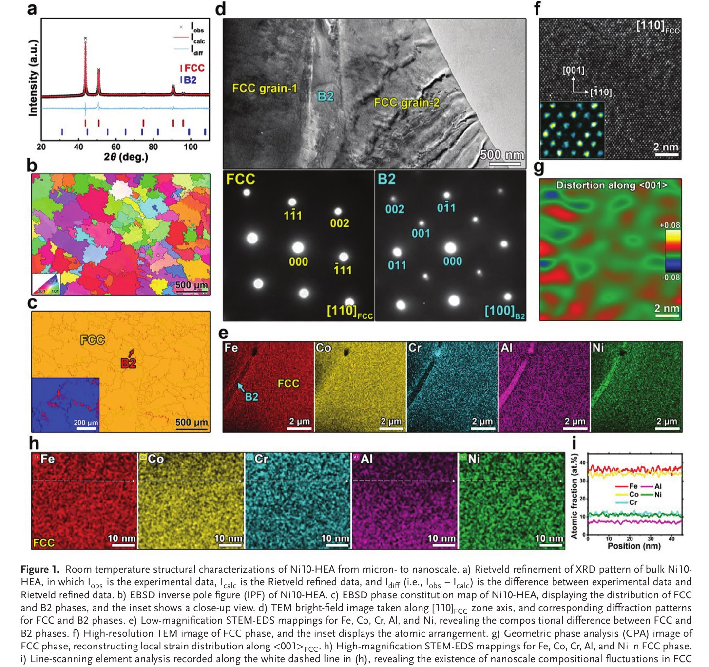
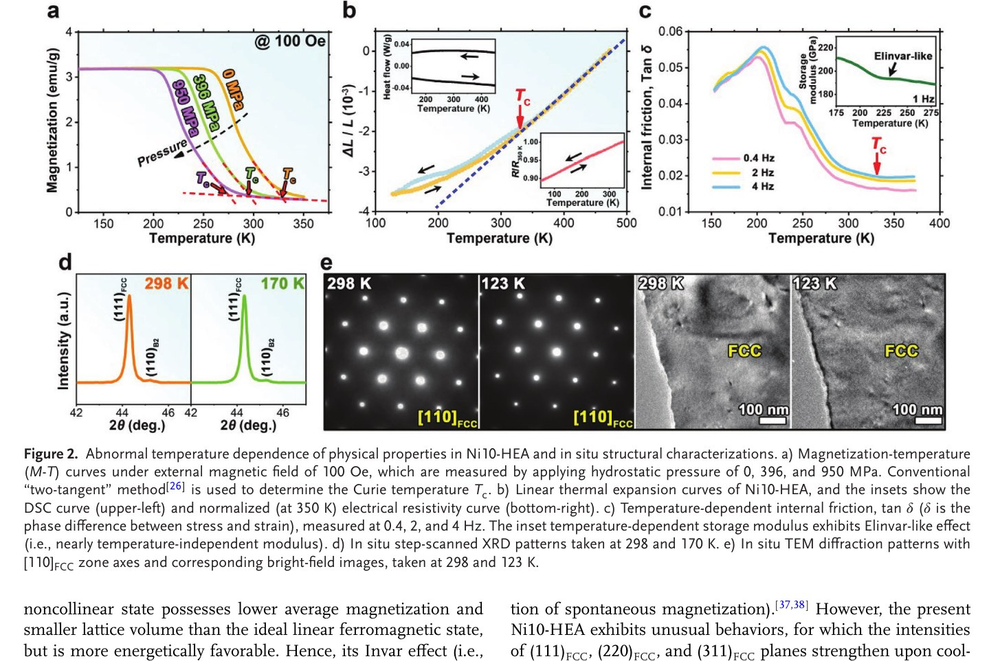
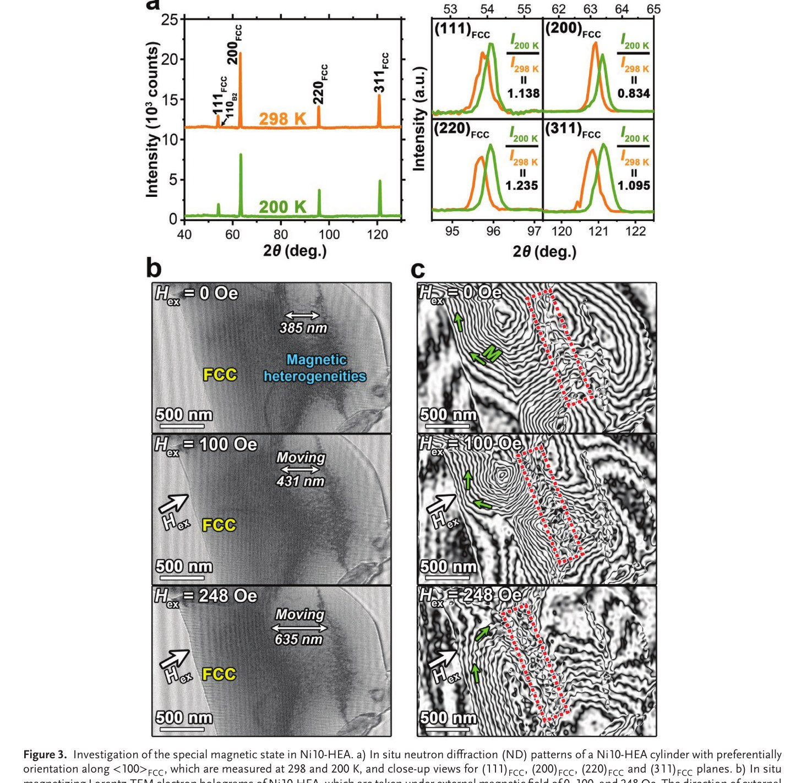
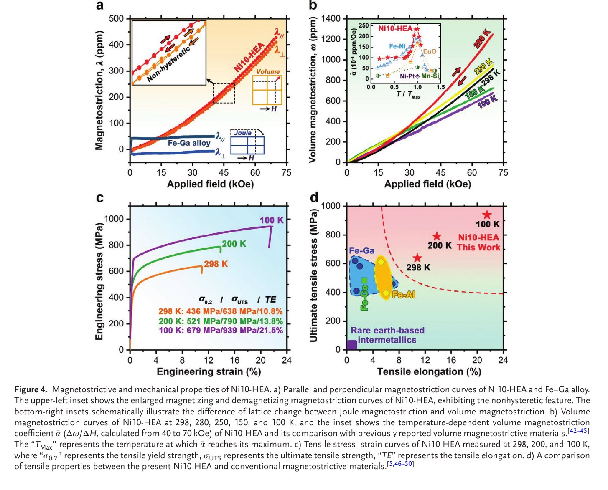
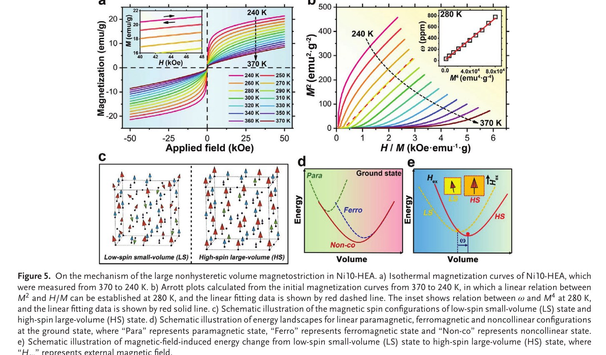
译文仅供学习参考，术语与数据以英文原文为准。已省略参考文献、方法与支持信息。